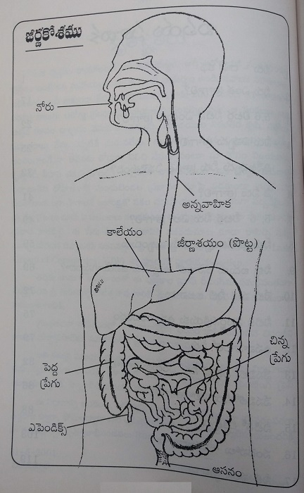
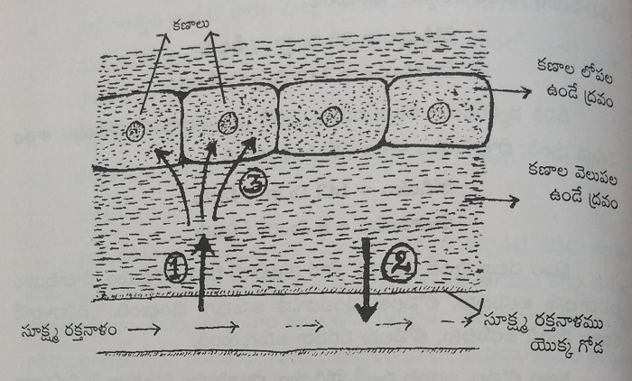
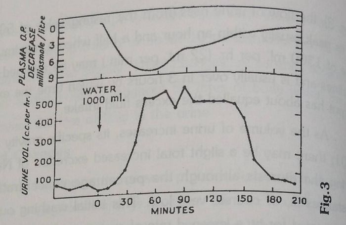

Water and You
(Steps for Happy Living - 8)
Complete Health
Protect.
Treasure Always
Enjoy.
Dr. Manthana Satyanarayana Raju
Table of content
Dedicated to
Intimate friend, Idealist, supporter of naturopathy
Sri Atluri Subbarao
With fondness and heart-felt feelings Neeru - Meeru (Water - You) dedicating the book.
- Dr. Manthena Satyanarayana Raju
Beloved - Atluri
In Andra Pradesh today, there would be no one who do not know Sri Atluri Subbaroa, a well-known and ideal businessman for all the young entrepreneurs. Not only in India, he is seen everywhere in the world, in US, in Malaysia, in China, in Telugu conferences, in cultural programs, technical meetings, he is seen everywhere. He is like and Andhra ambassador. His values, his unique personality, him smiling demeanour made him as an ambassador for the Telugu people in all countries for the conferences. He is by nature reforming and kind-hearted. Among his many virtues one virtue is: to dedicate himself in propagating the naturopathic knowledge around the world. This is very happy to know.
When I am spreading naturopathic methods in Vizag, which implementing them myself and making others implementing the methods, I had the thought of spreading the method throughout the state. For this good intention, he stood as a supporting piller in the capital assuring that he is there for any help. For a number of people who benefitted from the naturopathic methods, Sri Atluri Subbaro garu has been the source.
Committed to naturopathy, Sri Atluri Sabbaro garu has himself implemented the method in his life and welcomed the result with complete happiness. That's why, he intended to spread naturopathic life style from the capital of the state to worldwide. For this purpose, he is committed and to achieve his goal to has undergone so many hardships. Atluri Subbarao garu is efficient at work. He is a follower of karma, discriminative gentleman, virtuous person. That's why, he is born in an affluent agricultural family. In many respects, he emulated his father, Atluri Venkateshwara rao, who is a famous writer and who is talented in multiple domains. Atluri Subbarao garu is a great philosopher and he emerged as a rising star in spreading naturopathic treatment methods. At one time, Mahatma Gandhi's grand daughter, and an experienced expert in natruropathic treatment way, Smt. Sumitra Kulakarni, visisite the naturopathic centre run by Atluri Subbaro and expressed her opinion as, 'This medical centre reflects Gandhiji's method of living'. Many eminent personalities from around the world visited this centre, which symbolizes his idealism.
Naturopathic methodology is there in the past and now. It will exist in the future as well. But, people are rare who really work for the cause and to support it. Such a rare personality is Sri Atluri Subbaro garu. His support and help to this medical method cannot be forgotten. I express my deep-felt congratulations to him for the all the programs he conducted and the efforts he made for the welfare of the people so that they can live with good health and life span.
Heart-felt thankfulness
Dr. Manthena Satyanarayana Raju
Foreword
"Only people who are working for others are living – the remaining are dead, though living" For this famous Swami Vivekananda's quote, here is the live example, who has been striving for the welfare of people's health Dr. Manthena Satyanarayan Raju. His rishi-like life, self-less service, deep commitment towards the cause, concentration – he is adorned with all these virtues. I was surprised when he said, 'I want to write four books in one month' I thought. 'is it possible?" Even or multi-talented people, for writing a book, it takes months. But, in the stipulated time, he could write all the books, one per a week, which shows his commitment and dedication. That's why, he is not just a doctor for me. He is like a guru to us. I feel happy for the small support I could add in this gigantic task. It's my pleasure to write the foreword for one of the four books, written in this month, "Neeru – Meeru".
From 7-8 years, he made his body as an experimental lag and brought this method to limelight. He changed thousands of people through his speeches and books. Now, in Andhra Pradesh "Naturopathy Life Style – Manthena Satyanarayana Raju " There are no one who do not know. In his method, the most important thing is – drinking of water. The book, "water and you" (Neeru – Meeru) is his effort to reveal the secret scientifically "నీరు - మీరు'' Book.
In fact, this is not a book. It is the essence of experiences. The health light house created for implementation. So many things related to water are scitifically explained in this book such as, 'Benefits of water! How much water to drink? How to drink water? For each of them, proofs are also attached. After I met him, I have been practicing this method after understanding well. I have got good results. Before I met him, I used to think that naure cure method is something we practice one month in a year. I used to spend one month in a year in Bheemavaram ashram. After listening to his words, I have realized that it is not a treatment. It is a way of life that every human being to implement in his life. The required implementation way is given in this book.
In fact, civilization is started with water. Gradually, in the modern world, man has degraded with the growth of artificial food and facilities. He forgot the value of water. Knowingly and unknowingly, many people are making mistakes regarding drinking water. Dr. Manthena Satyanarayana Raju garu is determined to rectify all these mistakes and this book is a small gift for the health lovers. Neeru – Meeru . Dr. Raju, who has been offering naturopathic life style to people in an easy way "A bridge between people and nature, The chariot of health carriage"This is what I feel. It is true as well.
For giving this book to us, what all we can do as a response is to understand the content in it, implement it, get health and share health with others. That makes him very happy.
I wish Dr. Manthena Satyanarayana Raju works like this continuously, and spread the nature cure methodology worldwide. My deep-felt gratitude to him.
Gokaraju Gangaraju
Managing Director,
Laila Group of Companies.
31-5-2001
Vijayawada
My word to you
My heart-felt greetings to health-lovers,
Till 1991, I used to drink water like others. Regarding drinking water, there are many opinions in the society. No one is saying in the same way. People are writing in the newspapers differently. I was in a dilemma what to believe. Some say, ideally, we should drink 2 litres, others say 3 litres, some say 8 glasses. No one is telling the same quantity. All other creatures know how much water to drink, when to drink and when not to drink. I had the thought that, for us - the educated – why we are facing this dilemma about drinking water.
I started the experiment for myself, to know how to drink water, how much to drink water. I thought about how much water is required to carry food items, to eat, to convert the food into energy, and to discharge waste. As we have 3 times of water, I decided to give 3 times importance, I concluded that I should drink 5 litres of water. If we consider, our ancestors might have drunk 5-6 litres of water every day. To keep 68% of water clean and to address our needs, I have planned a systematic way to drink 5 litres of water to clean the 68% of water in the body and to address our needs.
As the body discharges waste in the morning, to send the waste out in the morning, before I eat something, I started to drink 2.5 litres of water, in 2-3 times. From past, it is determined that drinking 1 litre water in the morning is good. But, no one said, we need to drink again 1-1.5 litres of water again. Similarly, the effort that I made for easy motions by drinking water was good. Drinking water to fill the stomach full, without thinking anything else, and by focusing on the intestines and walk for 5-10 minutes, it gave good results for easy motions. With the first motion, the intestine won't be emptied, if I drink water for the second time and focus the mind, the second time, motions was further easier. I have realized that with the 2.5 litres of water that we drink in the morning, the cleaning of waste and blood purification happens.
Then, I thought about how to drink the remaining 2.5 litres of water in the day time. I read different books, and thought in a natural way. It should not disturb the digestion process and also to address our body requirements, I planned a systematic way. We need to drink water only when the stomach is empty. I have realized that we should not drink water when there is food in the stomach. According to this, I have decided to drink water – 1 litre before meals, and not to drink at all when eating, and to drink again, 2 hours after the meal, and again in the evening, 1 litre of water half an hour before meals. In this way, the stomach was not heavy, no shortness of breath and I didn't have any problems, and my digestion was good. According to these rules, I finalized to drink 5 litres of water every day.
With two times easy motions every day, the urine and sweat smells are gone completely, the body was feeling lighter, and I have observed good changes in my health, immunity is increased, and in many ways, I experienced good results.
Then, I shared this with my friends and acquaintances and they also implemented it and got good results. From 1994, along with the nature care methods, I started to spread water dharma as well. Through my speeches, people have understood the concept, and started implementing nature cure method. After some time, some might have stopped the nature cure methods, but they continued drinking water. In these 8 years, through my speeches, or by reading my books or learning from others, many lakhs of people started implementing this water dharma. Many people call us to share their experiences of drinking water. Some others express their happiness and health through letters. Because of this water dharma, how people experienced benefits, I just want you to know. For this purpose, I have added, at the end of this book, the experiences of some people, their experiences and their letters are published.
Regarding drinking 5 litres of water every day, many allopathic doctors checked the scientific reasons with me and they are also implementing it. Many doctors with good intension, have advised their patients to follow this water dharma. Some doctors would warn those who practice this water dharma. Especially, the first doubt that people get is: when you drink this much quantity of water, the kidneys to work hard and eventually, they get affected. The second doubt was about the blood getting diluted. The third one is: if we urinate more, all the useful minerals will go out of the body. All these doubts are common in people and doctors. If we drink 2 litres of water at a time, the blood won't get diluted or the minerals won't go out, or kidneys won't do overwork. I am not telling this. They are written in the body science clearly. They are written clearly in the physiology books which the doctors read. These three doubts are clearly explained in the inside pages of this book. To state that these three things are wrong with proof, we have published the essence from the physiology book. If someone has any doubts, they can read that.
To provide this water dharma to people, in 5-6 pages, I have written the essence and published in other books that Iin have written. In those books, they don't get good understanding about water. To explain the relationship between the body and water, I started the book, "Neeru – Meeru". When we drink 5 litres of water like this, so many friends of us will start asking questions to enquire. To explain them well, we all should know the information. This book is an attempt to help you understand the secret in the method of drinking water.
In terms of drinking water, this book is the answer for many doubts. No one so far has given us any clarity about drinking water. To give you such comprehensive understanding, I have explained from the chemical changes that happen in the body. In this book, in the first chapter, in some places, some words and some content may be a bit tough to understand. Considering the educated people, and to clarify their doubts, those details are included. You go on reading. If they are understandable, take them. Don't ask why all such things are written. Do understand that that information is needed by some. A book should be easily understandable to everyone and each one should be able to implement what is written. To provide the information even to ordinary people. I mention the same thing multiple times and in different ways. Those who have studied well, whose grasping power is more, should not mind otherwise and to get the concept well with good heart. Hope you understand my heart.
I have been thinking of writing the book, 'Neeru – Meeru' for the last 2 years. But, it didn't happen. I started to write the book in May, 2001. From May 1 to 7th, as scheduled, I could complete the book, in the stipulated tie. I thank God for providing the good thoughts and energy and capabilities to write the book in such a short period of time. I feel I am fortunate that through me, these health information is written for the benefit of all the people. For the last 8-9 years, thousands of people have followed this water dharma and learnt the results experientially, and motivated me. With that inspiration, I am able to write this book so that I am able to explain the secret of water to people. My special thanks to all the health lovers who have been implementing the water dharma and propagating the results and standing as guidance to many. I wish all the new people should read this book with focus, understand the concept well and start implementing them well. I am ready to take your advice and to clarify your doubts. Please send letters with such details. I hope you all read this "Neeru – Meeru" book with an open mind and will follow the water dharma.
//Sarve Janaa Sukhino Bhavanthu //
Yours Sincerely,
Manthena Satyanarayana Raju
Thank You
Wring a book is a gigantic task, that too, when it is connected to health, it is more gigantic. It needs a lot of capacity and one should get all support and help. Moreover, I planned to complete four health-related books in one month (1-5-2001 to 31-5-2001). I cannot forget the continuous support, effort, help of some good-hearted people, which helped my intention be converted into reality. My heart-felt thanks to Sri Gokaraju Gangaraju (M.D. Laila group of Companies, VJW) who supported my intension to give the people a healthy way of life. He created a beautiful cottage for us on the banks of river Krishna in Vijayawada, in a beautiful garden, in pleasant atmosphere, protecting us from hot, scorching summer, just to ensure that the task of writing the book is to continue without any obstacles. He himself used to check all the facilities we needed so that for one month, the task is not disturbed.
To Sri Turumella Koteshwar Rao, who did the proof reading himself efficiently, and to Chi. Birudu Raju Ramaraju, who co-worked with him.
To Chiranjeevi Vakada Durga Prasad, and Sreepada Ramakrishna who, during the writing period, spent time as my companions and helped me in creating the fair copies of the book.
To the printing press management and the staff, especially to Sri Shivajiraju garu, who helped in publishing this book in such a short time, who took this task as their own.
To all the health lovers, who practised this method, procured health and who provided their experiences through letters and over phone when asked, my heart-felt thanks.
Manthena Satyanarayana Raju
31-5-2001
Vijayawada.

1. Water - Its story
- In the beginning, human being was a friend to Nature - The modern man is anti nature
- Air, water, food - are the source and base for all living beings
- Give me what I ask - If you give as you like, what is my plight?
- If not eaten one day, it's okay - If not drunk one day, it's risky
- The whole body is full of cells - the cells are full of water
- Wherever you are there I am - Behind the salt, is water
- Know the percentages - Make changes in your routine
- Water from intestines enter blood - water from blood enter cells
- Not burdensome to kidneys - The essence won't go out through urine
- Let us drink more water - Let us observe the working of kidneys
- Kidneys seive well - Remove waste matter
- If water is over, it's fatigue - If you don't realize, you are out
- To explain scientifically is our duty - To think and implment is your duty
In this creation, all the living creatures are born after trees and moth are created. Experts say that it is almost 350 crores of years that the living beings started existence. In the course of evolution, man was born out of animals. Scientists also estimate that man was born around 6,50,000 years ago. As man has been loving since lakhs of years, he learnt from nature, what to eat, what to drink, how much to eat and drink and lived according to nature. As long as man lived close to the nature, he lived long and healthy and without any diseases and ailments. But, since he moved away from nature, with a different life style, though he is getting pleasures in life, but ultimately, he is knowing that the end result is misery. But, he is not able to come out of this life style. In this life style, from kids to old people, everyone is unhealthy and are not living up to their life span. There are many reasons for people to have so many problems and diseases. Some are the important reasons are: the changes in eating methods, drinking methods, discharging methods, working methods. If people realize their mistakes and think from the nature's point of view and implement the correct things, they can have good days. It is all in our hands.
We have spoiled our water dharma. We need to renew our water dharma so that we and our coming generations can live happily.
For the living beings to live in this world, the most important thing is air. Without inhaling air, we cannot live for seconds. After air, the most important thing is water. We cannot live without water for more than some days. Then, food is the most important thing, without which we cannot live for more than some months. If we provide these three things in optimum ratio, we can live upto 200-300 years. If the ratio of air, water and food is optimum, the body thrives with health. If we change the ratio, then ill health chases us like a shadow. Rishis and yogis lived life by knowing this truth.
In this creation, air occupied most of the space. After air, it is water and after water it is land. Like this, for all the living creatures, to live, they need air, then water, and then food. On this earth, one part is earth and three parts are water. This is the secret of creation. Respiration is not in our control. It is happening automatically. Air is the only thing we call can take freely, without any expenditure. We needn't think about the air which is not in our control. After air, the important things water and food are in our control. There, our smartness is needed.
In our body, three part of water and one-part matter are there. Similarly, in nature, in the food items, the same water matter ration is there: 3:1. For example, in guava, there is 76% water and 24% pulp. For other food items, there is even more water quantity. As in the creation, in us and in the food, the water and matter ratio is 3:1, the importance of water is more than matter. Remembering this body dharma, we need to maintain 3:1 ratio. It means, in a day, we need to give importance to 3 times of water.
If we use the body every day which has 3:1 ratio of water and matter, the water and matter will be spent gradually. To restore it, we need to fill with water and matter again. If we use a car regularly, the air will become less, water will become less. Oil will become less. Whatever is used, we fill it and run the vehicle. Similarly, when water is spent in the body, it asks for water. To replenish the water quantity, to quench its thirst, some people give water and some people give cool drinks. Some others give butter milk and coconut water. When the body asks water, we are not able to give it the same. When the water is spent in the car and it gets heated, we stop the car in the journey, and if water is not available, we will walk for 1-2 kilometres and then pour the water. But, we are not doing it for our body. Man has low esteem for his body vehicle. That's why we are so careless and lazy about our body. Just as we are making mistakes in terms of water, we are also making mistakes in terms of food as well. When we need food, the body asks food in the form of hunger. The food that the body asks for is different and the food we give is different. Similarly, if we use the three remaining elements, supply whenever the asks for, then the body will be in our control. But, unlike that, if we give something else other than what it asks for, then we need to listen to it. Take care!
In our body, the water is 3 times because, every activity in the body happens in water. In the body, water does 3 times work. If the body gets the water it requires every minute, then it can complete its responsibilities immediately and efficiently, and protects our health. If we start a work, keeping the required amount in hand, then the work gets completed easily. Similarly, if the required water is supplied to the body, all the responsibilities will be fulfilled. We are fulfilling the duties of 1-time importance of matter, but we are not giving importance to the 3 times of water. If we don't eat food for one time in a day or for one day, it is not a problem to the body. The stored food items will be used for that day. But, if we don't drink water for one time in a day, or we don't drink water for a day, the very moment, the problems start. If we think, we have taken water yesterday or drank enough in the morning, then it is wrong. Water doesn't get stored in the body like food and doesn't take care of the needs. Whenever you drink water, then only, you will get the benefits. Just as the food is emptied in the body every time, water is also emptied like that. Just as we will the emptied stomach, we need to store water every time continuously. When will we have the habit of filling the water just as we fill the food?
To get complete benefits to the body through our food, it is possible only with water. When water is not enough, whatever food you eat or how costly food you eat, the benefit that you get to the body is very little. The quantity that humans eat is very much. Despite eating so much, he is not getting enough energy. We can reduce 50% of the current food, but can work with double energy. That is when we give importance to water and drink more water. This experiment, I have done on myself and hundreds of others. I have observed that in them the energy and capabilities have increased and they did not have tiredness, shortness of breath and the efficiency is also increased. Unless you experience the benefits of drinking 3 times of water, you won't realize it. For a tree to gain strength, we either add cow dung or fertilizers. If we add one cup of fertilizer, we can add 10 cups of water in the beginning. That excess water absorbs the less quantity fertilizer, reaches the roots and from there, it takes the essence of fertilizer to the branches, and leaves and gives the whole tree strength. If there is enough water for the fertilizer, then this process happens. If food and fertilizer are different, then that is what happens in us as well.
We should know about the 3 times of water in the body – where is this water stored in the body and in what quantity, in what form, what activities it is doing, how the body will fell when water is insufficient, when there is more water how does the body feel, how much water is consumed in the body, what symptoms are shown when water is insufficient in the body, what is the relation between kidneys and water, what is the relation between salt and water. Unless we know about all these things, we don't understand why we should drink water more. Unless we understand the concept, we cannot do anything. If we understand well, think well and move forward, we will know the role of water in the body.
Now, we are going to discuss about body science. Some people may not understand the relationship between blood, water and cells. Try it. Wherever you don't understand it, leave it. Don't say that these things are not necessary. In the coming chapter, as I am discussing some topics which some people may not understand. But, don't think otherwise. All the other chapters will be easy for your convenience.
1. Water in the body: In the body, 68% is occupied by water. The water in the body is inside the cells and is outside the cells as well. The liquid that is inside is called intra cellular fluid. The fluid that is outside the cells is called extra cellular fluid. The extra cellular fluid is available outside the cells in different forms and in different places in the body.
1. Plasma in the blood
2. Interstitial fluid (the fludi that occupies the space between cells
3. Cerebrospinal fluid (the fluid that lies in the mind and in the backbone)
4. Serous fluid (the fluid that is in the outside layers of lungs) and Peritonial Fluid (the fluid in the peritonima which cover the intestines in the stomach)
5. Synovial fluid (fluid that is in the joints)
6. Digestive juices (the fluids that are in the form of digestive juices)
7. Urine
Just as we discussed about the fluids that are outside the cells, let us see about the fluids that are inside the cells. Every organ in the body is a combination of many cells. The water percentage in the cells of different organs is different. The water percentage available in the tissues of the muscles in the body organs such as heart, mind, lungs, will be 70-80% of the weight of the organ. The water percentage in liver and skin is 70%. The water percentage in the bone is 20%. When a person is 70 kilos of weight, the water in him will be 43 litres. In it, if the fluid outside the cells is 11 litres, the fluid that is inside the cells is 32 litres. In a woman with 57 kilos of weight, the water is 29 litres. In it, the liquid outside the cells is 8.5 litres and inside the cells is 20.5 litres. So far, we have learnt how water has occupied inside and outside the cells in the body, Now, we will see how the liquids inside and outside the cells are controlled.
2. Control of the liquids, inside and outside the cells: The sodium (salt) and the potassium salts balance the water percent in the fluid inside the cell, water percent in the fluid outside the cell. Because of these two salts, the cell is able to send water inside and outside.
In the fluid inside the cell, socium percent is less and potassium percent is more.
Sodium = 20 m. grms / litre
Potassium = 110 milli grams / litre
Contrary to this, in the fluid that is outside the cell, sodium percent is more and potassium is less.
Sodium = 143 milli grams / litre
Pottasium = 5 milli grams / Litre
The thin layer that covers the cell is so convenient that it sends water, sodium, and potassium salts inside and outside. Due to this, the flow happens from inside to outside and from outside to inside in the cells.
If the sodium and potassium ratios are as stated above, the water percentage inside and outside the cell are optimum. If we take more salt in the food and if the water percentage in the body is reduced, the water percentage inside and outside the cells will change.
The relation between salt and water: When there is more sodium (salt) in the blood, the osmatic pressure of the blood increases and the water inside the cells (interstitial fluid), enters the blood. At the same time, the more salt that is in the blood, enters from blood, into the fluid that is between the cells. When the salt enters here, the water inside the cells will also be dragged outside the cells. The cells will lose the capacity to throw out the waste matter from them. We see joint pains and bloating of face in those who eat more salt. The reason is as said above, the water in the blood goes outside the cells. That is displayed as bloating. When there is more salt in the blood, the kidneys try to push them out, and as a result discharge more urine.
3. The way water reaches cells

1. Water from blood, going into the liquid outside the cells
2. Sodium and potassium coming into the blood from the fluid outside the cells
3. Water from outside the liquid of cell to enter into the cells
From blood to the cells, from cells to the blood, water change happens continuously. The water that we drink is absorbed by intestines and it reaches to blood. From blood to the cells how water reaches, we will understand using the image given above.
రక్తంలో నుండి నీరు కణాThe osmatic pressure causes that the water from the blood enters into the liquid outside the cells, and from the liquid outside the cells into the cells. Let us see what osmatic pressure is.
Osmatic Pressure: When we separate two solutions of different densities with a layer, the pressure that is used to make water travel from the lower density solution to the higher density of solution "Osmatic Pressure" is called.
As shown in the above image, if blood is considered as a solution, the matter that is between the cells is a solution. Between these two solutions, the subtle blood vessel wall separates these two. Let us see how water change happens, through this layer, from blood to the liquid outside the cell. Similarly, through the layer around the cell, water change happens in and outside the cell.
The changes that happen inside, when we drink water: Before eating something in the morning, we drink 1-1.5 litre water, which we consider as good. But, some people have the conceptions that if we drink water in such a quantity, the blood will get diluted, the pressure in the blood increases, and causes inconveniences to the kidneys. They don't drink sufficient water and they stop others who are drinking good quantity of water. It is scitifically proved that there is no harm in drinking more water. For those who want to learn about it more in depth, here, we are publishing a chapter from the 35th page of the book, 'Applied Physiology', by Samson Wright. This book is published by Oxford University.
REGULATION OF WATER BALANCE AND COMPOSITION OF BODY FLUIDS BY THE KIDNEY
Water Diuresis
If 1-2 litres of water are drunk, particularly on an empty stomach, absorption takes place rapidly from the intestine. The passage of water into the blood slightly dilutes the plasma and decreases its crystalloid o.p. by about 3 per cent. (i.e., corresponding to a decrease of concentration of about 10 milliosmoles per litre) the plasma volume increases slightly. These changes are so small because the excess water is distributed throughout 50 litres of body water, and the kidneys increase the loss of fluid in the urine.
NORMAL
[K+] = 150 mEq/ltrs [30 ltrs]
[Na+] = 150 mEq/ltrs [15 ltrs]
Drink 2 litres of water
EQUILIBRIUM
[K+] = 143.8 mEq/ltrs [31.3 ltrs]
[Na+] = 143.8 mEq/ltrs [15.7 ltrs]
Fig 2: Changes in ICF and ECF produced by drinking 2 litres of water
Body Fluid Changes
The trivial dilution of the plasma proteins decreases their osmotic pressure to a negligible extent (e.g., from 25 min to 24 mm. Hg); likewise no significant rise occurs in the capillary blood pressure. The flow of water out of the blood vessels is the result of the decreased crystalloid o.p. of the plasma.
The crystalloid o.p. of the interstitial fluid is higher than the reduced o.p. of the plasma; water therefore passes from the plasma onto the interstitial spaces. (Electrolytes simultaneously diffuse in the other direction, i.e., from the interstitial fluid into the plasma, but the rate of movement of the water in the opposite direction is faster and more important. At equilibrium the volume of both plasma and interstitial fluid is increased and both fluids which together comprise the ECF have an identical but lower crystalloid o.p)
The balance that is normally maintained between intra and extracellular fluid is disturbed, and owing to the fall in crystalloid o.p. of the ECF, fluid enters the cells. Finally the ingested water is distributed equally throughout all the body water and all the body fluids have a slightly lower crystalloid o.p. If there were no renal response and if the 2 litres of water ingested were to be stored in the 45 litres of body water the crystalloid o.p. would fall by only 4.4 per cent.
Renal Changes
A renal response occurs after a latent period of 15-30 minutes [Fig.3]; the flow of urine rises (from the resting value of 50 ml. per hr.) to its peak usually within an hour and a half when a maximum excretory rate of 1300 ml. per hr. (22 ml. per min.) may be attained; the diuresis declines and is usually over in 3 hours by which time the excess urinary output has about equalled the excess fluid intake.
As the volume of urine increases, its specific gravity falls, e.g., to 1001; there may be a slight total increased excretion of NaCl and urea during the diuresis although the percentage concentration of these substances is, of course, very low. This initial washing out of solids is compensated for by a lessened rate of excretion after the diuresis is over. The point to emphasize however is that the kidney responds selectively by an enormous increase in water output with little associated loss of solids. There are no changes in renal dynamics. There is no increase in renal blood flow; there is no increase in G.F.R. unless the urinary volume exceeds 900 ml. per hr; it is quite clear therefore that the diuresis is due to decreased reabsorption of water by the renal tubules. A urinary output of 900 ml. per hour (= 15 ml. per minute) means that, of every 130 ml. of glomerular filtrate although 16 ml., as usual, reach the distal tubule per minute, 15 ml. are allowed to escape in the urine (compared with 1 ml. as normally.)
The level of diuresis is of the same order of magnitude as that seen in clinical diabetes insipidus and is likewise due to lack of ADH. The dilution of the plasma crystalloids switches off the hypothalami cohypophyseal mechanism responsible for ADH secretion. It will be noted that the dilution of the plasma precedes the onset of diuresis. During this period it may be supposed that the circulating ADH is being destroyed and that no fresh ADH is being secreted; as the blood ADH level falls diuresis sets in.

Fig. 3 - Changes in urine volume and plasma crystalloid osmotic pressure after drinking 1000 ml.of water in man. Urine volume in ml. per hour. Change in plasma crystalloid pressure in milli-osmoles per litre. The maximal fall in plasma crystalloid osmatic pressure is about 10 milli-osmoles per litre. The dilution of the plasma precedes by about 15 minutes the onset of diuresis. [After Baldes and Smirk (1934) F.Physiol.(Lond) 82)
Now, let us see why drinking water in such quantities doesn't do any harm.
When we drink 1-2 litres of water at a time on an empty stomach, in a few minutes, that water is absorbed by stomach and intestines. The water that the intestines absorb reach blood. As a result, the plasma in the blood gets diluted. Though blood is diluted, there will be no considerable change in the osmatic pressure of plasma. The plasma osmatic pressure gets reduced froo 25 mm Hg to 24 mm Hg. The quantity of blood increases slightly. By drinking more water, there won't be many changes in the blood. Because, the water we drink gets mixed up with the existing 43 litres of water and travels around the body. There won't be any difference in capillary blood pressure.
When the osmatic pressure in the blood decreases, the water from blood enters the liquid which is between the cells. Because, the osmatic pressure between in the liquid between the cells is more than the osmatic pressure in the blood. We have learnt how the water from blood enters the area outside the cells. Now, let us see how water reaches into the cells from the liquid outside the cells.
When water from blood enters the liquid between the cells, in the opposite direction, the sodium and potassium salts from the liquid in the cells enter into the blood. When the sodium and potassium enter blood, then the osmatic pressure of the liquid that is between the cells. Reduces. The osmatic pressure in the cells is more than the osmatic pressure of the liquid that is between the cell. Because of this, the water from outside the cells enters the cells. Like this, the water that we drink reaches all cells equally. Now, we will see what changes happen in our kidneys due to the water we drink.
The changes that happen in kidneys when we drink 2 litres of water on empty stomach: In a healthy person's body, the kidneys produce 50 milli litres of urine every hour. The maximum limit of urine that kidneys can produce in one hour is 1300 milli litres. Once urine is produced at this maximum limit, then the production of urine reduces gradually. Similarly, due to the huge amount of water that we drink at a time, in 1.5 hours, around 1300 milli litres of urine will be produced. Then, urine will be produced only in small quantity. In the first 3 hours of our drinking water, the more water we drink, the urine will be produced in the same quantity. But, just because we drink more water:
1. There won't be any change in the functioning and energy of kidneys
2. The blood percentage flowing in the kidneys won't increase
3. The filtering rate of kidneys won't change.
When more urine is secreted out, the sodium chloride and urine that go along with urine will be discharged more. But, nothing using to the body will be discharged. Only waste matter and unnecessary things will be discharged out of the body.
The reason for more urine production: Normally, when kidneys filter the blood, they absorb the required amount of water and discharge out the remaining water in the form of urine. When we drink more water, it does not need to absorb the filtered water. So, our kidneys have the great power to send out the water in the form of urine and at the same time, it won't allow the required things to go outside. We have learnt the relation between kidneys and water. So, don't have false notions that if we drink 5-6 litres of water every day, kideys will have more work to do. Drink water boldly and get good results, instead of getting other health problems.
So far, we have learnt in detail that drinking more water is good for your heath, rather than a damage. Now, we will learn what damage is caused to the body when water is insufficient in the body.
Changes that happen when water percentage is reduced in the body: Every day, the water we drink is spent through urine, sweat, exhaled air, and skin. Let us see how much of water goes out of the body in these four forms.
1. Through kidneys, in the form of urine - 1 to 1.5 litres
2. Through the skin, in the form of invisible sweat, in the form of visible sweat, overall 600-800 ml of sweat and when sweat is more it would be around 2 litres of water goes out.
3. 400-500 ml from the through the lungs
4. 100 ml through the faeces
We need to fill the water that we lose in this way. In case of dysentery and vomiting, we will lose water percentage. It may cause harmful effects if we don't provide the lost water.
When the water is decreased in the body, the liquid percentage outside the cells decreases and as a result, the osmatic pressure increases that time, the water inside the cells will be pulled outside. The cells that lose water shrink. Because of that, the chemical reactions that happen in the cells gets damaged. There won't be any chance for the food to turn into energy. The sodium and potassium salts go out. The quantity of urine decreases. When we lose water, we also lose electrolytes which are very important to the body.
Changes in kidneys when water percentage decreases:
1. No change in the blood that comes to the kidneys.
2. The water content will decreases in the blood filtered by kidneysమూత్రపిండాలు వడకట్టిన రక్తంలో నీటి శాతం తగ్గుతుంది.
3. Less urine is discharged out.
4. In the blood, nitrogen related waste gets stored such as urea, uric acid, creatanin, phospates.
5. Unless we discharge more urine, these wastes cannot be discharged out.
Problems that we face when water is insufficient in the body:
We have seen that when water is insufficient in the body, we will have different problems such as thirst, fatigue, dry skin, skin losing its stiffness, dry eyes. By drinking more water, the kidneys can do their tasks easily. They can clean up blood. I heard (on TV) a kidney specialist telling that to work kidneys well, we should drink water not less than 4 litres. For kidneys, nothing else can do such favour as water does.
All this has been written because to explain what water does in the cell, in the body. For most of the people, such things are tough. For some people, unless such things are written, they don't understand. Especially, our effort is to prove scientifically, in this chapter, that there is no harmful effect if we drink a lot of water at a time or more water every day. If we understand how great the role of water in the body, we will try to drink water. If we know the thing, no one will be-little water any more. We will gradually learn about other important topics such as how much water to drink, how to drink, when to drink etc.
2. How much water to drink?
- Drink water according to nature's rule - Then, body will have enough water
- Bad smells in the body - Suggest that you must drink water
- Give water the second place - Otherwise, you won't have place on the earth
- If habituated with this water drinking - The body gets happiness
- Drink as I tell you - You will see the difference
We have no clarity how much water we need to drink every day. Someone says 8 glasses, some other says 3 litres. The doctor says, whatever amount you spend, that much you replenish with. In newspapers and weeklies, they will say some other measurement. But, what Satyanarayana Raju garu telling is different. The people are confused with all these statements and they are not certain what to do. Why are facing such confusion for such a small thing? Because, we are humans. Let us think how to come out of such small doubts.
In our body, the water that is used to cater for the activities such as faeces, urine, sweat, respiration, digestion is around 2.5 litres. This is what generally we all spend every day. What the expert doctors who have understood the body science state about water is: to replenish this 2.5 litres of water on that day. So, the water that is spend for different needs, it is re-supplied then, it won't come down from the 68%. Then, we will be healthy. But, if humans eat the natural food which is created for them, without spoiling it, as there is less waste matter, that little waste can be discharged out with this 2.5 litres. Good health will come with this. If we eat only raw food, the 2.5 litre water quantity will be sufficient and the body will be clean and pure, without any smells.
What the doctors tell about the 2.5 litre water is true in this case. That kind of raw food was eaten by the early man. Now, the present man is boiling and cooking that raw food, and is not satisfied with the taste and is adding salt, oil, ghee, sugar and spices – spoiling every food item, every day and every time. If we eat this kind of food, the waste matter, will enter the body hundred times every day. All these problems, will be solved only with water. If water is not sufficient, they will get dried inside and get stored. As you think, if 2.5 litres of water is sufficient for our needs, and all waste is going out, then your mouth, saliva, urine, sweat should not smell bad. When the waste matter is left in the body, we can check them by the smell, but not with any blood test or scanning. Only with these smells, we can know if the water is sufficient or not. As all of us having these smells a lot, it means that the water is insufficient. Hope you understand that 2.5 litres of the less quantity of water is not sufficient. If you drink less water, it doesn't give you any benefits, so, don't spoil your future by drinking less water. Of the 68% of water that the body has, it is not our responsibility just to replenish the 2.5 litres of water. We also need to learn how to keep the 68% of water pure in the body. To maintain that cleanliness, we need to drink water daily. Now, we will know how much water is needed to cater to these two needs. Similarly, we will learn the link between water and food.
For the body, the most important thing is air, then water and then food. They are given as the first, second and third positions. We also need to understand this secret and behave accordingly. We have identified air in the first position and are able to use it properly. In our body, there are 3 parts of water and 1 part of matter. It means, we need to give 3 times of importance to water and 1 time of importance to the food. This is what the body dharma is teaching us. Let us see how we are behaving in terms of water and food.
In our body, the water and matter are in 68:32 ratio. In a 70 kg person, the water content will be 43 litres. In the remaining 27 kg weight, the matter will be made with food (muscles, nerves, bones, cells etc). Since the time we get up and till we go to bed, what are we thinking most – about water or about food? Is water going more inside or food? How many times are we drinking water? How many times are we eating? Think.
Now, introspect as to what you have given more importance. Try to recollect how we have changed the body requirements. You moved the second position water to third position and brought the 3rd position food to the second position. To make such kind of changes in the body as we like, is body something we have made? Are we the creator of it? No. Then, we don't have the right to change the body properties. Think about it. As we have made such changes, the body is not able to do its prime task which is – to support us and to work as a tool to carry us to our goal. To work with this body safely and pleasantly, we need to give water the second place and food the third place. This ignorance should not continue.
To keep this body healthy, which is 3 times of water and one time of food, we need to know how much water we need to drink and how much food we need to take and to implement it. Compared to food, the water should be three times more (3:1). See, how easily the problem is solved. Here, the rule is: 'The greatest truths are the simplest'
I don't need to answer how much water we need to drink. The body is telling the secret. This is what everyone's body is telling. If we observe the body and nature, every day, everyone can know their health secrets themselves. For 1 time of food, 3 times of water is nature's law. That is the dharma of the body.
If food and water is 1:3 ratio, then how many kg of food and how many litres of water? Water and food is required daily, according to our work. People who work more, eat more. People who work less, eat less. Here, should we decide water according to food or food according to water? As we all love eating, let us first decide food and then 3 times to it we will determine water. The quantity of food that each man eats varies. Whatever amount of food one eats, 3 times to the food, we need to take the water. From 15 years to 50-60 years, on an average, if we weight what we all eat, around 2 kg of food. So, drinking of 5-6 litres of water is fine. Those who work heavily, will eat 2.5 to 3 kg food. They should drink 7-8 litres of water. If we eat such heavy food, the waste will also be produced more. The excess waste will come out along with the water.
So far, we have eaten 2-3 kg of water. But, we didn't drink water, unknowingly. Some people drank 2-3 glasses of water, some 4 glasses, some people 2 litres and the highest is 3 litres. Heavy food but less quantity of water. It is like more rice and less water meant to cook the rice. When the water meant for cooking is less, the rice will be hard to digest. In our body also, the waster matter doesn't get digested easily. Since then, the disease particles start growing in the body. Slowly, the immediate diseases and then the chronic disease start sprouting in the body. Only when we drink water in the true ratio, the body can discharge out the disease particles and keeps the body clean.
According to the body dharma, let us start drinking 5-6 litres of water. The 2.5 litres water will be spent for usage in the body and the remaining 3 litres of water will be used to clean up the 68% of water. With this 5-6 litres of water, the body needs and discharging activities can be taken care of. So far, you have had less water and more food. In that way, you know well, how your health will be. From here, for 1-2 months, drink more water with the same quantity of food. Check the results. You will know if it is easy and lighter or not. Then, you can decide whether to drink water like this or not. You give the judgement on this. Your body tells the result. You do this experiment on yourselves.
Some changes need to come yet in you: Instead of saying, 'please come for breakfast', ask, 'if you drink water, then come for breakfast'. Instead of saying, 'eat more', beg for, 'drink some more water'. Instead of giving tea and coffee to your relatives and friends and building pollution, given them water in a big tumbler and share the 5-6 litres of experiment with them.
3. Why to drink 5-6 litres of water?
- Drink water knowing the responsibilities - Otherwise, you will end up with diseases
- Night duty is for night - day duty is for day - If you forget this, then it is deadly
- If you drink water enough it is good - the life span of the cells increses
Many people know that drinking more water is good. But, they are asking us to drink without telling how much water, when to drink and how to drink. If you drink 5-6 litres of water, anytime you want especially while eating food, there will be more ill effects. In newspapers and books, they are asking us to drink more water but, not explaining how and why. We are drinking this 5-6 litres of water, to cater for our daily needs and to create a clean environment in the body. When we are drinking for the benefit of the body, it is better to know the responsibilities of the body before drinking. We should not act without awareness. Let us learn about the responsibilities that the body conducts.
Body responsibilities (tasks): The day is divided into two parts: morning 12 hours and night 12 hours. The morning light and night darkness are different. Every living being has some responsibilities. The beings that eat and roam in the morning take rest at night. Those that eat and roam at night take rest in the morning. Human being are active in the day – they are diurnal. In the 12 hours of the day, they eat and roam, and in the 12 hours of the night, they should take rest. That is their dharma. This is the time table that nature has given them. According to this principle, the responsibilities are determined for the body. If we behave according to this principle, these responsibilities will be fulfilled. If there are any changes in them, then we will be affected by diseases.
These responsibilities are two types: 1. For the body, morning duty. 2. For the body, night duty. These two duties are different. The body has to do these two duties every day. If the body does these two duties separately in the day, it will be healthy. If the body does the day's work at night and night's work at day, it loses its health and life span. It will be flooded with diseases.
1. The body'f day duty: Our body, in the day, does two types of tasks:
First type : Digesting the food taken, carrying the digested food to the cells, then converting the carried food to energy, carrying the released waste matter to the secretory organs.
The second type: Every day, the cells in the body die in crores, after completing its life span. In place of the dead cells, producing new cells.
For these two tasks to be done successfully, water is very much needed. When we drink water well, the digestive juices are produced. If only we drink water, the digested food enters the blood. When there is water in the right ratio, the food gets converted into energy. All these tasks happen in the presence of water. For these duties to be done perfectly well, it is good to drink sufficient water in the appropriate time. It is not use drinking water whenever you like.
2. Night duty of the body: The body does two types of duties at nigth:
First type: Whatever waste (faeces, urine, sweat, carbon dioxide) is produced by the food eaten in the morning, will be discharged in the day time. The cells will be working on the task of discharging waste at night.
Second type: Every day, so many cells in the body get diseased. Repairs the diseased cells. Similarly, if there are any problems for the body, any injuries, or if there is any disease, it saves us from all of such things by doing the required repair.
If we need to discharge the waste matter that comes at night, through four forms, they all need to soak in the water to travel. For the waste to get soaked and to come out, there should be enough water in the body. If the water is insufficient, they get dried up inside. If air and water is sufficient in the body, then only the body repairs itself. For the night duties of the body to run well, enough water is required – that too in the appropriate time.
The 5-6 litres of water that we need to drink, should be taken as separately – to execute the tasks that needs to be done day and night separately.
1. The water that need to drink before eating anything in the morning: This water is useful to clean up the waste matter that is released the previous night. Thought at night, the body does the cleaning and repair, as we cannot get up and drink water during night, from the time we get up and before we eat something, this water is useful. If we drink 2.5 to 3 litres of water before breakfast, all the waste will be thrown out of the body and the body becomes healthy.
2. Water that needs to be drunk at the day time: This arrangement is to take care of the body needs, considering the day time duties. This water comes under the time - from breakfast time to till the evening, 6-7 pm. In the 5-6 litres of water, 2.5 to 3 litres of water is spent before breakfast, the remaining 2.5 to 3 litres of waster is to be spent for the day duties. Every day, the body does two parts of responsibilities. To make the tasks successful, we need to drink water into two separate segments. If you think that we have had enough water before breakfast and don't drink water during the day time, the body will face problems. Similarly, if you drink in the day time and don't drink water before breakfast, the waste matter that should got out before breakfast will create problems.
Every day, the body needs to do its duties two times a day. That means, you should be aware of the time to provide water to the body. The remaining part, it will take care. If feel lazy to supply water to the body, then it is difficult to get health. Without spending a penny, if you don't follow this easy cleaning water dharma, then life is waste. There is nothing easier health secret in this world. I wish everyone will understand in detail how to drink water before breakfast and during the day time and start drinking water from tomorrow and get excellent results in the coming days.
4. When to drink water?
- Food for hunger, water for thirst - to get in time, that is your strength
- If it is dry inside, it will be dry in mouth - if you keep the mouth wet, the stomach will be wet!
- Give water when the stomach is empty - Give support to the cell activities
- With natural food, the thirst is good - With unnatural food, it is not thirst
- The friendship of tongue with salt and chilli power - for the body high thirst
- More salt outside the cell - danger to the water in the cell
- While eating, no living creature drinks - After digestion, it doesn't stop drinking
The man who is supposed to walk on the earth, with his intelligence, is able to fly like a bird in the sky. Similarly, is able to swim like fish in the water. But, is unable to live on the earth properly. That's why he is not able to understand that to live well, we should drink water well. Despite the growth of civilization, with such ignorance, he is making mistakes. For every creature in the world, they know when to drink water. The animals belonging to the same clan drink water in the same way. Only humans, drink as they like – one drinks before eating, another drinks after eating, the other one drinks whenever he likes, without discipline. It is so sad that man living in nature doesn't know the nature's dharma. Time is passing by, without realizing that we are drinking water completely against the nature's rules. If you don't be aware now, you won't gain your lost health. So, let us at least understand now, what is the body's dharma and the nature's dharma in terms of water.
If we question when to drink water, the answer is when the body asks for. When the body needs food, it asks for food in the form of hunger. When it needs water, it will ask for water in the form of thirst. It means, when the body asks for water in the form of thirst and if we drink water, then, our thirst is fulfilled. We feel thirst in two situations.
First one: The natural thirst when the the body needs water for its body needs
Second one: The unnatural thirst that is used to digest the various tastes.
For those creatures and humans, that take natural food, they have only one kind of thirst – the first kind. The second type of thirst happens to people who use salt and water for the sake of tastes. Unless we understand the two types of thirst, we don't understand when to drink water. We will also know whether the thirst we have all these days fulfilled is correct or not. So, first…
Natural thirst and its property: If you take natural food, you will have natural thirst. When taking natural fruit, vegetables, grains and roots, we don't feel thirsty in the middle. Even after eating, we won't feel thirsty. Even if we have the habit of drinking water during a meal, we still won't feel thirsty, if we eat fruit, leafy vegetables and vegetables. In food itself, the information is there when to drink water. When the whole food gets digested, then we will feel thirst. This is natural law. That's why no creature drinks water while eating. Similarly, if we don't cook food and add salt and oils, then, we won't feel thirst. When the cells need thirst, then we will feel thirsty. That is the natural thirst and healthy thirst.
In our body, there are some crores of cells. All the chemical reactions in the body happen in the cells. In the cells and outside the cell, it is all water. For the continuous chemical actions in the cells, water is needed. In the presence of air and water, the food items become energy and then burnt as waste.
When water is reduced in the cells, to adjust the water ratio, instructions are passed from the cell to the nerves in the mind, in the hypothalamus gland, to the centre which protects the water ratio. When water is reduced in the cells, this centre will be aroused and we feel thirst. As the water is reduced and the saliva glands won't ooze, the mouth gets dry. These instructions will reach the reflectors under the mouth mucus layers. Then, we will feel the feeling to drink water. When water is reduced in the cells, due to the thirst, our mouth doesn't get dried up, immediately. Such things happen only when we delay drinking water. Though we don't see these properties, we should drink water.
When the water we drink through stomach and intestines, enters the blood, and then from there it reaches the cells, then the need is addressed. When the water needed by the cells is supplied to them immediately, the cells can do their duties successfully. The water that we drink reaches the cells in 20-25 minutes, their desire is fulfilled and the thirst is fulfilled. So, in this way, if the water we drink should enter the blood through stomach and intestines, the stomach should be empty. When we drink water only when the stomach is empty, then the thirst is quenched. What we need to understand is, we need to drink water only when the stomach is empty – not when the stomach is full.
Let us see why the thirst won't be quenched when there is food in the stomach. Assume that the cells get thirsty when food is there in the stomach. When the instruction comes from the mind to drink water, you will drink water. The water enters the stomach. As there is food in the stomach, it is natural that the water gets mixed with the food. The water that mixes with the food, should stay in the stomach intestines till the food gets digested. As long as food is there in the stomach, water alone cannot enter the blood. The time that is required for digestion, depends on the property of food. It may take around 2-4 hours. The water we drink to quench the thirst of the cells, enter the blood from 2-4 hours, and from there enter the cells. It means, after we drink water to quench thirst, it enters the cells after 3-4 hours. Until then, the thirst of the cells won't be quenched. Just as we suffer if we don't get food 3-4 hours after we feel hunger, the cells also suffer in the same way. We can control hunger, but we cannot control thirst. So, we have learnt that if we drink water while eating food, the thirst of the cells won't be quenched.
Even the cells send the instruction through mind to the mouth, to quench their thirst only when the stomach is empty. They know that, as long as food is there in the stomach, if they send the signals, they know that the thirst won't be quenched. That is nature's law, as well as the body's law. According to this dharma, when the stomach is empty, are we feeling thirsty or not, if yes, for how many people? For those who feel thirsty when the stomach is empty, it means, they are living close to the nature, and living naturally. For those who feel thirsty when the food is in the stomach, it means, they are living against the nature's law. If we check, to which category people belong to, majority of the people belong to the category of getting thirsty while eating. We should understand the reasons for getting the thirst unnaturally and to fix them. Many people argue that while eating we are feeling thirsty, which is the right thing. To understand why such thirst is not correct, you should understand clearly, 'unnatural thirst and its properties'.
Unnatural thirst, its properties: When we are eating unnatural food items, we feel thirst untimely. If we make one mistake, another mistake will follow. Similarly, lies. If we eat unnatural food, then we have to drink water in unnatural way. Not to drink while eating, is nature's law. Due to the unnatural food, we will feel thirsty during or after having our food. This is the property of the food. If we won't drink water like this, that food cannot bear. Let us see the reasons for getting thirsty while eating.
According to the amount of salt, oil, ghee, the thirst will be similar to it. There is login behind it. For one gram of salt to get digested, 100 grams of water is required. Similarly, oil and ghee also need water in similar quantity - a bit lesser. When we send the food with oil and salt, for the digestion to begin, the above said amount of water is required. That is the reason for us to feel hungry while eating or just after having meals. If the quantity of salt and oils are more, let us see what happens. For example, the buffets are very tasty. So, we eat stomach full. We don't give space for water. For the heavy oil and salt in the items, we need water. The message will go for water. The mind instructs to drink more water. The mouth wants to drink. The stomach says, it is full. We feel thirsty. Though there is no space for water, we forcefully drink. Despite drinking more water, the thirst won't be quenched. The stomach will be full. We will suffer with the idea of to drink or not to drink.
If we drink water while eating, we don't digest it, that's why, that water is anti-natural. As everyone is eating salt and oil, everyone is having unnatural thirst. If we change our habits, the we feel natural thirst. Natural thirst is good for health.
If salt is excess outside the cells: In our cell, there are two different parts – inside the cell and outside the cell. Salt gets stored outside the cell. If we eat natural fruit, curries, seeds or boil and eat them without adding salt, in those people, salt is according to the body requirement. In those people, who eat salt in some quality or large quantity, salt will be stored outside the cells. For thirst and the salt stored outside the cell, there is close relationship. For those who eat natural food or for those who left salt completely, they won't feel this thirst. Similarly, we will see why there is more thirst in people who eat more salt. Wherever salt is stored, there water gets attracted (pulled). When salt is spread on the snake gourd, all the water is pulled towards it. All the excess salt that we eat along with the food, reaches the area outside the cells in 4-5 hours, through intestines. The salt stored outside the cell, pulls the water inside the cell like the snake gourd. The water inside the cell gets reduced immediately. This process happens in crores of cells everywhere in the body. When the water in the cell is reduced, there will be obstacles for the chemical changes. To remove the obstacles, and to fill the cells with water, the cells send signals to the mind. We get the instruction from the brain in the form of feeling thirsty. When we feel such kind of thirst, our mouth gets dried up. Till we drink water, we will feel restless. We will feel extreme thirsty.
When we eat salt in food, while the food is inside the stomach, we feel thirst to digest the salt, and the second time, we feel thirsty, when this salt gets stored up outside the cells, after some hours. If we eat food with salt, we get thirsty twice. Since the morning, whatever we eat, salt is as ingredient in it. Every day, 5-6 times, we eat something or the other. As a result, we get thirsty 10-12 times, and that much amount of water, we will be drinking. If the body is healthy, ideally, it should ask waster as many times. Without giving a chance for the body to ask for water, we are giving the body some or the other unnatural food, and as a result, we are not feeling thirsty in a proper way. For wrong food, we are getting wrong signal, which is natural. Most of the times, in everyone, this is what is happening. If we think focussing on the mind, for those who eat more salt, the feeling of thirst is more. How can people observe such subtle changes who are busy with something or the other task? We have so far learnt that eating salt makes the body seek more water.
Let us revise what we have learnt so far in this chapter, once again. Whenever we want to drink the water we are supposed to drink, the stomach should be empty. Only with the water that we drink when the stomach is empty, the body needs will be fulfilled. No animal drinks water while eating. Animals drink water either the food gets digested or the stomach is empty. We have to learn this as the secret of animals. Hope, from here, you will drink water like this, and protect your health by living naturally and healthily.
5. What happens if we drink water while eating
- You may drink water in different ways - You should know the way how water works
- Chew well before you swallow - It gets undigested if you don't chew well
- If you make mistake in mouth - the trouble will be for stomach
- The digestive juices get diluted - then indigestion comes
- People pour wate along with rice - Then suffer with indigestion
- The food in stomach and then extra water - How can digestion happen?
- For health, what is needed is the essence of food - Undigested food becomes waste
- Drink water only after 2 hours - The diluted food reaches the cells
- While eating, do focus - If you eat well by chewing, it helps digestion
The unnatural habit that we all have is to drink water while eating. It is anti-nature. That's why, it is unnatural. If we are sitting at meals, we sit with water glass or some container. While eating, people drink water in many ways.
First type : They drink one or two glasses and then have meals. By eating like this, they think they eat less food, so that they will reduce weight. This is the effort of eating less.
Second type: For each time they keep food in mouth, they drink water and then swallow food. They do like this, either the food is not easily swallows or to avoid hiccups.
Third type: They don't drink before meals or while taking meals, but when before washing hand or after washing hand, they drink one or two glasses. According to their opinion, if food is eaten 2 times, and if 1 time of water is taken, then the food will get digested easily.
Fourth type: They think that while eating or just after eating can disturb digestion, and thence they drink water from half an hour to 1 hour after taking meals.
So, drinking water like this is common in the world. We don't know what is good or what is bad, that's why, we are drinking water like that. We never think, if drinking while having food is good or bad for digestion. No one has the time and interest to know about it. Even experienced doctors who have studied about body sciences and health, who give advice to patients, are also drinking water like this – as in one of the four types. Everyone is reading books and observing but no one is observing nature and natural body dharmas. Common people who do not know sciences and even doctors who know medicine are suffering from digestion related diseases or using medicine. If we think we should not face such things, and to solved them, and if we think we don't want our children to suffer like us, we all should know the truth. If we drink while eating, the damage that happens in the mouth will be different. The damage that happens in the stomach will be different. Similarly, the damage that happens in the intestines will be different. Drinking water while eating can damage digestion in three stages. Let us begin with the damage that starts at mouth.
1. The relation between water and digestion in mouth: The food that we take every time gets digested in mouth from 25-30% and then enters the stomach. The food that we take is grinded well (which is the first stage of digestion process) and then enters the stomach, after we swallow. The teeth are provided for us to chew well. Nowadays, who is chewing well? Who has time? From the kid to the grandfather, everyone is busy. No one is taking meals with peace of mind. Without having any thought, with focus and with satisfaction, no family is eating these days. All most all people, complete the meals in 5-10 minutes and leave. Let us think about the damages that happen if we eat like this.
A) When we want to eat food fast, we have to swallow without chewing it. If only we swallow without chewing, then it can be completed fast. If we don't chew, then it cannot be swallowed. It doesn't swallow down through the gullet. When it happens like that the throat will be obstructed. To avoid this problem, we immediately think of water glass. We immediately take 1-2 gulps of water. If we eat fries, pickles, roots hastily, the throat gets obstructed, and then we face hiccups. For hiccups to come down, we need to drink seven gulps of water. Like this, we drink some water. While having meals, we think absent mindedly, or by watching TV, or read paper, or discuss with family. Because of such things, we may undergo choking. Then, we think that someone, either our relative or our family member is thinking of us, but we don't think that because we are eating while thinking, it happened like that. When it happens like that, we drink 2-3 gulps of water. I am telling all these things because these are everyday mistakes. Our kids are also making such kind of mistakes. We have learnt that while eating, whey there is a need to drink water.
బB) When eating food, if we chew well with teeth, more saliva oozes. When saliva comes more, we won't feel hiccups and the food moves into the stomach easily. If you do like this, the saliva will be doing what the water is doing. Water is different and saliva is different. In saliva, 98% is water and 2% is digestive juices. Saliva helps in digesting food. When we drink water while eating food, saliva oozes very little. This is the second damage.
When more food with little saliva enters the stomach, it disturbs the digestion in stomach. If we make one mistake, another mistake will follow. We made a mistakes in mouth, the next mistake will be done in the stomach. We have a doubt, how we can eat without drinking water? As said above, if we chew food well in the mouth, mixing with saliva, without talking and with focus on the food, the food from the mouth enters the stomach easily. From there, the digestion happens in the stomach easily.
2. The relation between water and digestion in the stomach: Once the food is chewed in the mouth with saliva, the food that is digested to some extent, enters the stomach for the second stage digestion. Just as the saliva in the mouth, the juice that is oozed in the stomach is called gastric juice. In it, there is a strong acid called hydrochloric acid. This is the primary acid that is used for digestion in the stomach. Along with it some other enzymes will be there. The food items, after getting digested to some extent in the mouth and enters the stomach, due to the digestive juices, most of it will be digested in the form of juice. The hydrochloric acid in the digestive juice is very powerful. It kills the bacteria in the food that we eat. When this acid is thick, the food gets digested in 2 hours. Though such a powerful acid oozes in the stomach, the water that we drink, dilutes the digestive juices and reduces their strength. Let us see how the water that we drink while eating can cause problems.
A) Acids become diluted: When powerful acids get mixed up with water, they get diluted. They lose strength as they become dilute. The diluted juice cannot digest food as fast as the thick acid. To make the diluted acids thicker, the stomach produces more acids and tries to digest the food. In this way, the more acids are produced in the stomach more than the requirement. As a result, we will have inflammations, ulcers in the stomach. As whatever we eat, we drink water, the stomach is habituated to produce acids continuously. When there is no food in the stomach, the stomach generally doesn't produce acids. But, as we drink water while eating food, even when the stomach is empty, it produces acids. Because of that reason, the above mentioned problems are seen in many people.
B) The food not getting digested: If we drink water while eating food, the water and food enter the stomach together. The water obstructs the food to get mixed with the digestive juices which ooze from the inner walls of the stomach. For example, when we grind the soaked gram in the grinder, we will add small quantities of water and then ensure it to be grinded well and turn into a paste. But, if add water in larger quantities, it will break up into small particles and water but, does not turn as paste. Similarly, in the stomach as well, the food we have taken, gets mixed up with the oozing digestive juices, breaks into smaller particles, and gets digested and becomes thinner. But, when food is mixed with water, just as mentioned in the above example, the food doesn't get digested well. Till this food is digested, as the food is stored in the stomach, the digestion process gets delayed. Along with the food, when the water weight is also more, the stomach will lose the natural movements that are used to digest the food. This is also a reason for the digestion to get delayed. Due to reasons stated here, the food that is supposed to get digested in 1 hour, takes 2 hours of time; and the food that is supposed to get digested in 2 hours of time, takes 4 hours for digestion and they stay in the stomach. It means, for digestion, it is taking almost double the time. But, still, they won't get digested well. The food items that are not digested like this, reach the small intestine.
C) Stomach gets sagged: While eating, if we drink water, the waters gets mixed up with food. We drink one or two glasses of water. For the two glasses of water to enter from the stomach into the blood, it takes 15 minutes. This two glasses of water, as we drink along with the food, this water which gets mixed with the food, as long as it stays in the stomach and intestine, gets digested and becomes paste and juice, until that time, the water stays there. It means, it takes around 2-4 hours. For all these hours, the stomach weighs the water weight and food weight and sags to the front. As we drink water, the food takes more time to get digested by the stomach and intestines. As the food and water is mixed like this for so many hours, the food gets fermented and we will have belches. This is the reason for belches. Though the man is lean, the stomach protrudes to some extent. Even for the hard working labourers (though they are lean), this is the reason for their small tummies.
D) Bloating of stomach, heaviness of stomach: When the food and water stay in the stomach for such a long time, the food ferments in the stomach and intestines and more gasses are produced. Everyone wants to eat food stomach full. Because of the mistakes that we do while eating, 1-2 glasses of water along with the food enters the stomach. Because of this, the stomach becomes like a rice bag, heavily congested. The weight of this stomach affects the end part of the lungs. As a result, the lungs close 25-30%. Consequently, the air that enters into the body decreases and we feel shortness of breath. The stomach pressure affects the diaphragm, which is the main organ for breathing and its movements will be hindered. Similarly, the stomach muscles which help for respiration, cannot contract and expand properly. This heaviness of breathing stays for 2-3 hours. This shortness of breath results because of the heaviness of stomach which causes lethargy. There is no empty space in the stomach. In this fully filled stomach, as the food and water is there mixed, gases are formed. As this gas cannot go up (as no empty space) and cannot go down (no space either), pushes the stomach front. As a result, the stomach feels conjected and causes inconvenience to us. Sometimes, because of this heaviness, we feel pain in the chest. People get scared as if they are facing heart attack.
ఇ) Dizziness: After having the meals, most of the life energy that we inhale to digest the food, reaches the stomach. As long as the lie energy stays with the stomach, all those hours, we feel dull, lazy and dizzy, and fatigue as we don't get enough life energy. That's why, after having meals, many people take a nap, because they feel happy to have it. Some people cannot lie down and hence, do it while sitting. Teachers at school and employees in the office do this kind of dozing. If you eat without drinking water, the stomach won't be heavy and the food gets digested fast and the mind will be active, without dizziness.
3. The relationship between intestines and water: In the third stage, the partially digested food items enter the small intestine. The fully digested food items there, are absorbed into the intestines in the form of liquids. This is the process that generally happens in the small intestines. As we take water along with food, the food that doesn't get digested well, enters the small intestine. The proteins and fats of the food get digested to some extent, in the stomach. For the remaining to get completely digested, some digestive juices are produced where the small intestine meets with the stomach. As the food in the stomach reaches the small intestine without getting digested, the digestive glands in that area, produce more digestive juices than normal. For the food to get digested in the small intestine, its special movements are important. As a result, the food gets churned up well and moves forward in the liquid form. As there is water along with food, the intestine movements won't happen smoothly. In this way, in the small intestine as well, as in the stomach, the digestion happens slowly. The intestines will absorb the undigested food inside. As the food stays with water in the intestines for a long time, the food ferments and some times of gases are produced. There is alredy some gas in the intestines. When the intestines are moved, the gas tries to come out. In this effort, we feel bloating of the stomach and sounds in the stomach. After two hours of taking food, the food is ready to mix with the blood. If we drink water at this time, that is very useful. If we drink water at that time, water gets mixed with the digested liquid and helps the liquid to be absorbed by the blood easily. The remaining water that is left after absorbed is useful in pushing the faeces into large intestine.
When the food is not digested well, the body takes the essence of the undigested food. In our body, every day, somoe crores of new cells are born and old cells die. The creation of new cells depends on the energy and essence that we get through the food we eat. When the clay is good, the pot will be strong. The cells made up with undigested food come out as less energetic, and with less life span.
When the food we eat doesn't get digested well, the intestines cannot take the complete essence from them. Half of essence that we get from the eaten food, will go out through faeces. May be the elders are referring to this fact, when they say, the food eaten is not being taken by the body. The food we eat, first becomes paste and then becomes liquid. This liquid enters the blood, and from there reaches the cells and as a result, we get energy. The food we eat if doesn't convert well as paste or as liquid, it is called fatigue. What we eat if not turns into liquid (rasam), it will be fatigue (neerasam). If it doesn't become a liquid, it cannot reach the cells, that's why fatigue. Unless the nutrients and the digested food items reach the cells properly, they won't get health and complete life span. And water obstructs the food into getting as liquid.
So far, we have learnt in detail, how drinking water during eating, can disturb the digestion process in the mouth, stomach and intestines. To prevent such problems and to keep the digestive system healthy, we should change the thought and habit of drinking water during eating. If we eat a meal from 15-30 minutes, chewing well, without talking, focusing, and letting the saliva ooze well, and swallow after the food becomes paste, then no one will get hiccups or choking, and the food gets digested in the mouth around 25-30%. When the food gets digested this percent in the mouth, for the stomach and intestines to digest the remaining, the burden will be less. In the scriptures, it is said as to 'drink the solid and to chew the liquid'. It means, to chew the solid till the saliva mixes well with it; though the liquid is suitable to be swallowed, as the saliva needs to be mixed with it, if we chew it, then the saliva will mix with it. Our ancestors have also advised us to chew every bite 32 times. In the 24 hours, for chewing, if we spend 1-2 hours of time, and chew well, we won't have any digestion related diseases or we don't have the requirement of drinking water. Hope you would enjoy the happiness of not drinking water while having food.
6. Which water to drink?
- The body cleans up any kind of water - We must provide water to the body for better health
- When exposed to sun rays, water energy will be improved - If possible, use such water for drinking
- Whatever is available, that water is better for drinking - No problem for the body
- Wherever you get water, drink it - That is good for resistance
- Water in the clay pot is good - It reduces the heat in the water
- Drink any water - but use clean container
- When there is phlegm, it causes cough - if you drink warm water, it will be cured
- With coolness, the stomach contracts - Why to disurb digestion like that?
Now, it is a question, which water to drink. These days, people are worried to drink any kind of water. When we say, which water, our doubt is, whether river water, bore water, well water, municipal water, heated and cooled water, warm water, filter water, fridge water or mineral water. Only for humans, we have so many questions. For other living beings, they just drink whatever water they get. Their bodies are habituated to such water. In the olden days, people used to drink whatever water they used to get. Their bodies would also get accustomed to it. As the scientific developments happened, there are so many doubts and people are scared to drink any water – they have become so choosy. But, though we are taking so many precautions, we are not able to overcome, cold, dysentery, vomiting, different types of fevers and infections. There is energy in the body to protect us from these. But, the existing energy is either insufficient or it is not working efficiently. The reason why the water problems enter the body and cause inconvenience, because of the protective energy. Let us see how much do we have such energy.
The water that we drink, before it reaches blood, is purified in three stages. As soon as it enters the stomach, in the first state, they get heated up. As it gets heated up, its problems are rectified. In the second stage, the useful bacteria in the stomach and intestines, works on the water and kills the harmful bacteria and the germs. In the third stage, it filters the other small insects and toxins and purifies the water and then sends into the blood. For these three stages to complete, it takes 15-20 minutes. Once these three stages are done, the water we drink gets mixed into the blood. Those who have immunity in the stomach and intestines, the body will take care, even if there are any problems in the water. The water that gets purified in these three stages, when enters the blood, will be further purified in the liver if there are any worms or problems, then from there, it reaches the cells. This is the process that happens every time we drink water. If we supply the drinking water through celine bottle and supply into the blood directly, within 15-20 it will be fatal. In this way, we know how our stomach, intestines and liver purify the water from bad effects and is protecting us. We always think about the outward purity of water and takes care, but, we are not trying to improve the internal immune energy. To increase that energy, we need to live naturally. That is the only way. Further, we need to other topics about water such as: why not to drink fridge water, who to drink water that is heated and cooled, who to drink warm water, which water is more safe, in which vessel, water is safe.
1. Which water is safe?: The life energy that our body needs is highly available in the air, then in water. If the life energy is more in the water that we drink, we get more energy, health and immunity through that water. If that water gets exposed to the sun rays, it is more beneficial. Just as insects are killed in the water that is heated, similarly, the sun's energy removes all the problems in the water and provides energy to the water. Considering this, in the Sumathi Shatakam, one small poem is told. In it, it is told that you need to stay in the area where someone gives you credit, where a doctor resides, where you get flowing water, and where a Brahmin resides. In those days, our ancestors have decided that flowing river water is the best of all types. Because, in the river, the water will be flowing always. So, all the time, the sun rays will touch the water and makes it problem-free. So, it is tasty as well for drinking. In those days, pollution was very less, population was not large. There were no industries as they are now. So, the rain water, would flow from mountains and flow as rivers and was available to people for drinking. People would live for a longer time, drinking those water. But, in the current situation, river water is the most polluted water. All the waste from the industries enter the rivers and polluting the rivers. All the disease-causing germs exist in the rivers. Considering all these things, we should not drink river water, just because our elders have told.
The second one is pond water. In the villages, the main source for drinking water is pond water. As the water in the pond doesn't flow, so, though, sun rays touch the water, they won't have much life energy. But, if the pond water is used only for drinking, that is good. But, if it is used for washing clothes, allowing animals to drink water, and bathing them, it is not good for drinking. If all these things don't happen, it is good for drinking.
The third one is well water. As there are lot of ores and minerals in the water, the taste won't be good. This is not good for health. If wells are not dug up to the depth, there is a chance of dirty water from the nearby dirty holes, latrine water to mix into this well water. As a result, there will be health problems.
The fourth one: hand pump water. In this water, the pollution is almost very low. In the way of getting water by digging using motors, the water is good. But, again storing the water into tanks is not good.
At present, as there is heavy water pollution in towns and villages, the government is taking care about water, and with a purpose of giving pollution-free drinking water, using many methods such as chlorination, and as far as possible, providing clean water. But, still, we are having the water-generated health problems. This is primarily because of lack of immunity in the body.
2. Water which is heated and then cooled: Many employees, business people, rich people, drink only heated and cooled water. They don't have that much immunity that a labourer has. They fear that, they may get infections from water due to the gems, and bacteria, and as a safety measure, they drink water like this. But, still, they get the diseases, due their share. Despite we eat hot rice and curries from hot served dishes, not using hands and using spoons, and cleaning plats and dishes very clean, eating fruit and vegetables after washing well, drinking water that is heated, and taking care not to be affected by dust, if we don't have immunity in the body, no infection, fever or cold can be stopped. People who are drinking heated water, and who buy and drink mineral water, who drink it at home every day, can drink it. No issues about it. But, wherever they go, they should bring that water along with them. When heated water is not available, they have to drink normal water like others. There is a chance that they may get affected by cold, sore throat, cold, fever, dysentery. People who are habituated to heated water, if drink occasionally other water, their body won't be ready to fight with the germs and they may face the changes. Don't forget that, if you are habituated to that water, you have to drink that water always.
People who drink whatever water they get, wherever they go, when the problems of the water enter into their body, to kill the infection in the water or throw it outside, our defence mechanism will be ready to fight. To fight with the problem elements, antibodies are produced in the body afresh. Whatever worms are there in the water, to kill them, the energy is ready in the body. For example, if some burglars enter our house, they may take away some valuable. From the next day, we will take care that if any burglar enters the house, we will be ready with the safety precautions. Our body also, will be guarding like military, from the burglars-like germs in water. If we drink any water, wherever we go, the body will know all kinds of infection and worms in the water and it will know how to kill them. Then, whatever water we drink, it cannot do anything to us. So, whoever is now drinking whatever water, it is better to continue with the same. If you follow the naturopathic life style completely, they can drink any kind of water (though they have been drinking heated water earlier). In this life style, the immunity works very well. Any kind of water is same to the body.
3. In which container, the water is best?: We keep water in some vessel to store it. As long as the water is in that vessel, the vessel effect will be on the water. That's why, our ancestors have also given importance to the container, assuming that a good container is always good for water.
A) Clay vessels: This was available from common man to all levels of people. Keeping water in clay vessels is the best thing. As clay and water is always together. So, water's relation with clay never creates any problem. The sunnier it is, the cooler the skin becomes. This is the natural property of the body. Similarly, the lifeless clay also gives more coolness to the water inside it, if it is sunnier. This is the speciality of the clay vessels. No other vessels have this capacity. The clay pots can be used in the summer. But, in the rainy season and winter, the water will be very cold. That kind of coolness is not good, so, it is better not to use those days.
B) Copper vessel: After clay, copper is good to use. Our ancestors have implemented that storing water in a copper vessel and using it in the morning is good for health. If we store water in a copper vessel and store it for 10-12 hours, the goodness of the copper vessel will come to the water. Even in our body, there is some percentage of copper. But, we need to change water in the copper vessel, day by day. If we store for 2-3 days in the copper vessel and drink it, it will smell differently, and forms a layer on the surface. As copper is a bit costly, it may not be available for all. If there is no problem for money, in winter and rainy seasons, you can use copper vessels.
C) Glass vessel : If you keep water in the glass vessel, there is no harm. But, no advantage either. The water in the clay vessels smells clay, in copper vessel smell copper, in aluminium the aluminium smell. The water smells like the metal. The good of glass is that, it doesn't smell like glass. But, it is difficult to store water in the glass container every day or store in it. That's why no one uses it. Some people use glass bottles. If you keep water in green or blue glass bottles and keep them under sun for some days, the subtle power of the sun rays enters the water. This method was being used in the naturopathy earlier. It is not being used much, now.
D) Steel vessel: This is what we generally use in our houses. If there is no other vessel, we better use this one. In rainy and winter seasons, it is good to use.
E) Alluminium vessel: We should not store and drink water in aluminium vessels. The aluminium enters into the water, and causes many diseases in the intestines and body. We should not store water in aluminium vessels.
F) Plastic vessels: If we keep water in plastic bottles, can, it smells plastic. The effect of different chemicals that are used in the manifesting affects the stored water. Pet bottles have come recently. The cool drinks of recent times, are of this category. It is said that, there is no harm keeping water in these bottles. That's why cool drinks are sold in these bottles. It is easy to carry water in these bottles.
4. Who should drink warm water?: Remember that, warm water is not the heated and cooled water. Warm water is boiling the water to a little temperature whenever you want to drink water. For some people, if they drink water from the steel vessel, clay pot or copper vessel, as it is, their inconveniences won't change. They feel problem. Such kind of people, if they drink warm water, the result will be good. You can drink the daily 5-6 litres of water like this. People who have problems, can drink like this. Let us see who should drink warm water.
i) People who have cold: Those who have cold always, those who sneeze heavily, people with blocked noses, if they drink their regular quota of 5-6 litres of water, by heating to warm level, these problems will be reduced. Due to the heat that is there in the water, the cold will be reduced and gives relief. Those who cannot drink like this in the morning, can drink the 2.5-3 litres of morning water as warm.
ii) Who have cough: If you are coughing, it means phlegm is stored in the lungs. If you drink warm water, with that heat, the phlegm breaks fast. For some people, as they cough a lot, they feel throat pain. This pain also can be relieved with warm water.
iii) Those who have asthma, allergies: Those who drink warm water day long, can breathe in air freely. The cat sounds, and sounds in the throat will be reduced. The shortness of breath will reduce.
iv) Those who have acidity and ulcers: In these people, there are inflammations and acids are oozed. The warm water works anti for acids. Acidity can be reduced with warm water. When acids are reduced, ulcers will be healed.
Those who have the above-said problems, can drink, if possible, the 5-6 litres of water. Otherwise, 2.5-3 litres of water in the morning. Once these problems are solved, they can drink water from normal vessel. Whenever they feel the problem again, they can drink the warm water again.
5. Why not to drink fridge water?: Extreme hot and extreme coolness are harmful to the body. Due to extreme hot and extreme coolness, the water doesn't have the action and reaction. Only due to them, the blood flows front and back. When a very hot or very cold food item enters the stomach, its digestion starts only when the hotness is lost and it becomes adjusted to the environment. For example, if we eat ice cream, its temperature is in minus degrees. When ice cream enters into the stomach, it falls into 37 degrees Celsius. As the ice cream's temperature is very low, the digestive system takes the task of making is hot till 37 degrees. To make the ice cream 37 degrees hot, our stomach works for 25-30 minutes. It means, until 30 minutes after we eat an ice cream, the digestion doesn't start. During this 30 minutes, the ice cream will be additional. Similarly, we drink fridge water. These days, fridge is common in all houses. If summer comes, some people drink the deep fridge (extreme cool) water. When that cool water enters the mouth, the teeth and gums reacts sharply. The mouth decides what is good for the stomach and intestines. The God has given this opportunity to mouth. When it is cool to the mouth itself, then how problematic it is for the stomach! Please think! The fridge water has 7-8 degrees of temperature. If it needs to be heated, it takes 20 minutes. The difference between heating the fridge milk and heating the fresh milk just milked is same as the difference between fridge water and well water. With that coolness, the stomach gets contracted all at once. Until the coolness is reduced, the stomach doesn't start the cleaning process of the water. When we drink extreme cold water, the tonsils get infected easily and quickly. Because of this coolness, cold and phlegm increase. People who drink such kind of water get asthma, allegies, sneezing, sinus, cough, cold, inflammation in the stomach etc. frequently. If we drink natural water for the natural body, then we get natural health. If we take fridge water or food from fridge, all of a sudden, it makes the difference. Take care! So far, we have thought about what kind of water we need to drink.
If we make the body adjust to the water that is available to us in our vicinity, the body won't have any problems. Which water doesn't matter. How much water is important. Whatever season it is, if you drink water with normal warmness like water in the well, it is good. How we are purifying the water is not important here. How much immunity we have is the matter. That is what saves us, not the cleanliness of water that we do.
7. How to drink 5-6 litres of water?
- If you drink water on empty stomach – It's great joy for you
- If yo drink water, the pressure will be on intestines – Then, if you focus, bowel movement will be easy
- If you do exercise, the waste will move better – With second time water, waste will complete be off
- Does anyone save faeces –Drink second time to move it off
- It should be clean inside – It is possible only with water
- With water, digestive juices ooze, - with fourth time water, it will be done
- In 6 hours, drink the 6th time water – You won't have urine problem at night
- Have evening meals before sun set – Give the body a chance to repair during night
- Scold me, but don't stop drinking water – Have patience. All health is yours
- Stop all bad habits – If you listen to Dr. Manthna, it is very helpful to you.
Let us break the 5-6 litres of water into two parts. 1. Water drinking before eating breakfast. 2. Water drinking during the day time. Let us first discuss about the first kind of water, and then will implement.
1. Water drinking before breakfast (Just after getting from sleep): This is the water you drink soon after you get up till you have your breakfast. The water we need to drink during this time is around 2.5-3 litres. This whole water, we can drink in 2-3 hours. If you get up late, you cannot give enough break between the drinking. So, it is better to get up early in the morning. Some people get up at 3 am. Whenever you get up, you can start this routine, from that time. Some people need to go for urination urgently. Such people can start this routine after going to bathroom. Some people have to attend the bowel movement just after they get up. Such people are very rare. It is a good habit. For those who feel it urgent, they can start the routine, once that activity is done.
First time water: Just after you get up, rinse mouth with water, and then drink 1 litre of water without stopping. If you cannot drink like that, drink half litre, and then give 3-4 minutes break, and then drink the remaining half litre of water. If anyone can drink more than a litre, they can drink upto 1.5 litre. Either you can drink the whole water at a time or you can drink in 2-3 times in 7-8 minutes.
Once drinking water is completed, don't do anything. Just focus the mind on the intestines and walk in the house for 5-10 minutes. Then, there will be movements in the intestines. After drinking water, if you don't think about anything, the nerves that are holding the faeces in the intestine, leave it. Apart from that, the pressure of the water (1 litre or 1.5 litre) that we add to the stomach, will fall heavily on the faeces. Because of the stomach weight, the faeces will be pushed forward. After drinking water, the focus on the intestines and the water pressure, both help in moving the faeces down. But, don't go to the toilet just after you feel small movements in the intestines. Go only when you feel it urgent for defecation, so that you will have free motion, quantity, all at once. If you go for motions, after drinking tea, or breakfast or after lunch, that is not a good habit. Unless we complete the activity of bowel movement as soon as we get up, we should not take up any other activity. After motions is completed, we can do brushing or shaving etc. In 20-25 minutes, the water enters from stomach into the blood. You can do exercises after 20-25 minutes.
Here, there is one more thing that we need to remember. If we drink water with break, one glass now, and after 10 minute, one more glass, that water also enters blood and helps in discharging waste and the cleaning process. But, if you drink like that, you will get only one benefit. It does only discharging urine. But, if you drink water 1-1.5 litres at a time, the benefits are two. The first thing is, due to the water pressure, the faeces will be discharged out. Second is, with the same water, cleaning of urine. With one effort, two benefits. The first time water that we drink, enters the blood, and then reaches the cells and soaks all the waste, that has been moved during night in the excretion activity. It is like, we pour some water on the night dishes that we are going to clean in the morning. The water that we drink does the same thing. Now, if we do some exercise, then the waste moves well in the body. The water soaks the waste and the exercise moves it well.
Second time water: Those who do exercises, can drink second time water after exercise. Those who do household activities can drink the second time water after 45-60 minutes. If not possible, you can drink a bit later as well. Not a problem. Like the first time, you can drink as much water as you can drink. Similar to the first time, after drinking water, walk for 10-15 minutes. Some people think that, 'after the first time water, the motions was in heavy quantity, so it won't come much'. Our rectum is around 1.5 mitre long. In the first time motions, if it happens freely and in heavy quantity, the waste could have come for one third of the intestine. Now, still the faeces will be hidden in the two thirds of the metre long intestine. We don't think like this. During the first time motion, it takes half an hour time for the faeces to move from the intestine (which is emptied) to move to the next intestine. It means, after you go for the first time motions, in the next half an hour, the faeces will be ready at the entrance of the rectum, which is supposed to go out in the second time. It calls you just as it is your turn to think and release it. In the second time, for most of the people, it goes out with force, in liquid form. For some people, for the second time to happen, it may take for some days.
After drinking water for the second time, in the second time motion, some people get tensed if it happens in the form of liquid. They think it is dysentery. They also think that the water from the body goes out and they may feel fatigue. When we drink water for the first time, some water of it, enters the large intestine (faeces intestine). When we drink the second time as well, the water goes like that. The water that goes inside makes the faeces dilute and discharges the water out in the second time along with the faeces. Some part of the water that we drink, comes out of the faeces intestine like this, but there is no harm from this. But, if you drink water in small quantity, that water doesn't enter the faeces intestine. Let us understand this with an example. When it drizzles, the earth absorbs the water as it falls. In this way, the water doesn't flow downwards heavily. But, if there is a downpour of rain water, the excess water after the earth absorbs, stays on the ground. Then the water moves towards the slope area. When we drink water in large quantities, before the stomach and small intestine absorb it, the water enters the faeces intestine, and comes out along with faeces.
For some people, even if they drink water for the second time, they cannot go for motion. Don't worry about that. For some people who have constipation problem, the intestines may not listen to us immediately. If the faeces is not moving even after drinking water two times, then they can do enema with warm water for some days. Those who take bath after completing the second time water drinking and discharging, can do this activity.
Third time water: Those who drink 2.5-3 litres of water in first and second time, need not drink third time water. Those who drink water for first and second time, they can focus on motion, after drinking water for the third time. If it doesn't happen, leave it. When, there is not enough time, you can skip this.
Those who have heavy weight, has the constipation problem, who has stones in kidneys, who have chronic diseases, who has body smells, who drink 3 litres of water in the first and second time, can drink one more litre of water in the third time. People with the above problems, better drink 4 litres of water in the morning for 4-5 months. Those who are drinking 4 litres of water can complete it in 3 hours gap. It will be free, because in just two hours, if you drink four litres of water, you may feel heavy. If that is the case, you can give some more time for drinking water.
If we complete this water program by 7-7.30, it wll be good. The urine which comes because of the water we drink can be discharged out by 9-9.30 am. So, all discharging activities will be completed by 9.30 so that it won't disturb employees and business people. People who start early than this, can complete the water program, the sooner.
The water that we drank so far, before breakfast, brings out all the waste – the repaired things that happen at night, all the waste that the body moves for discharging at night, all waste from urine, motion, sweat etc. Just as the body gets cleaned up when we take a bath, if we drink water before our breakfast, the cells and 5-6 litres of blood take internal bath. All these days, we have washed the body only outside. Now, we are doing 'jalabhisheka' inside the body. As all other living beings are very clean inside, that;s why they don't do outward bath. But, only man, cleans the outside body but leaves the inside part. Despite cleaning up the outside body multiple times, applying powders, creams, the smells of the waste matter inside comes in just an hour. So far, you have learnt about cleaning up the inner parts. So, it is okay if you don't do bath outwards. If you are habituated to such kind of internal bath, you no longer use face creams, powders, pastes, deodorants etc. This is what is cleaning up the 68% of water daily, that exists in the body. Only the water that we drink before our breakfast cleans up the body like this – not the day time water that we drink.
Note:
1. Those who have problems such as cold, cough, sinus problems, sneezing, asthma, allergy, acidity, ulcers, isnophenia, can drink warm water as the before breakfast drinking water.
2. Once we complete drinking water, we need to wait for 20-30 minutes, and then can eat something.
2. Water that we drink day time: In the day time, we eat something or the other. The water that we drink in the day time, is used to digest the food we take, and carry the digested food, and to convert the carried food into energy, and also for other two tasks: 1. We do some tasks in the day time. During that work, heat is generated in the muscles. To cool down the heat, we need water. 2. During the day, it will be normally hot. To protect us the skin from sun's heat, we need water in the body all the time. To complete thesetwo taks successfully, we have to supply water to the body in time. For all the activities that the body needs to complete during the day time, we need 2.5-3 litres of water. Let us see how to drink that water at what time. We need to drink this water, only when the stomach is empty. Remember that we should not drink water while eating.
Fourth time water: You can start drinking water after 2 hours of breakfast. By this time, the breakfast gest digested and becomes like paste and after mixing with water, it becomes like liquid, which enters the blood. The 4th time water need not be taken all at once. As there is no need for motions, you can drink water in gaps. The first time, you can drink 1 or 1.5 glass. The second time, for the 2 glasses of water that you drink, you can give 30 to 60 minutes time. Like this, two hours after the breakfast, before half an hour of the meals, we can drink 1 litre of water. You can drink 1.5 litres of water. After stopping drinking water, in 20-30 minutes, you can start the meal.
The water that we have taken for the fourth time, protects us from sun, and maintains the water percentage in the body. Before taking meals, when the water is sufficient in the glass and in blood, then the digestive juices ooze from mouth, stomach and in intestines which help in digesting the food. As it is mostly water that exists in the digestive juices, if there is less water in the blood before eating, the digestive juices won't ooze sufficiently. So, the fourth time water is helping us to take the meals.
Fifth time water: You can start the fifth time water 2 hours after the afternoon meals. One litre of water is enough in the fifth time. Just after 2 hours of our meals, the food is completely digested. But, in the small intestines, the digestion process is still going on. So, if you drink all 1 litre water at a time, the stomach will be full. That's why, you can drink the 5th time water also in gaps. If we drink water like this, the water carries the food that is digested in stomach and intestine into blood. Then, carries from blood to the cells. During the day time, we will be doing some work. From the heat generated due to those acts, this 5th time water saves us. When we have coconut water or butter milk, in the fifth time litre water, you drink only half litre water and after half an hour, you can drink coconut water (bonda) or butter milk.
6th time water: It is better to complete this 6th time water drinking between 5.30-6.30 pm. While drinking this water, ensure that you don't have any food in the stomach and the stomach should be empty. If you drink water after 6.30 pm, the urine that comes because of it, will be coming till 10-11 pm. If m. you don't want your sleep to be disturbed, it is better to drink water before 6.30 pm, so that the urination completes before you go to sleep. Those who have problem with the prostate gland, those who have excess urination problem, old age people, better drink water by 5.30 pm. The quantity that you need to drink at the 6th time is 1 litre. Instead of drinking it in gaps, if you drink the whole 1 litre at a time, and focus the mind on the intestines, for many people, motions can happen. The bowel movement at this time will be related to the breakfast we had eaten in the morning. For those who had two times of motion in the morning, this evening motion will be of the morning's breakfast. Of those, who has gone for only one time motion, it stops coming for the second time and comes now in the evening. However, it doesn't matter, it is of what time. The fortune is: it to move and come out. It is better to take the meals after half an hour of drinking water. If we take meals before 7 pm, or when the day is there, then, by the time we go to sleep, it will be digested. From the time the food is digested, the stomach and intestines take rest. Since then, our body starts doing cleaning and repair work. If you take meals late, then the body doesn't have time for cleaning and repair. If you do like this, you will have more diseases. After two hours of having evening meal, you can drink half or full glass water and go to sleep. Otherwise, you can drink one glass of buttermilk. That much of water is enough to carry the digested food. If you drink more water, then you will have urine problem during night. Many people get up between 2-3 am during sleep. At that time, people feel the mouth dry. During that time, the body will be doing repair and cleaning work. If you get up and drink water, it is good to drink 1-2 glasses of water. If you feel it is inconvenient, you can drink after getting up in the morning. No need to drink getting up specially.
Urine should be in yellow colour, but it should be white and in large quantity and dilute. It is good for health. The more water you discharge form the body, the more waste you can send out of the body. Generally, in the morning, for most of the people, the urine will be white. But, in the afternoon and evening, the color will be changed. But, if you drink water as said above, due to the water you drink in the morning before breakfast, the urine that comes in the morning, due to the water you drink in the day time, the afternoon urine, due to the afternoon water, evening urine, will be white in color. If it happens like this, most of the waste comes out.
Those who are going to drink water like this from tomorrow, try to practice to drink 3-4 litres of water. Try to practice to drink 1.5-2 litres of water before breakfast, 1.5-2 litres of water during the day time in 4-5 days. Then, enter the system of drinking water in 5-6 times. If you feel inconvenient, stop at 5 litres of water. If it is okay to drink 6 litres of water, you can continue. The old people who do not go out much, can stop with 4 litres of water. From tomorrow, till you get habituated, this water drinking program, will be a big task. Since the time you get up, drinking water; going for motions; after some time, going for urine; drinking water again; going for motions again; going for urine; drinking again, eating, going again, like this, till the night, it will be like going into the toilet and into the room, and eating and drinking – we may feel that the whole day is engaged into this activity. You may scold me, as you feel that due to this water program, without doing any other tasks, it occupies the day. I don't mind you scolding me, but, don't stop the water dharma. Wait for four more days, when you are habituated to it, it will be like, you are floating in the air and lighter. Then, you will tell everyone that Satyanarayana Raju has given us such a great habit, and you will tell all the people. First, you drink without stopping. Listen to me. Try to understand, why I am telling you like begging. You will understand what health is.
When the son gets up, mother asks, 'have you brushed, son?', He will say, 'no, not yet done, mummy'. She will say, "do it fast, it's time for drinking milk'. The present-day mothers know only to ask till this. But, no mother asks, 'have you attended the nature calls? Have you drunk water?'. This tradition of asking like this, is washed away in the modernization of life. That's why we are facing so many health problems. There are so many mothers and wives who ask always, 'do you want to eat, need more rice and curries', but no mother and wife suggests, 'have you drunk water enough, is your motion free, drink some more water'. Those days are gone.
To regain the health we have lost in every house, there should be such dialogues heard, in every house. This is Dr. Manthena's request. As soon as you get up, lighting up the stove, preparing tea or coffee, giving bed coffee to your husband, who is on the bed, and you also drink! This is the current scenario. How long will you continue such bad habits and addictions? It's enough! We have enough experiences and all such things for so many years. We have lost enough health and traditions. Let us try to learn what Indian tradition is, what health is, happiness is, life is and the purpose of life.
After getting up in the morning, instead of giving coffee cups, give water in copper vessels or water bottles. Don't forget that it is not bed coffee that you have to give to your husband – it is bed pani. Don't ask your kids, 'do you want to drink milk?'. Instead ask, 'drink water'. Know the facts about water. Change the way of life. Bear with patience if you feel inconvenience. Quench the thirst of health with water. My best wishes to you.
8. Problems that we face while drinking water
- Bad habits are more catchy than good - Initially, there is inconvenience with good habits
- Don't flee by looking at the inconveniences - Don't join the diseased people
- If you vomit, nausea will be done - You must drink water as per the method
- Don't be scared of excess urine - Drinking water is the only way for happiness
- Urine for every hour! - Just for only few days. Have patience!
- Why worried about headache? - By drinking water, you can overcome it
- With gas, faeces gets leacked - Why fear? You have your plan!
- Stomach is ready for food - But, not ready for drinking water!
- The snot from the nose - Cleaning is guaranteed with water!
- If you have fever, drink water - Immediately, the heat decreaases
Whatever work you start new, there will be some problems in the beginning. Though it is good or bad, it takes time for the body to get accustomed. If you give unnatural brandy to the body for the first time, the energy in the body, doesn't allow the brandy into it. It throws out it immediately, in the form of vomiting. When we are tasting it for the first time, we swallow it somehow. Though the body is saying no, we try once again and drink it forcefully. Once again, the vomiting and nausea happen. He can think that brandy is not suitable for his body, and can avoid the habit, there. But, he doesn't. Because, it is a bad habit. Despite many obstacles, we get accustomed to bad habits. If it is a good habit, and if faces problems for the first two times, he will not go to it for the third time. As it is brandy, he will try it for the third time. This time, it won't create the problem as earlier. He will be happy with the status. When he tries it for the fourth time, he finds it tasteful. Once he is habituated to it, it will become as an addiction. Similarly, other habits such as tea, coffee, cigarettes, nicotine pan, gutkas, ganja, arrack, pulaos, pickles, bakery items, fried items, non-vegetarian food, as we eat them, they get habituated and we feel them tasty. Many people may not have all the habits, but, they will have some habits. All these are anti-natural. With these un-natural habits, the long-nourished natural body will lose its characteristics and natural values. At this stage, if we try to habituate good habits to the body, initially, the body resists it, just as it resisted brandy.
In our body, three thirds of the liquid is water. But, more than water, we are drinking, coffee, tea, cool drinks and beers more. In the body with such habits, if we try to send a litre of water, there will be fluctuations. Water is natural. If we change it into another form and drink, then, the body will allow it. But, now, we are drinking it as it is. That's why, with this natural thing, there is a conflict with the unnatural thing inside the body. If the unnatural is more strong, the natural will be thrown out. If it is a bit weak, with some inconveniences, it will allow the natural thing inside. If we try to habituated the natural thing for four more days, the body will turn into the natural things. The good person, despite being with bad people, will ultimately change them to his side. Similarly, when we are drinking water for the first time, the bad tendency prevents water. In whoever, if they face more problems, it means, the unnatural way is more in their bodies. But, still, with strong determination, we have to overcome the problems, but should not give up. If we use half of the determination that we use when learning bad habits, if we use half of it in learning good habits, then happiness is certain. After so many years, we have started drinking natural thing – water. In the beginning, all the obstacles that we face are just teething problems, all we should think that the bad in us, is going out or the bad is getting cleaned up. In this way, we will get the fortune of health.
Let us now first understand, the small problems that we face when we start drinking water, why they come and how to come out of them.
1. Nausea: We try to drink the un-habituated water at a time forcefully. Those who try to drink forcefully, new vomiting sensations are felt deeply. They can be removed only when we drink water with interest. Unless we drink water with mentally being ready and interested, the nausea doesn't come down. In 5-6 days, the nausea and vomiting problems will dwindle completely.
Advices:
1. If you feel vomiting after drinking a litre water, from the second day, reduce the water quantity, and drink only that much quantity, which you are comfortable with. After vomiting feelings are reduced, you can increase the quantity.
2. If you feel vomiting, for the second time water, you can take more gap and can drink less water.
3. With the drunk water, if the vomiting feeling is more and if the water doesn't go down and cannot come out, in the form of vomiting, and if you feel vomiting is better, then, you can put fingers in the mouth can can vomit.
4. When vomiting with fingers in mouth, if the nails touch the throat and if you see some blood in the water, don't be scared. It doesn't do any harm.
2. Vomiting : When you drink water forcefully, you will feel nausea. In 5-6 minutes, it increases and you will vomit automatically. If nausea decreases, you won't vomit. If nausea increases, you will certainly vomit. Unless there is more water in the stomach, you won't get vomiting. For many people, in stomach and intestines, unnecessary sap (pasaru) is stored. When water is taken like this, it is moved in the form of vomiting. These vomiting is sour in taste and it is inflammatory. If you have vomiting twice a day or if you have them 7-10 days in a row, you don't need to worry.
Advice: 1. If you drink one litre of water at a time, you will feel heavy in the stomach and you want to have belching. If one or two belches come, you won't vomit. If belches won't come, then you will feel inconvenient. If you feel more inconvenient, you have to do vomiting by keeping fingers into the mouth. If you face such problem, from the next day, you can drink half litre water and then wait for 1-2 minutes, and again to drink half litre of water, and after 1-2 belches, you can drink the remaining water, so that you won't feel vomiting.
2. When you drink water for the first time, if you vomit and all the water is vomited out, wait for 15-30 minutes and drink half litre water. You can drink half litre more after 15-20 minutes again.
3. When the water we drink for the first time is vomited, the water pressure in the stomach is not sufficient and we won't get motion. For motions, we should drink more water. Vomiting should not happen. As mentioned in the first point, if we make belching to happens in the middle, and drink the remaining water and focus the mind, we will get motion.
4. When vomiting happens, and when the throat is soar, if you drink warm water 1-2 glasses, the pain will come down. If you still feel pain, apply coconut oil to the neck and soak cloth in the hot water and apply it, it will be pleasant. Like this, you can do for two times a day.
3. Going for urine for more times: Those who are a bit over weight, those who have joint pains, get fatigue if they go more times for urination. In the beginning of drinking water, especially in the morning, we will feel that you are spending all the time in toilet. The 2.5-3 litres of water that we drink in the morning, around 2 litres of urine will be developed. For those who are not habituated to drink more water, urine is produced in less quantity, only less quantity of urine will be stored in the urinal bladder. As the urinal bladder is habituated to some kind of regular weight, it cannot keep more quantity of urine in the urinal bladder, and as the urine falls in the bladder, the mind gives the signals to send out the urine. In the beginning of drinking water, we need to go for urination every half an hour. Others would go every 15-20 minutes. As the water that we drink before drinking is not connected with food, more urine is produced. We discharge less quantity of urine, more times. In 7-10 days, it will be reduced almost all. For some people, it takes 10-20 days, for others it takes 1-2 months. From 10-15 days you start drinking water, till you reach 2.5-3 litres of water, you will go 4-5 times for urination in the morning. Those who stop eating salt in the food, the urine will be empty in 3-4 times.
For the day time water that we drink, there are no urinal problems, because, the sun and food don't let more urine to be produced. Again, at night, you will feel more urination. If you don't want your sleep to be disturbed, those who are going more times for urination, it is better to stop drinking water by 5-5.30 pm, before going to bed, the urination will be completed. It won't disturb the sleep.
Advice: Keep going for toilet, without thinking that it is inconvenience. The more we go for urination, the more waste and toxics will be discharged out. Think that all is for our good. You will feel pleasant. In the beginning of drinking water, we may think, 'how long should we drink water like this?' We will feel disappointed. Once you are habituated, this urination doesn't trouble you.
4. More urination than we drink: In some people, if you drink one litre of water, you will discharge more than 1 litre of urine. Such people think that, if they think water like that, the kidneys get damaged and that's why more urine is getting discharged. That's their worry. But, no such problem has happened inside. It won't happen. In some people's body, more salt is sotred in the body. Salt cannot be stored in the body alone. It also needs water to get stored. Those who have bloated hands, legs, face, and the bloated body, if they drink water, they will do more urination. For some people, though their body is bloated, the bloating doesn't appear outwards. For them also, it happens the same. The water that we drink in the morning, enter inside, and while coming back, brings out more salt. When salt comes out, the water that the salt kept along with it, will also come out through urine. Along with the water we drank, the salt and its stored water come out. Hence, more urine comes. In 5-6 days, this problem will be solved. It is good to for such urination.
Advice: It doesn't matter how much urine goes out. When the body doen't need it, it discharges it. When it needs, it keeps.
5. Fatigue: In the first 7-10 days of you start drinking 5-6 litres of water, some people find fatigue in them. Due to this new habit of drinking water, some people leave the habit of drinking tea and coffee. They attribute the fatigue caused by that, to drinking water. As they are not get habituated to drinking 5-6 litres of water in the beginning, they cannot eat food properly. You will also feel fatigue, because of this. For others, as they drink more water, the faeces is discharged out 2-3 times. Because of this as well, you will feel fatigue.
Advice: When you feel fatigue, you can reduce some water and take four spoons of honey or drink honey with water. Fatigue can be reduced immediately, if you drink coconut water. If you still feel fatigue, you can eat dates for energy.
6. Headaches: As you drink water in large quantity at a time, the stomach will be heavy, and because of the heaviness, nausea, the nerves in the head get pressured and you will have headache. Some people feel headache as they stop drinking tea and coffee. If the headache comes because of tea and coffee, it stays for 5-6 days. If it is related nausea and vomiting, till they come down, the headache comes.
Advice: 1. If it comes because of coffee and tea, it lasts the whole day. If you cannot bear, it is better to take a tablet.
2. If the headache is because of nausea and vomiting, it will come down, if you vomit or it will be reduced as nausea comes down. If you take a cool water bath in the morning, you will feel good.
7. Faeces in liquid form: The normal dysentery is different. And, the liquid faeces here is different. In this liquid faeces discharge, as the water from the blood goes out along with the faeces, we feel fatigue. But, here, the water we drink, enters the faeces intestine, cleans up the faeces and comes out. If it is discharged like this, we will feel so light. In those people, who has free motion when they drink water first, in the discharge which happens due to the second time drinking, the faeces comes in the liquid form, like watery. This is not a problem. The water that we drink 1 or 2 times, enters the faeces intestine and comes out like this.
Advice: If discharge happens for the second time every day, we feel the intestine empty and free. If discharge happens like this, we will feel hunger as well. But, if such kind of discharge doesn't happen, you don't need to worry or don't think that this is the only way of complete cleaning. If you do your effort, in course of time, everything happens accordingly.
8. Whenever we go for urine, we feel bowel movement: This problem doesn't come in all the people who discharge. It's rare. If the discharge doesn't happen as mentioned above, you won't feel this problem. After the second time discharge happens like watery, and once you drink water for the third time, this time, the water enters the faeces intestine. As faeces is emptied into the faeces intestine, the water stays in the intestine from 30 minutes to 1 hour. At this time, when we go for urination, or when we think it's gas and release it, we feel, the water that is at the entrance of the faeces intestine comes out. Sometimes, we feel wetness in the cloths. There is no harm in this. But, we may feel irritated.
Advice: 1. We will know when water enters the faeces intestine like that. Though it is like that, whenever gas is released, if you focus and pull the entrance of the rectum inside and release gas, the water from the faeces intestine doesn't come out, and only gas comes out.
2. This water stays in the intestine for 30 minutes to 1 hour. If we are careful for this one hour, by that time, the water enters the blood.
3. If you don't want to face such inconvenience, those who discharged watery faeces in the second time, they should not drink the third time 1 litre water at a time. Make two parts of the third time water and drink two times, with 15-20 minutes of gap, you won't feel this problem. Or drink only half litre of water at the third time.
9. Protruding belly: When you drink water without interest, it stays in the stomach or intestine for a long time. In the morning, as we drink water stomach full, for 2-3 hours, the stomach looks protruding. As a result, one may think, because of the water, you developed belly. Some more people, because of this water method, motions happens smoothly and their appetite increases, and they can eat more. Their digestion also improves a bit. As a result, whatever they eat gives good results. As they may not do exercise, they may get belly, and they will have the misconception that it is because of drinking water. In fact, with water, the existing belly disappears. Though you drink how much water at a time, it won't stay for more than 15-20 minutes. If the stomach protrudes in 15-20 minutes, then how much more it protrudes for the food which stays in the stomach for 3-4 hours?
Advice: Gradually, your belly will be reduced. Have faith and drink water.
10. Just as the body is bloating: In those people, who start drinking water, two out of 100 will face such problem. If the blood circulation doesn't happen well or if there is an hormonal problem, or if there is low blood levels, or if there is thyroid problem, or if the kidneys are damaged, in the first 5-6 days, their face will bloat like this. You need not stop drinking water just because of this.
Advice: 1. If you continue water dharma and stop using salt in food, in 2-3 days, you will become normal. If you cannot stop salt completely, you can reduce it so that you can get out of the problems. For such people, salt is the first enemy.
2. If the body is bloated with water and feels heavy, till you stop using salt, drink 4-4.5 litres of water instead of 5-6 litres.
11. Catching cold: Those who drink less water, will catch cold. Water can control cold efficiently. Before we start drinking water, the cold virus stays in the face, nose, the sticky part, in the areas of face bones, When they store in all these places, they come out in the form of snot. Once we start drinking water, for some, all the pending and stored things come out of the body in the form of snot and cold. If histamines accumulate more in the body, we generally catch cold. Water is anti-histamine. As all the waste goes out from the body, due to drinking water, we don't understand it and we think that after drinking water, we caught cold. If you think that this water method is not suitable for you, then, you are mistaken. When drinking water, whatever waste comes out, let it come. If you increase the quantity of water, the snot and cold move out quickly.
Advice: 1. If you want cold to be cured quickly, drink 5-6 litres of warm water. You will also get relief.
2. If possible, apply hot water vapour to the face. Let the snot come out like that. Don't use medicine for cold.
12. Fevers: When water dharma is started for the first time, one or two people face it. We don't know exactly, whether the fever is normal or if the waste is moved inside and cause the fever. We need to remember that, fever is always meant to clean up the inner waste.
Advice: Even if you have fever, don't make any changes in you water intake. If we drink more water when we have fever, the waste in our body will move out fast. If you drink water like that and do fasting for 1-2 days, fever will come down. If it still persists, better to consult a doctor.
13. Losing appetite: Due to the water you drink in the morning, you feel heaviness in the stomach and you won't have tiffin. Due to the water that you drink in the day time, you feel heaviness in the stomach and cannot eat the meals well in the afternoon, and similarly with the evening water you drink, you won't feel hunger at night. Due to the drinking of water around 6 times a day, as some people are not habituated to water yet, they may not feel hunger.
Advice: 1. If you feel less hunger or no hunger at all, then reduce the water quantity to 3-4 litres. After 3-4 days, you can start the full quota again.
2. When you don't feel like eating, skip tiffin and drink 1-2 times honeywater or fruice juice, so that the stomach gets rest.
3. People who have constipation problem, will face this problem. Such people, to wash out all the waste, for the motions to be free, can do enema with warm water for some days regularly. Then, the appetite will be better.
After knowing all these problems we have discussed so far, don't be scared that with drinking problem, we may have so many problems. For 50 percent of people, all these problems may not appear. They easily get habituated to drinking water. And, also don't think that all these problems can come to one person. As we start drinking, till we get habituated, some or the other problems come and go. We need to observe them while drinking the water regularly. According to this advice, if you get any doubts, get them clarified and continue the water dharma. After you get habituated to water in 10-15 days, you cannot stay without drinking water. If you are not able to drink 5-6 litres on any day, you will feel something missing. When you are going to get such a great profit, all these teething problems cannot do anything. Just leave them aside.
9. Instead of water, the water in other liquids is useful?
- The water in beer and broth is not useful
- We feel thirsty for want of water - If you give anything other than water is deceipt.
- Coconut water and buttermilk cannot quench the thirst - Nothing is equal to water, no doubt about it
We want to drink 5 litres of water every day. From morning to evening, we will be drinking some liquid. We generally drink every day, 2 glasses of butter milk, coconut water, evening sugarcane juice, cool drink or fruit juice. If you add all the liquid quantity, in the liquid food you take a day, it may be around 1.5 litre. Some people think that out of the 5 litres of water that we every day drink, this 1.5 litres can be reduced. They feel that it is also water that is inside the liquids. Americans used to think that even in beer, it is water, so no need to drink water separately. They used to think that in some form, if water enters the body, that will be good. Till recently, they wouldn't drink water separately, and didn't carry along with them. Some of our people also followed them, and argued like that and calculated water like that.
We thought that the water that we drink should do two things. The first thing is cleaning. The second thing is: the food need, thirst and to protect the body from heat. We thought that these two tasks will be done well, if we drink water. Let us see if the water in fruit juices, beer or coconut water, can do these two tasks of water.
Cleaning: The water in coconut water and fruit juices etc., gets mixed up with different food items, vitamins, minerals, and mineral salts. In these juices, the water from stomach and intestines enter the blood and then reach cells. This water, in the return journey, should carry back the waste from cells, salt. The water in the juices can bring back the salt and other waste matter. But, it cannot carry back the stored waste and stored salt. The water energy in those liquid is not sufficient for this. Can you use mud water to clean up your mud hands? What is the point? If you clean them with clean water, the mud will be cleaned up.
In coconut water, there is 98% of water. As the name sake, we say coconut 'water'. But, after drinking it in a glass, are we washing it or not? We are washing it. Why? Though it contains 98% of water, it also contains other food elements, salt and other minerals, which stick to the glass. It should be cleaned again only with water. Even when the coconut water spills on hands, we clean the hands. If we don't wash, we will feel sticky. Ultimately, water is the only thing that gives us cleanliness. To clean anything, we need just water but nothing else in the form of water.
To quench thirst and take care of the body needs In summer, or when we sweat a lot, we feel thirst. The mouth wants water. If water is not available at that time, assume that we drink coconut water, butter milk, or fruit juice. In all these three things, there is more than 95% of water. Your body asked for water. But, you gave the body liquids. Can the body absorb them and quench its thirst? When you drink those liquids, is the thirst quenched? Or does it increase? The thirst increases in fact. Unless and until you drink water, it cannot be quenched. This is what we feel some times. When the body is not feeling satisfied till water is supplied to it, it means, the water in the liquids is not able to quench the thirst. That's why, when the body feels thirsty, unless water reaches the cells, the thirst cannot be quenched. The liquids that we drink when get digested in stomach and intestines, from there they enter the blood and then reach the cells, and for all this activity, it takes 1-1.5 hours. If the water in the liquids need to be used to quench the thirst takes that much time. So, quenching is not happening. By the time we feel hungry, we will keep the food ready by cooking it already. But, we don't wait and start cleaning the rice, cutting the vegetables and then cooking the dishes. Quenching our thirst with the water in liquids sounds like this.
We will be working something in the day time. Similarly, the sun's heat affects the body. We need water to handle the heat that we generate due to work and also from sun. Assume that you drink some fruit juice or coconut water for the body needs. When the stomach is empty, if you drink liquids, it takes 1-1.5 hours for the water to address the needs. If you drink juices when food is there in the stomach, it takes around 3 hours to address the needs. By this time, the body gets heated up and we will suffer due to sun heat.
When you don't want to drink water, instead of drinking water, you can take coconut water or butter milk. That too, when you don't work and are taking rest. It is better to drink 5 litres of water which can give the two benefits. For the last 5-6 years, Americans have realized that their theory is wrong and now everyone is taking around 3 litres of water; and instead of drinking cool drink bottles, they are taking water bottles with them. Now water bottles are being sold everywhere there. It may take some years for them to drink 5 litres of water like us. Do note that the water in fluids cannot address the body needs, or quench the thirst, or clean similar to water.
10. Our present day habits
- Why to expect taste evern for water - If you don't understand the value of water, your life is waste
- Why nausea and vomiting with water? - Be aware that water is very importatnt for the body
- Water doesn't give you taste - But, if you drink, it cleanses the body
Since civilization is developed, man is accustomed to mix tastes with different food items. From nature-given fruits to vegetables, grains, leafy vegetables, roots, man changes everything with his hands and eats differently. From morning to night, as man is eating all un-natural tastes, he has become crazy about the tongue. That's why, he doesn't like taste-less food items. Though we have started taking other food items mixed with tastes, we haven't mixed water with tastes till recently. From the last 15-20 years, the tongues of some people are rejecting the natural taste of the water. When the tongues started disliking the taste of water, people started neglecting water, as 'what happens if we don't drink water?'. If we get tired physically, they may drink water. But, we no longer sweat these days. So, we are drinking water just like that, but not with any interest. From the stage of drinking normal water to the current stage of mixing masala to butter milk. If these habits and tastes continue like this, in the future, we will drink water after tempering it and store it in containers. People might have got this idea in cities already. Though it hasn't come to my notice that people are drinking like that, but that is my guess.
In the olden days, as people get up from bed, they drink the water they keep by the bed side. At the wells and ponds, they used to drink water with both the palms keeping together, resulting the intake of at least 250 ml at a time. They used to carry water wherever they go. They used to keep water glass at meals, but not to drink. Before starting the meals, they pour a streak of water around the plate (prokshana), and once the meal is completed, they would use the water to wash the hand. We avoided these two habits of our ancestors and are drinking the water that we keep at our plate. However, we wash our hands at the sink. Our ancestors used to drink 6-7 litres of water. Their toiling used to make them drink that much of water. They considered water as elixir. In the olden days, when someone comes home, they used to welcome them with a big container of water. These days, we are giving either cool drink, rasna or coffee cups. Those who are a bit rich, are not drinking water in any house. They are afraid that in the water we give if there is any pollution. Wherever they are going, they are carrying their water from home.
Nowadays, just as we get up from bed, we ask for coffee, when we feel thirsty, we are drinking cool drinks, beer, rasna, lussi instead of water. Those who are drinking 2-3 glasses are 10%, 5-6 glasses of water or less are 60%. People who are doing 2 litres of water are around 15%, those who drink 2-3 litres of water are 10%, people who drink 3-4 litres are 5%. Those who drink 5-6% of water are as rare as 1 in a crore. People who cannot drink water like that always discourage others who drink water, saying, 'drinking so much water can affect the kidneys' or 'if you drink so much water, all nutrients will go out with urine', or 'the blood will get dilute', or 'bilious' (paityam) etc.
Even to drink such small quantity of water, people vomit, feel nausea when they look at water, giddy feeling, water allergies. They don't want to taste the water and use lemon in water, people who lick pickles after drinking water, who add pepper in water, mix sweetness to water – there are many people who do like that. Elders drink less water and don't allow children who drink more water. Children drink water stomach full. The elders snatch the glass because if children drink a lot of water, they don't eat food properly or drink milk. These days, many people are buying water to drink. When asking to drink 5-6 litres of water, they questioning as how much money needs to be spent on water to drink daily. Now, oxygen is the only thing we are getting free. Very soon, we may be buying it and inhale. In places like Delhi and Mumbai, there are oxygen bar, where they get fresh air to breath. They are charging 100-200 per hour. People are going there and inhaling.
The percentages of water drinking people I mentioned above and the problems they face to drink water, appear to be strange for many people. Some may feel, it is exaggerated. In the last 7-8 years, I have checked thousands of people about water related things. If we listen to their problems, we will be surprised. Those who are able to drink water well, just say, 'it is trash' but, those who cannot drink water, they face the problems. Many people feel dislike for water due to ill health, and for some, by birth, they have problem with water. As we eat so many different tastes, different behaviours pop up. Dislike for water is one of them. If we change our existing water habits and adapt the habits which are useful to the body, then our health will be good. If you change the thought in the mind to drink water well, you will like it. Instead of avoiding water because its taste is not good, if you think, 'I am not drinking for taste. I am drinking for health', then you won't have any problems. All your mental problems cease to exist and good health will be yours.
11. The relation between water and excretion
- In the cell, the food gets burned – then waste is left
- Even cells feel constipation – Only with water, they get motion
- Though there are many ways for removing waste – if water is not given, the benefit is zero
- If waste is piled up inside – later, we will suffer with diseases
Human beings are taking food in three forms, every day: 1. Gas form 2. Liquid form 3. Solid form.
The oxygen that we inhale, the food items that are digested in the intestines, and water – all these three are carried to cells through blood. Inside the cell, in the presence of oxygen, the food turns into energy. When energy is released like this, some waste matter is released into cells. For example, when twigs are burnt, heat (energy) is produced. After energy is produced, from the twig, coal and smoke are produced as waste. Similarly, when the above three food items are converted into energy, in the cells, in three forms, the waste matter is created.
1. The cells that take oxygen release the waster matter – Carbon dioxide.
2. The cells that take water, release waster as waste.
3. From the food that is taken in solid form, nitrogen-related waste matter is produced
The water that we drink enters from stomach to blood and then from there to the cells. The water in the cells, carries the waste matter (that is released after cell needs are addressed), in the return journey to the respective excretive organs.
1. The waste matter that is released in the cell, as carbon dioxide, through blood, reaches the lungs and exhaled from there. For this, the blood should flow actively. For the blood to flow well, there should be enough water in the blood.
2. The nitrogen-related waste matter produced in the cells such as urea, uric acid, creatinine, phosphates, toxins etc. All these are excreted through urine or through faeces. When water is sufficient, inside and outside, the cells can send these waste matters outside. The minerals and vitamins that are in more percentage than the body needs, are also excreted through urine.
3. After food is digested, the waste that is left in the intestines, is in the form of faeces. To send it out easily, there should be enough water in the intestines.
Some waste matter reaches the skin, in the form of sweat.
To clean the dirt in the house, we pour water and do the cleaning. The water that we pour, carries dirt and flows towards the slope and exits through the exit holes. Though the exit holes are working well, if there is not enough water, the dirt cannot be cleaned well. Similarly, if there is not enough water in the body, though the excretory organs are working well, the waste cannot be discharged out well. The waste that is stored like that, after some days, gets converted into diseases particles and eventually create disease worms. From there, the different toxins, poisons, bacteria etc are formed in the body, spoil the body and create ill health.
The amount of waste that the food items which go inside releases every day, if that waste goes out of the body in the four forms, then that is health. In all the living beings, this is what is happening. If day-wise waste is discharged out daily, then, there won't be any smells in the body. It means, in that body, there is cleanly environment. There is more immunity. Unlike that, let us see what is happening in terms of human beings. The waste that is generated due to the three types of food intake goes out 50% of the waste, the remaining 50% will be stored inside. The waste that is stored inside like this, spoil the 68% of water inside. If the muddy water doesn't go outside crop field, the crop water will be spoiled. It happens similarly in us as well. If we want to check the pollution of 68% of water, we can know by checking the discharged things and their smells. If they are smelling bad, then, it means, inside the environment is bad, if they are not making any bad smell, then, inside also it is good.
The first one is saliva smell. For the animals, as the inside environment will be good, their saliva doesn't smell bad. They don't brush, they don't rinse mouth. If we have this problem more, it means, there is polluted environment inside. For us, sweat and urine smell bad, that's why we use bath, powers, scents, bathrooms, rubbing with phenyl etc. If we check why the excretion in the body is like this and why there are bad smells in the body and if we do the effort to dispel them, then the body will be clean, healthy and with immunity.
There is a close relation between the the body smells and the water we drink. To understand this, we need to understand the discharging activity. That's why, we need to explain all this here.
When there is not enough water in the body, the waste matter moves slowly. When they move slowly like this, the smells in the body will be more. For those who drink 1-2 litres of water, the waste matter will be stored a lot, and the body's environment will be so polluted. To clean up this pollution, the body – in the form of immediate diseases – tries to clean itself, in the form of cold, dysentery, vomiting, headache, fever, cough, stomach-ache, allergy etc. When there are immediate diseases are happening, it means, the excretory activities are not happening well.
To clean house, body, thing, vehicle, plants, we use water. Even when we take bath, we want to pour more water. As water cleans everything, similarly, it cleans up the inside body and creates a good environment. It happens only when we drink 5-6 litres of water a day. This water enters the body and cleans up the pollution every day, and throws out all the waste, and keeps the inside body parts pollution free. Not just outside the body, we need to keep the inside body also clean. In fact, we need the cleanliness first inside, then only outside. The relationship between water and excretion activity is so great. For us, eating is not important, drinking is important.
12. Water in fasting
- The fasting with honey is interesting - Try to learn giving rest to stomach and intestines
- In the name of fasting, don't eat tiffins - Don't add more work to stomach and intestines
- Do fasting one day in a week - The body should shed its dirt
Fasting means, stomach and intestines not working – taking complete rest. If they should not work, then we should give them complete rest. If you don't eat food, then, no new waste will be developed. It is like giving the body holiday for the day duty. In the normal days, (during the days of eating food), cleaning and repair happen at night. When you do fasting, as there is no food in the day time, the body does cleaning and repair in the day time as well. In a way it is 24 hours cleaning. You may ask, 'when we haven't eaten anything, what would be cleaned?". In the body, there has been waste stored for a long time. This waste matter will be cleaned. Just as in our profession, we take Sunday as holiday, for the tired stomach and intestine, it is like giving a holiday. The ancient rishis noticed the secret and they have told us that on Ekadashi, festivals, on Pooja days, if you do fasting, you will get punya. They mean, the good thing related to the body and the mind, which is health.
We generally don't go for fasting, because not eating anything can cause us fatigue. But, there is one elixir called honey, which ensures that you won't get tired and makes you energetic and hunger-free. When we drink honey, the stomach and intestines need not work and the body gains energy. If you drink water, it will be more energetic than eating rice. It is always advisable to do fasting, with the support of honey.
In fasting, it is only water that helps the body. In fasting, during 24 hours, if all the waste needs to be cleaned up from the body, it will be done by water. The water that we drink, enters the body, soaks the stored waste in the body, and in the return journey, carries the waste, and in the four ways – faeces, urine, sweat and carbon dioxide – to outside. If you do fasting without drinking sufficient amount of water or no water at all, the results will be zero. In fasting, along with this water, if you take coffee, tea or fruit juice or prasada, then, it won't be fasting. If you do like that, it is not doing justice either to food or to cleaning. Whatever food you eat, the stomach and intestines try to digest. If they work, then, it is equal to any normal day.
This kind of profitable fasting, you can do once in a week. We generally eat more rubbish on Sunday, and cause inconvenience to the body. So, instead of doing fasting on any other day, the present generation people better do fasting on Sunday. Similarly, on festivals, on Ekadashi, when the body is tired, on full moon day, on any pretext, you can do fasting. As all the cleaning in the body happens due to water, we can do fasting, giving greater importance to water.
How to drink water?: 1. Since you get up in the morning, till 9-10 am, drink 3-4 litre of water, one litre per hour.
2. With that water, motions will be free one or two times.
3. At 9-10 am, whether you feel hunger or not, you get fatigue or not, drink 1 full glass of lemon water with 3-4 tea spoons (small) of honey mixed in it.
4. After 1.5 hours of drinking honey, to drink 500 ml to 1 litre water in two times.
5. Again, at 12-12.30 pm, drink honey and lemon water.
Again, after 1.5 hours, at around 2 pm, drink water.
7. Like this, if you drink honey water 5-6 times a day, you can drink till you go to bed.
8. You can stop drinking water by 7-8 pm. If you drink till bed time, it will disturb the sleep. So, it is better to stop it a bit earlier.
9. If someone gets unexpected fatigue, they can drink coconut water in emergency.
10. Like this, in the name of fasting, give body rest, either do meditation more time, or read spiritual books, or keep the mind peaceful.
11. If you feel fatigue, you can drink any amout of honey (till 250 ml).
12. After doing fasting, you can continue your routine.
Many people do fasting but don't get benefits. Though you don't drink honey, you will get the same benefits. But, if you don't drink water, then, there are no benefits. In fact, it harms the body. Some people say in pride, that in fasting, I don't touch anything. But, not drinking water or drinking less in fasting, changes its meaning. By doing fasting once in a week, we are doing servicing to the body. We are preserving the body from the unexpected diseases.
13. Why to drink water more in summer?
- Why fear sunny afternoons? Water dharma gives you fearlessness
- Quench the thirst with water - Do service to yourself
- With sun heat, you will get fatigue - Get relief with water
- Why pain and inflammation with urine and faeces - Drink water a lot!
Many people fear at the thought of summer. They wait for the four months to be completed early and rainy season to come. They try to give coolness to the body in the outside. They use A/c, coolers, cool water baths, umbrellas, to protect from the sun. whatever you do from outside, if the sun hits you again, all the inconveniences are normal again. If we try to use the cooling system inside, though we don't do anything outside, how long we roam around in the sun, it will be fine for us.
To make our cooling process work better, and to keep us cool in the summer heat, it depends on the water that we take inside. In the summer, as the body wants more water, we drink more water, with interest compared to other seasons. We think that, compared to rainy season and winter, we drink more water in the summer. But, as the quantity is becoming less to the body, we are not able to bear the heat. Naturally, everyone drinks 2-3 litres of water in the summer. To live in summer happily, without causing any trouble to the body, we have to drink 6-7 litres of water every day. If we are not roaming around in the sky, 5 litres of water is sufficient. When we get exposed to sun, we need an additional 2 litres of water, to keep the body inside and outside cooler. To quench the thirst of people during the summer, in many areas, there are service-oriented free water providing centres (chali vendraas). If they give us 4 glasses of water, then we feel that they have provided us some good service. In the summer, drinking more water is like serving our body. Don't forget this.
The problems that we get due to drinking less water in summer cannot be overcome by taking medicine or other methods. They can be overcome only by drinking water. Let us see what are the problems we face in summer and how they are related to water.
1. To protect skin: It is the water that protects the skin and body from sun's heat. When water is not sufficient in the body, we may face many problems. When a plant doesn't have sufficient water, in summer, the leaves lose their color, and looks withered. If you give that plant enough water, in just a day, it will look green again comes with new shoots. With insufficient water, our body also withers like a plant. The faces of people who take less water get dried up and become black. The skin also becomes black and gets dried up. In the day time, we work. Due to this work, the heat generated in the muscles, to cool it, we need water. When it is sunny outside, to protect the skin from it, we need water. For these two needs, we need more water in the summer.
When it is very sunny in the summer, to protect the skin from the sun's heat, the body send its water to the skin so that in the form of sweat, the water gets evaporated and the skin is cooled. The skin gets cooled with the water that comes in the form of sweat. In the summer, to protect the skin from sun, every day around 1.5-2 litres of sweat is formed. When the water ratio in the body is less, the water won't be sufficient to protect us from the heat and less water is sent to the skin. As a result, the body sweats less. When there is less sweat, the skis gets exposed to more heat. In the body parts, where they are exposed to sun's heat, they dry up and get heated up and become black. In summer, generally, for kids and elders, the body will dry up. When it is burnt, we apply ointment but, we don't fix the burning problem. For those who drink less water, the skin gets dried. Give the body more water and stop rubbing with soaps. The drying problem can be solved. As long as there is oil, the flame cannot burn the wick. When the oil is over, the flame itself burns the wick. Similarly, as long as there is water in the body, the sun's scorching heat cannot do you any harm.
2. To discharge the waste: The summer reminds us of summer holidays. Parents take children to other places. Some families visit temples in far-away places. Everyone wants to spend summer happily. When we go outside, we like to eat different food items by spending money. Due to the heat in the summer, we prefer something cool like – ice creams, cool drinks, lussi, very cold water etc. In the evenings, mirchi bajji, punugu, cutlet, samosa, pani puri etc. They would eat such food items in different hotels, while roaming around different areas. If they go to relatives' places, they would make different varieties of tiffins, and offer buffets. In summer, our favourite new mango pickles season starts. As they taste good in the beginning, so people eat them well. So, this way, people eat different food items which contain more waste and also drink cool drinks, juices, ice creams to quench the thirst, and trouble the body. That's why for many people, in summer, they face dysentery, vomiting and for others, in the rainy season, immediate diseases affect them. Immediate diseases are like fever, cold, cough, dysentery, vomiting and headache. In june and july for kids and for elders, these virus fevers, typhoid, and other immediate diseases affect them. We generally think, it is because of the changing season. Doctors also say the same thing. But, we won't realize that it is because of our habits, and the season is changed in side. We simply gives the pretext for nature or rainy season.
Similarly, many people face boil skin (seggadda), cheilitis (noti poota), cracks in feet etc. We all think that due to summer, they are common, as we don't know the real reason. Some people say, they happen due to eating raw mango or eating jackfruit pieces. All these things do not happen due to heat. As the waste mater in the body increases, they come out in this way. In summer, if you drink more water than normal, then you can come out of these problems easily.
3. For urine to be discharged smoothly: In summer, the water we drink comes out of the body – three times in the form of sweat and one time in the form of urine. As less urine is produced, the urine comes in small amounts, comes with pain, in yellow color, insuffient feeling in urine discharge, coming in drops etc. All such symptoms are generally seen in many people. Even in summer, if we drink more water in afternoon and evening, in summer as well, urine doesn't come in yellow color and comes in white color and in good quantity.
4. For free bowel movements: In summer, many people face constipation. The water that we drink is first used for body needs and to protect the skin from sun's heat. As water goes out more in the form of sweat, it comes out as urine in less quantity. If there is more water, it goes for making the faeces soft (prevents it to become hard). For those who drink water enough, faeces will be soft and smooth. When we don't drink water more, faeces becomes hard, and when it moves in the intestines, it breaks the sensitive blood vessels, and due to this, for some people, they see blood in the faeces. Some people experience more trouble with piles in summer. They think that it is because of the summer heat and they don't think that it is because of the less water they are drinking. The only way to get out of this problem is to drink more water.
5. To prevent sun stroke: Those who drink less water and do work outside in the sunny day, those who roam around in the sun, they get sun stroke. People think that as it is summer, due to the heat, the sun stroke is caused. But, they don't think that it is because of the shortage of water in the body. For those who drink less water, the small quantity of water goes to protect the skin from the sun's heat. When they work or roam in sun's heat, to cool down the heat that is generated in the body, and to do the rest of the duties, the water in the body is not sufficient. When there is less water, the blood becomes thicker. When the water percentage gets reduced in the blood, the blood is not circulated to the mind well. As water is not supplied well to the mind cells, in the summer, we feel dizziness, vertigo, the mind becomes blank, falling down due to sun stroke, losing consciousness etc. People call it dehydration or sun stroke. If it happens like that, giving normal water to drink is enough. As people do not know that such things happen due to drinking less water, and as a result, suffer a lot. If we all drink the sufficient amount of water, at the right time in summer, it will be like moonlight and not like summer.
14. In summer, how to drink water?
- Water is unparallel - with no other liquids, you can quench thirst
- Drink water step by step - Go forward without getting tired
In summer, everyone feels heavy thirst. In summer, the purpose of thirst is different. As the water from the body leaves out in the form of sweat, the body wants water to replace the reduced quantity. If we give water back like that, the water percentage can be well maintained in the cells and outside the cells. If the water can enter the blood immediately and takes care of the needs, the body won't get damaged in summer. If the water we drink doesn't enter the blood directly and stays in the stomach for 2-3 hours, then, there is no use with that water to the body. It cannot quench the thirst. It cannot prevent problems.
For the water that we drink, to enter into the blood and takes care of the body needs, the should drink water only when the stomach is empty. If we drink like this, the water that enters the stomach, enters the blood in 15-20 minutes. In that way, the water enters the cells and takes care of their needs. Similarly, the water reaches to the skin as well. But, if you drink water when there is any food in the stomach, that water will stay in the stomach till the food is digested. It stays with the food till the next 2 hours and cannot go to the take care of the body needs. If we drink water like this, we will get the inconveniences that we normally get in the summer. For example, when we feel thirsty, the water that is in the earth cannot quench our thirst. To dig the earth and get our thirst quenched, it takes a long time. Just as there is no benefit from that water, there is no use with the water if we drink along with the food. To spend the summer happily, water should be taken as prescribed below:
The method of drinking water:
1. Since the time we get up in the morning till we have our breakfast, drinking 2.5-3 litres of water is common. In any season, this quantity of water is necessary to clean up the body.
2. To drink half litre of water after 2 hours of having breakfast.
3. After half an hour, to drink one more half litre.
4. Till the lunch time, you need to drink water like this in stages. If you drink like this, the quantity will be 1.5-2 litres of water. The water taken like this, protects the body from sun's heat from morning 11 am to 3 pm and also ensures the urine is free. Otherwise, normally, after 2 hours of breakfast, till half an hour before the lunch, we drink 1 litre of water in one or two stages. This way, if we are working in the sun from 11 am to 3 pm, you can drink more water like this.
5. After 2 hours of lunch, again, drink water as said above – half litre of water every half an hour and drink in stages more times (3-4 times), i.e., 2 litres of water, that water will protect the body inside and outside from the sun till 6.30-7 pm.
6. Two hours after the night's meal, in winter and rainy seasons, we advise half a glass of water only (as it disturbs the night's sleep). But, in summer, we better drink 1-2 glasses of water. It is good for the body. You won't need to go for urination and there won't be any disturbance to the sleep.
7. At this time of drinking water like this, if we drink other fruit juices or butter milk, or cool drinks to replace water, the water in these liquids won't be in use for us till the liquids get digested. By drinking them, we cannot protect the body from heat immediately.
In summer, to protect the body from summer, there is no alternative for water, like fruit juices, buttermilk or coconut water. In others seasons, when you are out in the sun's heat, if you drink other things instead of water, it won't be harmful. But, in summer, it is only the water that is beneficial. Hope you realize this and keep the body safe in summer, by drinking sufficient water.
15. Treatment with water
- Be aware of the water dharma now – Get the water treatment in future
- If the skin is wet with cool water – The blood gets heat
- After meals, don't take a bath – It will disturb your digestion
- 'Madi kattu' is not a superstition – wet clothe helps us
- Don't go for hot water – Cool water is more valuable
- If blood circulation is reduced to the skin – Protect it with water
- Give a bath to the foot with cool water – It increases the efficiency of stomach intestines
- For feet numbness, feet bath – for stomach problems 'totti snanam' (tub bath).
- Don't worry about the stomach pain – Apply hot water for relief
- Don't use tablets for pains – 'Tadi kattu' works well
- The sweat comes out with water vapour – To prevent fatigue, drink water
- Apply hot vapour to the body – send the body dirt out
- With hot vapour, get good change in the body – the stored salt food will go out
- face bath with hot water – it is prevention for cold and phlegm
- Water treatments for the body – Boons from the nature
So far, we have learnt the benefits of taking water inside. Let us see the benefits if we use water for outside the body. In our daily lie, for one person or the other, some problem is faced. It is good to know and implement certain treatments to be done outside the body without any expenditure. With these water treatment methods, you my get benefit. But, there won't be any harmful effects with them. These are all simple techniques, which you can do with the available things at home. Water treatments are two types: hot water treatments and cool water treatments. Let us see how with these two treatments, how problems can be cured and how to do the treatment, one by one. Water treatment to the water-filled body is really great. Let us first understand how the body responds to cool and hot water.
Cool water dharma: For the skin, there are two types of receptors – to take hotness and to take coolness. In different body parts, these two reflectors are available in different number. Comparatively, the cool water receptors are 15% more. The temperature-revealing cells in the skin, through nerves, send signals to the mind. As there are more coolness reflectors in the body, there is current-like energy produced in these reflectors. This energy reaches the hypothalamus in the mind. There, we find the mechanism that controls the body temperature. Let us observe the body changes that happen when treatment is done with cool water. Due to the blood in the skin, skin is hot. When skin gets wet with cool water, the blood in the skin gets exposed to the coolness and gets cooled. The current like energy that generates with coolness and the slightly cooled blood, both reach the area where temperature is controlled. To save the body from the coldness, the mind makes the nervous system ready to fight the coolness. It ensures that from there, more coolness is not increased for the skin. In half minutes of the time, we start wetting the skin, the signals from the mind reach the skin. From then, it protects the skin from coolness.
1. With the coolness, the skin becomes stiff and the size of the skin gets reduced.
2. In the skin, at the junction where the arteries and veins meet, the blood vessels are closed. The mind, like this, ensures that no more blood circulation happens to the skin.
3. At the wet skin, the subtle blood vessels get closed and the blood circulation doesn't happen to that part of the skin. As blood circulation is stopped to that part, the coolness of the skin doesn't reach the blood. Since then, we don't feel cold.
When we do cool bath, when we pour the first 2-3 mugs of water, we feel cool. Due to the water that we use earlier, the blood in the skin becomes cool and as a result, we feel like that. By the time, the 4th mug is poured, the instructions from the mind reach the skin. The three types of changes that we discussed above, happen in the skin immediately. That's why, by the fourth or fifth mug, we don't feel coolness any longer.
For the coolness action that happened earlier, as a reaction, a chemical gets released into the body. Due to this chemical, the contracted (closed) blood vessels, expand and more percentage of blood (compared to earlier), enters the blood vessels and very subtle blood vessels. When the skin is soaked earlier, the blood of the skin entering inside is an action, then after some time, more blood from inside the body to reach the skin is the reaction. Here, reaction is more than action. When we say one thing, the other one says two. Similarly, the body is also sending more blood to the skin. The more blood that is reached to heat the cool skin, stays in the skin for a longer time. That's why, when we take cool bath, the body becomes heat again in the middle of the bath. After the bath is completed, the body still feels hot, because, the more blood that has reached the skin. Our elders say that we should not take bath after having meals. The reason is: The blood that reached the stomach to digest the food, due to the bath, again reaches the skin and stays there. Due to this, the digestion process gets delayed or it doesn't happen well.
If it is cooled with water, as discussed above, that part gets blood circulation. Not in just the area where the skin makes it cool, the blood circulation also happens more to the other adjacent organs of the body – the inner body parts such as heart, kidneys, lungs, brain, throat, intestines etc. Wherever these cool treatments are done, the adjacent organs also get blood circulation. With the cool water treatments, there is an opportunity to increase the blood circulation to any part of the body. For those who do not do physical activities, for the skin and for other body parts, the blood circulation happens very little. That's why, in young age, we feel old, tired and the body parts are not in control. It is the blood circulation (blood), which carries food to all body parts and again carries back the waste from those organs to the excretory organs. IN the blood, air, water and food travel together. The body part, which doesn't get good blood circulation, to that part, air (life energy), water and food are not supplied well. Moreover, as the blood circulation is not good, in the blood return journey, the task of carrying the waste from the cells will not be done efficiently. Though, we eat good food three times, and though the nutrients of the food enter the blood, and if the blood circulation is not well, then the benefits are not good. For hard working people, despite they eat a little, the food reaches the cells completely. That's why, they don't face many diseases. For Americans, though they eat nutritious food, they face many diseases, due to the lack of workout or the blood circulation is not good. To increase the blood circulation in the body, there are no medicine. No medicine will work for that. That's why, doctors who prescribe medicine, suggest patients to walk and to do exercise. Due to lack of blood circulation, the efficiency of the body parts will be affected. When we don't get enough food, we get tired. In the similarly way, inside the body, if the body parts don't get food well due to poor blood circulation, then they work inefficiently. We need to think how to prevent diseases which are caused due to that. Man is thinking only till eating stomach full and then taking tablets. But, he is not trying to cure the disease at the root level. This is the reason why the human race is not coming out of this cycle of diseases.
Our ancestors and rishis, with a view to prevent blood circulation problems in the body, suggested some methods, including them into our culture and tradition and linked them to religious activities. For the current generation people, they all look like superstitions. Those old age people are looking strange for them. Some of the procedures our ancestors have suggested to improve the blood circulation are: cooking with wet clothes, cool bath in the wells, canals or in rivers, washing feet before and after meals, washing feet when entering house, in the months of karthika and dhanur, doing early morning cool water bathing at the wells, applying turmeric to hands and feet (so that wetness doesn't affect or cause sores and infection), and on festival days, applying henna (gorintaku). Women, in olden days, unlike now sitting under the fan, used to tie the towel or cloth to the hair so that the coolness protects the head and brain for more time and blood circulation happens well. When they wrap the cloth like that around the wet hair, their mind will be peaceful and will be focused on god. We have forgotten all these things now and are reaching closer to doctors and diseases. The most unfortunate thing is that we are not able to implement such completely inexpensive health principles. We should say that the current day elders also do not know anything about the ancient culture and traditions and their importance and usefulness. If they learn first and implement, then the children can learn about them. Then only, such habits stay in the society and reach the next generation. Doing cool bath more times (two or three times), one more benefit was happening to our ancestors: the benefit of weight not growing. You may be surprised to know this. But, it is true. The weight rets reduced due to cool water bath. In the body, the blood is warm. When to make the cool water to turn into warm, either some kerosene or gas is to be spent. Similarly, when we do cool head bath, the to make the cooled skin to heat up (till the blood heat), our energy or calories are spent. It means, the energy and calories that we got from our food, will be spent additionally. As a result, our ancestors would have less chances for the fat to convert into fat. That's why, when we take bath in canals and wells for half an hour, we will feel more hunger. The stored energy gets spent at that time and we feel hungry. The fishermen who spend their most of the time in water, for this reason, stay thinner and take more food. When we do hot water bath, the blood heat and the water heat is same, so there is no need for the energy to be spent. Our elders, used to do cool water bath always, except they do head bath with soap berry (kunkudu kaya). These days, 80% of people say that cool water bath is not suitable to their body. But, that is not true. Going away from cool water means, we are going away from nature. Make the body get habituated to the cool water bath, and by giving treatment with water to the body, the blood circulation can be improved.
Hot water dharma: The body responds to cool water and hot water differently. Coolness has the contracting nature and heat has expanding nature. If you cool the skin, it gets contracted first and then expands. This we have learnt earlier. If heat is applied to the skin, let us see what happens. As soon as heat touches the skin, the subtle blood vessels expand first. As a result, the blood flows from the inner blood vessels to the subtle blood vessels. That's why, when it is burnt a little, or hot water or the hot curries spilt on the skin, the part will inflame. The change that we discussed above happens then. Wherever we apply heat, at that side, in the inside organs as well, there will be changes in the blood circulation. For more time, blood will reach this area where the heat is applied. The blood coming like this is called action. As long as we give heat, the blood vessels are expanding. As the blood doesn't go back, at the place we had the heat, the sweat starts coming. As more life energy enters the subtle blood vessels, we get more sweat. As the blood that reaches the skin doesn't go back, to the hot water, there is no reaction. If it is cool water, there will be action and reaction. That's why, there is less utility for hot water. So, whenever you do treatment with hot water, that part should be treated with cool water again. Because, the expanded blood vessels and muscles to get contracted again, we need to use cool water in that part. Then, that body part gets contracted with the coolness and normal blood circulation happens. Blood circulation doesn't happen well with hot water just as it happens with cool water. That's why, after the hot water bath, we feel cooler. For those who do hot bath, the skin becomes dry and white. Though, you use hot water, after some time, you can do with cool water, and then stop with cool water, then there is no harm with it. But, the mind doesn't accept like this. After doing hot water bath, if we use cool water again, we feel cool. We cannot do like that, that's why, we better stay away from hot water.
1. Feet bath with cool water: In a wide basin, pour cool water. Sit in the chair in front, and keep the feet in the basin till ankles are dipped. Like this, we need to keep the feet from 12-15 minutes. In between, you can move the feet. After the scheduled time, remove the water from the basin and either walk or use dry cloth and rub the feet till heat is generated. We do it like that to sned the blood circulation back. We should not dip feet more than that time. Due to this cool feet bath, the presure in head and check the blood pressure will be reduced. It is good for stomach and lungs as well. It is also useful to control inactiveness in feet, to reduce leg pains, and to improve the efficiency of intestines. Similarly, this is useful for reduce feet numbness.
2. Feet bath with hot water: In a wide basin, pour warm water and keep both the feet in it. Either make the centre part of the head (madu) wet, or keep a wet cloth. After four minutes, increase the water temperature as you can bear. Like this, mix hot water one or two times, and keep the feet for 10-15 minutes in the basin. After taking out the feet from the basin, pour cool water and keep the feet for 2 minutes in it or pour 4-5 mugs of cool water on the feet. With hot water feet bath, people will benefit who has heaviness in the heart, and who has cold. This is very much useful in reducing leg pains. Those who do not get good sleep, if they do this feet bath, then it will give good amount of sleep.
3. Feet bath with hot and cool water: Keep the two basins side by side. Pour cool water in one dish and hot water in another. Keep a wet cloth on the head, and keep the feet in the hot water for five minutes. Then, keep the feet for one minute in the cool basin. Then, again for five minutes, dip them in hot water and dip them in cool water. To do this once again. Like this, if you do again and again, blood circulation happens well to the feet. When you place the feet in the hot water, all the blood from the feet reaches the feet. When you dip feet in the cool water, the blood from the feet again goes to the feet. Like this the blood circulation happens and the closed blood vessels get better again. This gives benefits to those people who have numbness, pain in heels. And, for those whose feet are always cool, by doing this, the feet can become heated up. This can reduce the headaches which are caused by blood pressure, nerve-related headaches. When the body is tired, to make it relaxed, when the feet are bloated with water, to heal it, this method is useful.
4. Treatment to the hand: In a dish pour cool water, and dip the hand till the wrist and keep it there till 10-15 minutes, then the blood circulation happens to the heart well. The coronary arteries, which pump blood to the heart get activated, and give more blood circulation to the heart and prevent heart attacks. If you dip the same right hand in hot water or apply heat with hot water cloth, then, the foreheats gets heated up and the skin gets heated up.
5. Applying heat with cloth (kaapadam): Wherever there is pain in the body, or to increase the blood circulation anywhere in the body, this method of applying heat with cloth is useful. We need to massage sesame oil to the part we are going to apply heat. We need to do massage like this for 10 minutes. This is for preventing the damage, due to the heat we are going to apply. Then, to hold the dish containing the boiled water, to dip the cloth in the water, rinse the cloth and then apply the cloth's heat on the body part where needed. If there are hot water bags, we can pour hot water in it and apply heat in the same way. If you use hot water for this activity, you should not do it for more than 10 minutes. If it is warm water, then it can be done fo 15-20 minutes. While it is done, the patient needs to focus on the body part. To imagine that it is getting cured gradually. When there is pain in the joints or muscles, if we apply heat like this, these parts will be activated by the heat and the stiffening and pain will be reduced. With warm water, if you apply heat for long time, the muscle pains come down and the muscles will feel relief. In addition, stomach pain, gas in stomach, intestine twitching will also have relief when heat is applied in this way, and then to drink warm water. By applying heat on the stomach, the movements in the intestines will be reduced. Gastric juices can be reduced with heat application with cloth. If it is applied on the liver area in the stomach, the liver gets good blood circulation and its functionality improves. For knee pains and joint pains, applying heat like this gives good relief. It should not applied for more than 10 minutes. The heat we apply doesn't enter the joints. With this heat, there is a chance that the temperature in joints will reduce. Just after this, immediately tie wet cloth around the legs. Due to this, in joints, the temperature will be produced. Though we apply heat to any part of the body, to that area, you need to tie wet cloth. You can keep the cool cloth for 10-15 minutes. Focus on the area, and to observe the changes and to think about the blood circulation..
6. 'Tadikattu': Those who have pains, initially to apply heat with the hot wet cloth (kaapadam) and then to do 'tadikattu' in this area. A soft cotton cloth to be dipped in cool water and place it on the body part or you can tie the wet cloth around the body part. Then, tie another dry cloth which should not absorb water. This dry cloth to be tied on the wet cloth so that it is not exposed to the air. With this method, blood circulation happens to the area well. In case of fever, if we apply 'tadi kattu' on the stomach (without kapadam) there is a chance of immediate sweating and also a chance of shivering reduction. To increase the blood circulation, without addressing the pains, this method is good. In this way, to whatever body part you apply this method, the blood circulation happens better for that part. You can keep this for 15-20 minutes.
7. Totti snanam (tub bath): There are around 3-4 types. Hot water and cool water are used for this totti snaanm.
In a round tub, pour cool water and you need to sit in it, with placing the feet outside. The body, from thighs to the navel part should be dipped in the water. The upper part of the navel and the lower part below the thighs, should not be dipped in water. Most of the blood in the body, reaches the area which we have dipped in the water. With this tub bath, more amount of blood can be pumped to the large intestine, and to the abdomen. You can do this method for 15-20 minutes. While doing this method, you have to rub with the palm on your abdomen, which increases the blood circulation. This tub bath depends on the status of the patient and the situation. This method is useful for many chronic diseases. It is well applied for many ailments such as paralysis, all types of 'naadi' problems, uterus problems, problems related to menstruation, kidney related problems, piles, sexual potency problems, gas problem, constipation, problems related to digestive system, phlegm problems. For all such problems, this 'tub bath' works very well. In every house, one tub should be there for this purpose. It is that important.
8. Water vapour: For those who sweat well, the waste matter would go out with sweating. For those who don't sweat enough and the waste remains in the body, they can be removed from the body through water vapour. The waste from the skin and the salt can be sent out through this water vapour method. On normal days or once in a week or ten days, you can use this method. Let us see how this method can be applied.
Before applying water vapour to the body, get massaged with sesame oil, by somebody. Whoever don't have the facility, can apply the oil by themselves. This oil can help prevent damage to the skin from the heat that we are going to use. Moreover, with oil massage, blood circulation happens well. With massage, the micro holes in the skin will be opened. In that way, more waste can be sent out through skin. Oil massage is important before vapour method. Also, you need to drink two glasses of water before this vapour method. As more water will go out in the form of sweat, the water content in the body reduces and we may get fatigue. This water can replace the sweat that would be discharged. The first precaution is drinking water and the second precaution is wetting the centre part of the head (maadu). We need to tie a wet cloth around it. Because of this, the blood circulation won't reduce to the head and mind. As the blood reaches the wet part of the body, once enough blood is supplied to the head, then only it is supplied to the remaining part of the body. If the head is not wet, the blood that is supposed to go to the min, comes to the skin and the brain gets dimmer or we may feel dizziness or fatigue.
In nature cure centres, there is a box for this vapour steaming method. You can sit in it and steamWhen the body is getting heated up with the water vapour, the tiny blood vessels of the skin open up, and more life energy enters into them. As a result, we start sweating. During vapour steaming, more than the normal time, the heart will be pumping more blood. When the body is heated, the spleen in the stomach area, gets contracted, and releases the stored red blood cells into the blood. As a result, new red blood cells enter and mix into the blood. In the vapour steaming method, some liquid that is around the tissues, muscles, blood vessels enters the blood. As a result, the plasma in the blood gets diluted.
The body changes during the vapour activity: When the body is getting heated up with the water vapour, the tiny blood vessels of the skin open up, and more life energy enters into them. As a result, we start sweating. During vapour steaming, more than the normal time, the heart will be pumping more blood. When the body is heated, the spleen in the stomach area, gets contracted, and releases the stored red blood cells into the blood. As a result, new red blood cells enter and mix into the blood. In the vapour steaming method, some liquid that is around the tissues, muscles, blood vessels enters the blood. As a result, the plasma in the blood gets diluted.
When you are using this vapour steaming method, in 15-20 minutes, the blood circulation increases, and due to the red blood cells in the blood the respiration decreases. When the heat of the skin increases, the blood pressure increases. Sweating depends on the body temperature, metabolic rate, salt in the body, and the sweat glands. When you do steaming at home, sweating happens from half litre to one litre, in the box, it happens from 1 litres to 1.5 litre. Those who have more salt in the body, they sweat less. In the sweating during steaming, 10-20 grams salt comes out. As more sweat comes out, the increased blood quantity, by the time the steaming is completed, it reaches to the normal state. Because of the steaming method, the salt and urea that are supposed to go out through kidneys, go out through sweating. Due to steaming, the adrenal glands that are above kidneys get activated and help in decreasing eosinophils. From the day the steaming is done, till the next three days, isnophilis will come down. Those who have eosinophilia, steaming helps them in a better way. As the stored water in the body goes out due to steaming, we need to fill up the quantity by drinking water. It is like giving the well, new after by replacing the old water.
9. Treatment for cold and phlegm: When you catch cold, the nose is congested, and for those who has sinus problem, who have phlegm problem, who make cat sounds, can do the following treatment two times a day, then they will get good relief.
Apply coconut oil to the face. In the bucket, pour hot water to the brim and keep it in the bathroom. Do the following before going to bath. Sit on a small stool in the bathroom. Keep the hot water bucket in front of you. Take the hot water into the two palms (clubbed together) and press the water to the face. The heat from the water will touch the nose parts and sinus area. Do it similarly again and again. For a minutes, do 10-15 times like this. Once you complete one bucket like this, do a warm water bath. Doing like this, you will feel relief in the face and throat area.
10. Treatment for feet cracks: Apply coconut oil to the feet, keep the feet for 15 minutes, in the hot water – dip them till the feet are covered. The cracks will be soaked due to the heat water. After 15 minutes, take the feet out, run the cracks with soft napkin or clothes brush. If you rub like this, the soaked cracks will fall off. Don't rub too hard. By rubbing, the soft feet will become a bit dry. Dry the feet and apply coconut oil again. If possible, use socks. By using socks, the feet always are soft and damp and as a result, there is no chance for cracks. You can do this method till cracks are treated.
11. Treatment for nausea: When the food is not digested well, or when the bile liquid is accumulated more, you will feel nausea and feel like vomiting. If you vomit the following way, you will feel it better. Drink warm water 5-6 glasses, without break, stomach-full. While drinking the water, drink with a feeling to vomit. Place the fingers deep in the mouth and move it so that you will vomit. The water that we drink, along with the undigested foo, and unnecessary bile will come out in vomiting. You can add some salt in the drinking water, because salt can make a quicker vomiting.
So far, we have learnt about different water treatments – with cool water and hot water. For the nature-made body, these are natural remedies. Whenever required, all the family members can use them. If you don't get relief after doing all these remedies, you can go for medical aid. You can use treatment methods for different health problems such as fevers, cold, cough, numbness, cracks in feet, nausea, heel pains, pains in leg calves, insomnia, piles, blood in faeces, mensuration pains, menses problems, neck pains, joint pains. Drinking 5-6 litres of water and following the food principles, and applying doing these methods, most of the diseases can be cured. When health is completely achieved, then only, we will feel happiness. I will you will try your best to achieve complete health.
16. Questions - Answers
- If you drink water while eating - Your stomach increases!
- If you drink with food, even small belly will increase - If you drink on empty stomach, even big tummy will come down
- 5-6 litres of water is enough - If habituated, it increases your appetite
- Naturopathic life style - Offers immunity
- If smell still sustains in the urine - It indicates some chronic disease
- You won't be scared of bathroom - If you know the health secret
- Intelligent kidneys - don't let the minerals and salts go out
- Your one litre of water - pull out the inside salt water
- If you drink enough water - with water sugar will be in control
- Drink 4 litres for fruits and vegetables - For pickles and sugar sweets, drink 7 litres of water
- All the taken salt cannot come out - you cannot stay without eating salt
- Make your child drink water - They will be healthy forever
- Water can bring the salt only to some extent - Eating salt is so dangerous to health
- Going out on a journey before sunrise? - without drinking water, do enema
- Don't reduce drinking water - Take care of your health
- Cool water bath everyday - It's a boon to the body
1. You said not to take water while taking meals. Then, how to take tablets after meals?
Answer: We said like that, because water, during meals. disturbs digestion. Those who take medicine, can take one or two gulps for medicine. With that small quantity of water, it is not a problem. Even if there is an inconvenience, it's okay as taking medicine is important. You can of course use butter milk, as well. To take a tablet, both buttermilk or water are same.
2. While eating rice, the broth or buttermilk, if we take more in quantity, don't they disturb the digestion?
Answer: They will certainly disturb. In dilute butter milk, there is more than 95% of water. In broth as well, the same quantity of water. When we mix buttermilk or broth in rice, we almost swallow without chewing. This is the first problem with buttermilk and broth. The second problem is, they, when enter inside, dilute the digestive juices. For those who eat more broth and buttermilk, the food stays in the stomach for a long time, and the tummy protrudes. Meanwhile more gases are formed. This causes more belches. Instead of buttermilk, it is better to take curd in rice. To drink buttermilk, you can have it when the stomach is empty or after two hours of the meal. In this way, there is no problem. It is better to stop eating broth or sambar. When it is compulsory, it is better to take less so that damage can be reduced.
3. When broth and buttermilk cause disturbance to the digestion, in fruit and fruit juices, it is all water. Doesn't it disturb the digestion?
Answer: In buttermilk and sambar, the water is what we have mixed. In fruits, the water is natural. In it, the natural vitamins, enzymes, minerals, high life energy is mixed. As fruit are formed to be eaten by us, so more than half part will be in ready-to-digest condition. The intestines need to digest only 40-50% of it only. That's why, when you eat fruit, you will immediately feel hungry. The water in fruit and fruit juices, help you digest the food but doesn't disturb it. If you eat certain kinds of fruit along with meals, they will help you digest your food. That's what our elders say. Do note that the normal water and the water inside the fruit juices is not same.
4. As you said to drink 5-6 litres of water, doesn't it cause protruding of stomach or increases the tummy?
Answer: When we drink the litre water at a time, it enters the stomach first. Some quantity of the water, gradually enters the small intestine (20-25 percent). From there, the water enters the blood in 15-20 minutes. The intestines and stomach bear the water only for 15-20 minutes. But, for the water to enter so quickly into the blood, the stomach must be empty – without any food. If food is in the stomach, just as the food stays for hour hours in the stomach, this water also stays there and makes the belly come forward. When water is taken on empty stomach, it helps reduce the belly, but if it is taken when food is there in the stomach, then, it makes the belly come forward. We advised to drink the 5-6 litres of water on empty stomach. So, don't worry about the enlarging belly.
5. As we drink this much of water, doesn't hunger die down or reduces?
Answer: The food items that we eat, enter inside, get converted into energy and become waste. This waste, that is formed like this, if discharged on daily basis, we will have full hunger. If the discharging activity is not happens fully, it affects the hunger and appetite. There is a close relationship between hunger and discharge of waste. As we drink 5-6 litres of water, that water, in its return journey, brings back the waste from the cells, on a daily basis and makes it discharged out. Water helps increase hunger. We are suggesting to drink 1 litre of water before meals. Some may have a doubt that it may reduce hunger. The water we drink in 15-20 minutes, gets emptied from the stomach and enters the blood. We are suggesting to eat after 20-30 minutes of drinking water. So, the water in the stomach doesn't disturb digestion. People who are not habituated to drink water, they will feel that hunger is reduced due to 5 litres of water in the beginning. But, gradually, they will feel that the appetite is increased. Till we get habituated to something, everything is like that. This is also similar to them.
6. It is said, if we drink water on empty stomach, it will cause a kind of bitterness or paityam? Is it true?
Answer: With water, not bitterness comes. In fact, water reduces it. For those who drink water in the morning before breakfast, water cleans up unnecessary bile juice in the intestines and other stickiness. If these bile juices increase in the stomach they will be discharged out through vomiting. Similarly, the waste matter from liver gets mixed with the bile juices at night, and will be discharged in the intestines. When we drink water in the morning, those who have this problem, will get vomiting. This vomiting happens with sour taste and comes out with bitter taste. When we drink water, this water brings the liquid along with it. As it is coming out, we think that it is coming due to water. We are not thinking that, water has cleaned up the bile juice inside. If we drink coffee and tea before breakfast, we will send this waste inside, instead of sending it outside. As they go inside, they cannot be seen, that's why no one says coffee and tea as bitter or bile juice. Water in fact is sending the waste out.
7. In travelling or when we go to other places, if we drink water there, some people catch cold or they will face dyssentry. Is it the problem of water? ?
Answer: This is not the problem of water. This is our problem – the immunity in us is less. It is true that in water, there are different types of problems (doshas). When we drink water in another place, the harmful bacteria, toxins, virus in the water enter our body. But, if our body immunity is good, it kills the bacteria, virus etc. and purifies the water before sending into the blood. We won't face any problem with the water. When we don't have immunity, those harmful things including germs enter the blood and as a result, enter the tissues. To save us from them, the body cleans itself in the form of dysentery, cold, so that it discharges the harmful things out. This discharging is to protect us. As we generally throw our faults on others, here, we are blaming water. If our immunity is good, you can drink any water. You won't feel any inconvenience. Some people increased their immunity with naturopathic methods. Now, they are drinking any water wherever they go. They are not getting affected by any cold or dysentery. It means, the natural health itself is doing this protection program and is saving us. We have known this through experience.
8. We are following the naturopathic way of life. From the last 6 months, we are drinking 5-6 litres of water. In the recent time, the urine is smelling bad. Why?
Answer: In 2-3 months since you started 5-6 litres of water, for many people, the body smells subside. For those who follow food principles, the smells subside much earlier. People who have chronic diseases, may take 2 more months extra. Only in few people, the smells will subside initially, and then come back now and then. When they eat at buffets, artificial food items, non-vegetarian food, they will feel the urine smells. But, in people who are following naturopathic food, if smells continue, the problem is not in us, but in the toilet. It happened to me in 1996. By that time, it was two years since I started following the food principles. When the smells that are already gone, have come again in urine, I was confused. When I used to do urination in the commode in the toilet, I used to feel the smell. If I do it outside or on the toilet floor, it wouldn't smell. When the septic tank is filled or it is damaged, the water in the commode will smell bad and when we use it, we feel our urine is smelling bad. This I have realized only later. I also came to know from others that, they also faced this situation.
9. If the morning water doesn't seem to be tasty, can we add lemon and honey in it?
Answer: Some people, instead of drinking 5-6 litres of water, drink 2-3 litres of water, as they don't like the water taste. Even for the slight water also, they feel nausea. If we can drink by changing the smell and taste slightly, then, you can add lemon juice to the water and can drink. Or before or after drinking the water, you can keep the lemon piece (not the pickle one) in the mouth and lick it. After you get habituated with drinking water, you can drink normally. In honey, there are many food ingredients. In the morning, if the waste needs to go out, normal water is useful and not the honey water. On a certain day, when you cannot drink normal water, you can add 1 spoon of honey in 1 litre water, so that the taste will change. So, like this, if you add honey or lemon juice slightly, then, it is fine to drink water.
10. If we drink water as you tell, we need to roam around the bathroom multiple times. How is it possible for everyone?
Answer: Humans are getting all these diseases due to postponing or stopping urination and defecation. When urine is not discharged as supposed to be done, we face the problems such as stones in kidneys and gall bladders, and kidneys getting spoiled. It is not right thinking to utilize urination time as well so that you can spend that time for earning money or other selfish tasks or some business purpose. Just as we have some time scheduled for eating, it is scheduled for rest and as well as for discharging. Everyone should remember this in this jet speed era. If we spend the discharging time only for it, then we will be naturally healthy. The urine is meant to be discharged, not to retain. The more times we discharge out urine, it indicates that the more waste is going out and we are becoming healthy and happier. If we understand this, we won't think like that. Any employee or a businessman, if he is so busy that he doesn't have time for urination, then, he has to question himself, 'for whom is he earning or for whose happiness, he is doing all this?'. Then, he will know the answer. Happiness primarily comes from health. This we need to realize.
11. People say, if we urinate more times, we may feel fatigue. Then, if we drink more water and urinate more, all the useful salts cannot go out and don't we feel fatigue?
Answer: Those who have sugar, the glucose in the blood gets discharged to some extent from urine. So, they may feel fatigue. If you follow food principles without taking medicine, stop eating salt, glucose stops going from the urine. Then, the sugar patients can drink a lot of water and can go for urination, They won't face any fatigue. Our kidneys, will retain what is important to the body and discharge only unnecessary salts. This is the natural task of kidneys. The minerals that discharge out are only unnecessary for the body. If the waste to go out, urination should happen sufficiently. For more urination to happen, more water to drink. According to what goes inside, the discharge will depend. For those whose kidneys are working well, all the unnecessary items will go out, but not the necessary ones.
12. When I drink one litre water, how come I could discharge more than 1 litre of urine?
Answer: Most of the people take more salt in food and drink more water. The salt stays in the body for some days. This stored salt retains some water as well. Salt doesn't get stored alone. It keeps water along with it. Like this, salt and water get stored together in the body, and cause bloating of legs, face and hands. When you press in the area, a dent comes. For such people, when they start 5-6 litres of water drinking, in the first 10-15 days, they will urinate more urine than the water they drink. For some people, atleast it happens, one litre per litre. This is true. The water that we drink, goes inside, carries the salt water that is stored outside the cells. The urine quantity is more because, it is the aggregate water – the water that we drank and the stored salt water. Once this happens in the first and second week, then, the urine comes normally – half of the litre or slightly above it. This is the healthy sign. Please note that, even if more urination happens like that, it is not dangerous.
13. When it is not possible if we drink less water, can we cover it on the next day by drinking more water? Is is okay or dangerous?
Answer: Due to the large quantity of water that we drink in the morning, the waste from the cells and the blood will be discharged out and the body will be cleaned inside. If one day, it is not possible to drink morning water, the next day, you can drink more water and can send out the yesterday's waste matter.
In an unexpected situation, if it is not possible to drink morning water, it is okay. You won't feel any bodily problems. But, if you don't drink the water that you are supposed to drink the other time, there won't be sufficient water in the body and you will feel the problems. You cannot solve the problems tomorrow. You may feel numbness in the head, dryness of the mouth, inflammation of the eyes, urine will be discharged in yellow color, the face looks haggard etc. When the weather is cool, you may not even face such things and there won't be any problem. But, when the temperature is hot, you must drink the day quota of the water.
14. Can we swim in the swimming pool or canals for more time? Is it good?
Answer: As soon as we get into the cool water, due to the coolness, the blood enters into the micro blood vessels of the skin. This going like inside is called action. To protect the cooled skin, most of the blood from the body come to the skin area, according to the brain's instructions and keeps the skin heated. For this to happen, it takes half to one minute. The blood coming to the skin from inside is called reaction. This reaction happens for 15-20 minutes and carries more blood to the skin and keeps it warm. When we get into water, we feel coolness (action). In a minute, the coolness disappears and we feel warm (reaction). As long as we stay in the water, feeling warm, this reaction will be happening. After 20-30 minutes, we will feel coolness. If we feel cool, then it means, the reaction is completed. So, if we stay in the water for 20-30 minutes and come out, then there won't be any problems to the skin. If you stay more time, then the blood circulation reduces to the skin and the skin becomes folded. In terms of health and blood circulation, it is better not to stay in the water for more than half an hour.
15. Sugar patients generally go for more urination. If they drink 5-6 litres of water, they go for more urination. Then, don't they feel more fatigue?
Answer: For sugar patients, the cells don't take sugar quickly. The glucose that is left by the cells will be discharged out through urine. And as a result, they feel more fatigue. If sugar patients, drink more water, pollution reduces in the cells, and the cells become healthy and they become ready-to-take food. Because of this reason, some sugar problem is cured with water. Without making changes in the food, some people are reducing fatigue with water. The earlier fatigue that they used to feel due to excess urination is now reduced after drinking water. The excess urine that comes due to drinking water, is not at all harmful. So many harmful waste such as urea, uric acid, toxins, chemicals, which cause damage go the body as well as the kidneys go out of the body through urine and we will get healthy signs.
16. In rainy season or winter or when the weather is cool, can we reduce the water quantity from 5 litres?
Answer: Wherever it is sunnier, in those countries, people drink more water. Those people who drink more water, are healthier. If a particular region or country is cooler, the people of the area drink less water. They have more health problems. Water is not only for protecting us from atmosphere, it is also useful in sending out the wastes of the body and the salt. For this reason, water is needed every day. If humans eat food according to the season, then we can change the water quantity according to the season. In winter, in fact, people use more stored pickles, snacks, puloas, non-vegetarian food, fast food. But, they drink less water, which is more important to discharge all the waste from the body. That's why, when winter and rainy seasons are started, they are the seasons of doctors. We will face more health problems. Irrespective of the season, it is better to drink 5 litres, if possible, a bit more can be taken, so that the body can be cleaned well. This is the health sign.
17. According to the food, the water quanity is changed?
Answer: Every day, in our body, the water is spent for 2-2.5 litre. If you drink that much water, the body needs will be addressed. But, due to the taste we seek in food, we add salt, ghee, oil, sugar, masala. Moreover, we cook food, fry it and use polished food items. As we eat food by making changes in it, in body, we create problems. To get rid of them, we need to drink a lot of water. As we are eating with more tastes, we are spoiling the food, which is otherwise natural. That's why, we need to drink 5-6 litres of water. If you eat as we prescribe – the natural food (50% raw and 50% boiled without salt, oil and spices) – 5 litres of water is enough. If we eat 100% fruit, raw vegetables and grains, 4 litres of water is sufficient. Those who use non-vegetarian food, eggs, bakery food, stored pickles every day, should drink 6-7 litres of water. Otherwise, the body doesn't feel light. When dust sticks to the hands, a little water is sufficient. But, if dirt sticks to the hand, it takes more water. Similarly, if Grease or paint sticks to the hands, it takes even more water. Similarly, if we eat non-vegetarian food, stored pickles, bakery items and sweets, we need more water.
18. How much water do children need?
Answer:Generally, children like to drink more water and to eat less food. Parents make children drink less water by saying, 'if you drink more water, you won't eat much food, you will get strength when you eat more food'. In a way, we are spoiling their future. Along with us, we should encourage children to drink water. They don't have problems in drinking water, just as we do.
1. Below one year children - 300 ml - 500 ml
2. Below 1-5 years children - 1-1.5 litre
3. Below 5-10 years children - 2-3 litre
4. Below 10-15 years children - 3-4 litres
5. Below 15-20 years children - 4-5 litres
If you make children drink water like this, they get rid of constipation, improve hunger, digest what they eat, and they grow well, without any problems such as headache, cold and fevers. Water is is live a boon to children. If parents who are drinking water like this, if they encourage their children to drink more water in this method, their immunity increases and they will be active and healthy.
Note: Here is one sample letter, among the many letters we got from people, who are explaining the health changes that happened in their children, due to drinking of water:
The medical bills of the hostel children are reduced
My name is Durgaprasad Reddy. I am 42 years old. I am from the Shanthinikethan residential school in Dundigal. As the school is residential, I need to spend a lot of time with children. Our school typist, Prasad garu used to visit doctor's speeches. He used to explain us the health principles that doctor has taught. But, we wouldn't care much. We rejected them because, this drinking of water, eating raw vegetables, salt-less food, all these things are not possible for us. Then, according to the information that Mr. K.K. Raju (Chaitanya Arts Theatres) has provided, we got a chance to listen to Dr. Manthena Satyanarayana Raju speech in Raveendra Bharathi. That speech was like a boon to us. We realized, he is like a god for patients.
I bought some of doctor's books, and as described there, I started drinking water. By giving 4-5 litres of water to the body, I could reduce my snoring habit in just 4 days of time. Gradually, drinking water has become a habit. The better thing is:
We helped the 350 students in the hostel to get habituated to drinking water in the morning. Generally, children eat a lot of snacks and parents bring from home so many oily foods. As a result, students suffer a lot from constipation and other small diseases. Through this habit of drinking water, we could reduce the constipation problem completely in children. Because of this, no health problem rose in children. Children have become so active and they are moving forward in education. The proof is: till 1999-2000, the students' medicine expenses would be 1,00,000 every year. After the students started implementing the water dharma, i.e., in 2000-2001, the expenses have come as 40,000. This change in children's health, made us very happy. This change could happen only with the advice of doctor. Among our hostel wardens, many were obese. Now, they have become thin and are doing their responsibilities actively. Everyone is treating doctor garu as god, for bringing in us, such changes and offering us good health in a short span of time.
We are thankful to the doctor, and from our company, we congratulate you.
B. H. Durgaprasad Reddy Director
Shanthinikethan Residential School,
Gagillapuram village, Hyderabad - 43
19. You said water brings salt thorugh urine. Then, if we drink more water, all the salt to come out so that we won't have any proble with salt?
Answer: If we drink more water, more urine comes. Every day, in the additional salt, only 5 grams of salt comes out of the body through kidneys. If we drink less water (1 or 2 litres), even that quantity of salt won't come out. All the salt will be stored inside. For taste, humans are eating 4 grams to 30-40 grams of salt every day. Only high B.P people are reducing the quantity, but others are not reducing salt. People who are eating more salt, if they drink more water, it is something better. It won't create any negative aspects. For example, those people who are working hard, if they drink 6-7 litres of water and are eating more salt. If they don't face any problems, we can assume that salt is completely being discharged. But, even for those people who are very hard working, they have high B.P., joint pains, paralysis problems, heart attacks, kidney failures etc. Just because we have water, we don't smear mud, right?
20. In the early morning travel, if we drink water, we may need to go for urine. So, is there a chance we can go for motions without drinking water?
Answer: For those, who has free motions, the intestines work with discipline. Early in the morning, after you get up, if you drink water, and focus the mind on the intestines, and walk around, everyone will have free motions. For some people, motions happen only after drinking water. They will try as said above. If happens, lucky! Otherwise, don't think about it. Those who have a feeling that motions may come during the journey, and who won't feel comfortable, they can do warm water enema, which doesn't take more than 5 minutes. Without any problem, free motions happen. No need to drink water.
21. What to do in journeys, not to have urination problems or dry mouth?
Answer: During afternoon, if you drink more water while traveling by bus, car, it is inconvenience. If you don't drink, it is inconvenience to the body. To balance this, you can drink water every half an hour or for one hour, half a glass, the body needs will be fulfilled and we are saved from sun heat. The water we drink gets evaporated, but doesn't convert to urine.
22. We may take some more time to stop salt in food. When eating salt and oil foods, and after eating them, we will feel thirsty. During meals and after meals, can we drink water? Or to stop completely?
Answer: If you eat the food (though with salt and oils), by chewing it well so that saliva can ooze, you can eat without having the need for water. Even after completing meals, don't drink water. You may feel some kind of inconvenience, but that is fine. Drink water, only after 2 hours. When you eater food with more salt and oil, if you feel thirsty, you can drink water after 1.5 hours after meals. If you drink, one problem, and if you don't there is another problem. If it is compulsory, better wait for 1.5 hours after meals.
23. In some areas, there is lot of chlorine in water. Should we drink 5-6 litres, even that water?
Answer: In the areas where florin problem is there, instead of drinking 5-6 litres, drink 3-4 litres. If you drink, the florine problem. If you don't drink, there won't be enough water for many chemical reactions that happen in the body. As both are important, people from such areas, should change their food according to the instructions given in naturopathic way, they can safeguard from the problem. If you reduce water from 3-4 litres, then, it will create problems to all parts of the body. So, don't do it.
24. 5-6 Are there people who have to drink less than 1 litre of water? What kind of health problems they have?
Answer 1. People with damaged kidneys (both kidneys): Thier kidneys have lost the energy to filter the water they drink and cannot create urine in a proper way. If they drink as we do, then, the water get stored in the body and cause many other problems. That's why, thos who have kidney problems, should drink water according to doctor's advice.
2. Whose heart size is increased: For some people, the heart size increases, and it cannot pump the blood properly. Poeple who have this problem and who cannot walk properly and suffer with shortness of breath, should not drink 5-6 litres of water. If their face and body are bloated with water, they should drink water, only according to the advice of the doctor. But, they should not drink on thier own.
3. Ascites: In this case, the liver is damaged, all the stomach parts get infected, bloated with water and stomach looks like a pot. They lungs will be pressed up and they suffer from suffocation. They can drink 1-2 litres of water, but not 5-6 litres of water.
25. If we do cool water bath everyday, don't we catch cold?
Answer: Catching cold has nothing to do with cool water bath. During the month of Karthika and Dhanu, many people get up at 4-5 am, take bath at canals or at river or wells, and do vratas for two months. But, they don't catch cold. If you regularly do cool water bath, your body and the head get habituated to it. If you do hot water bath daily, and all of a sudden, if you start doing cool water bath, before it gets habituated to the body, there is a chance, you can catch cold. Even if you catch cold, if you continue the habit, nothing will happen.
In the empty areas of our face area, in the head, there is always some snot and mucus is stored. For those who do not have physical exercise, it would be more. When people do hat water bath, the sticky things won't get stored and they get evaporated. But, if you do cool water head bath, all of a sudden, then, with that coolness, the sticky part and snot, instead of getting evaporated, get contracted and become thicker. This kind of sticky snot prevents air flow. To send it out, the body pushes it out through nose. That is what we call cold. If we think of the real reasons for snot to form there, the reasons are food, not doing exercise, not drinking enough water and thinking problem. But, not the problem of head bath with cool water.
17. Benefits of water
Our ancestors call water as elixir. They say, we can live like the devas, who did not have birth and death. If the life and death are stopped, then it is a big problem in the society. We don't need such a boon, but as long as we live, if we live without diseases, that is more than enough. If we drink water, all parts of the body become pollution-free, and blood circulation happens well. All diseases cannot be cured only with water. Some type of diseases (which are caused due to drinking less water), can be cured. Some other problems can be cured to a major extent. In terms of other diseases, you will get relief. Regarding some other diseases, you may not find any benefit. It is our dharma and responsibility to drink 5-6 litres of water. The result would come automatically, You keep drinking water. If the result doesn't come, don't say that you will stop it. If you stop drinking water, you will face the problem. Everything has its limits. The profits that we will get will fall under the limitations.
I didn't know that there are so many benefits with drinking water, when I started drinking 5-6 litres of water. For the last 9 years, I have been drinking 5-9 litres of water and I made many people drink like that. When I met them, or through letters or through phone, they reveal that they gained so much because of this water habit, I felt very surprised. Now, I travel for around 15 days a month, to teach people the importance of drinking water. Around 25000 people attend the speeches. Among many other health secrets, water dharma is one, which is very easy and inexpensive and doesn't have any problems in implementing. There are many people who are practicing it in the state. Before I started writing this book, I made a note in the speeches. Those who are drinking 5-6 litres of water, if they had gotten any benefits from it, I asked them to send their opinions through letters. I have received some hundreds of letters. I felt very happy reading those letters. Just by drinking water, humans have gained so many benefits. After reading those letter, I felt that in all villages, towns, this essence should be propagated with mikes and Phamplates, and by writing on the walls.
But, if we make them listen to these things, do they drink? Such kind of doubts will come. Everyone will come to know about this truth. Till then, it is fine if people whoever read the book, who listened to the speeches drink water, then, that is enough. Instead of me telling you that by drinking water, what diseases are cured, it is better to listen from people who have experienced them. That's why, I am keeping some of the letters before you. I wish you read them carefully, and follow the water dharma like them and get all the health benefits.
1. High B.P. gets cured to some extent: For those who has blood pressure through tension – if they drink water, there won't be any change in their B.P. In the body, salt is stored on the walls of the blood vessels and spoils the contraction and expansion. Because of the salt and because water is taken in low quantity, the blood thickens. To pump this thickened blood, through the hard blood vessels, the heart needs to work under pressure. As a result, the blood pressure increases. If you drink 5-6 litres of water daily, then the stored salt, and the salt that is sticking to the walls of the blood vessels, gets melted and the blood vessels soften. As we drink more water, the blood gets diluted and the B.P reduces. But, it won't be cured to that extent where you stop using medicine at all. The result will also be based on the salt content that we used in the food. As a result of drinking water, the B.P., which is 140/90 comes down to 120/80. For those people, whose B.P. is not coming down even after using medicine, because of the water dharma, it is coming to normal. Just because, you are drinking water, don't stop the using medicine. Medicine should always be stopped only after consulting the doctor. For those who do not have B.P., drinking water can help not to increase B.P. If you drink 5-6 litres of water, the B.P. will come down. For those who have less inconveniences, the problem will be completely gone.
By drinking water, B.P. is reduced
Nature doctor, Dr. Manthena Satyanarayana Raju garu has been coming to Tanuku, for the last 15 months and is explaining to people about the naturopathic treatment. We came to know about it 8 months ago. Since then, I have been attending the speech. Among many other health principles, drinking water is one. For the last 8 months, I have been drinking 5 litres of water. Since I started drinking water, my health is very good. Motions are free, 2-3 times. For the last 4 years, my B.P has been 160/100. In the 15 days after starting to drink 5 litres of water, the B.P. has come to normal. All the small problems have been cured in the body. I used to have frequent headache. Now, it is also reduced due to drinking water.
Earlier, we used to drink tea, coffee every day. Since we started drinking water, we stopped drinking tea, coffee. But, we are not facing any inconvenience. My husband and I have been getting good benefits by drinking 5 litres of water. As doctor has said, I wish everyone would realize the importance of water and hope would protect their health by drinking water.
In the current selfish world, without asking anything in return, with such unselfishness, patience and with smile, doctor garu has been answering the people. In my opinion, he is the visible god. Whatever we tell about him, it will not be enough. By reading his books, we can protect our health. We know that drinking water is good, but, in such a detail, how water is good for the body, how much water is needed, no has ever explained. It is proven that by drinking 5 litres of water, constipation problem can be completely solved. Eating natural food, and by drinking 5-6 litres of water, as told by doctor garu, we can be completely healthy. This, we have learnt through our experience. My best wishes to doctor garu.
Alluri Sujatha
W/0.Alluri Seetaramaraju
Vysya Bank, Tanuku, West Godavari District
2. Low B.P. will be cured: If you drink 5-6 litres of water, in 4-5 days, you will observe that the nausea and B.P. will come down. For low B.P., water is the complete medicine. Only with water, you can solve this problem. People who drink less water face low B.P. If eating more salt and drinking less water, we cannot come out of this B.P. When we drink less water, the water pressure in the blood is reduced. When water pressure is reduced in the blood, the heart cannot pump blood properly. When the blood is not supplied to the mind, we feel dizziness, and we may faint. Though we increase the salt quantity, for many days, we are not able to come out of this problem. Whatever be the reason, for us, the problem needs to be solved. Some other doctor may tell you another reason. By drinking 5-6 litres of water and doing every day cool water bath, is reducing low blood pressure. In case we feel fatigue or dizziness, we better drink coconut water.
With water, B.P is cured
My name is Radha. I am 38 years old. For the last 10-12 years, I have low B.P. I used to feel fatigue quite often. After doing any task, I would feel tired quickly. Two years ago, I read doctor's books and started drinking water. After getting habituated to water, in some days, I stopped eating salt. As I already had low B.P. I feared if stopping salt can cause any problem. But, with some faith, I continues to drink 5 litres of water every day and stopped eating salt. Then, I checked my B.P., with our family doctor. The B.P. was 100/70. Earlier, whenever I used to feel fatigue, if I had the B.P. checked, it would be 90/60. Now, with 100/70, I don't feel fatigue at all. For the last two years, my B.P., was never down again. If I check it once, it will come as 100/70. So, even if I stopped eating salt, the B.P. hasn't come down. The reason is, as doctor garu has said, it is because of water. That's why, I have decided to continue these food habits nad water dharma as long as I live. I am much thankful to doctor garu.
A.Radha,
C/O. A. Suryanarayana,
Gopuram Veedhi, Narsapuram.
3. Headaches are being cured almost: For majority of the people who come to us with the problem of headache, it is getting cured by drinking water. For the rest, Headache is not being cured unless along with the water, they follow food principles and other principles. Due to some problems that exist in digestive system or in rectum, headaches are mostly caused. If drinking water well and doing cool water head bath every day, in 10-15 days, headaches are getting cured. As drinking water in our method, which causes free motion; and as we don't drink water during meals, the digestive system is quite lighter. That's why, many people's problems are getting cured without using any medicine. There are around 10-12 reasons for having headache: low levels of blood, thickness of blood, low levels of water in the body, the blood vessels in the head becoming thinner, production of bad chemicles due to tension etc. Water can bring at least some change in everything. Especially, when the digestion system gets perfect, most of headaches are getting cured.
Migraine disappeared
My greetings to all health-lovers!
For the last 20 years, I have been suffering with migraine. I used to face a lot of headache. With god's grace, I had acquaintance with Dr. Satyanarayana Raju garu and I did fasting dharma three years ago. Since then, I don't feel headache. But, since then, I couldn't continue all the principle Raju garu has told. But, for the last 3 years, I never stopped drinking 5 litres of water. On certain days, I am drinking 6-7 litres as well.
I am doing surya namaskaras. I am following 50% of food principles. My headache is cured. I never went to a doctor. My health is very good. This food is making me peaceful. Now, all my family members are drinking water. Due to drinking water, my digestion is good. As I am drinking 2-3 litres of water in the morning, motions are free. As these habits are taught to the students – drinking water in the morning, doing pranayama, hunger is increased and headache is decreased. By drinking water like this, there is a big change in the health of all our relatives. We were able to get double the benefits by following Raju gari food principles. He is boon given by god to all of us. I am thankful to him.
Datla Usha Rani,
Tadepalli Gydem
With water, migraine is cured
My greetings to the doctor. I am working in our state security system. Our madam has told us about the book, and told me that. 'we are all implementing it. If you like, you can also follow it'. I first read his books. All the information is so real and it is fantastic. Now, I am following only the water dharma, without fail. For a long time, I have been suffering with migraine. After started drinking water, my migraine is completely cured. Just because drinking water, I got such a great benefit. I am very happy. Every day, the waste from the body is going out in the form of phlegm. Earlier, my stomach was so thick ( I could feel it when I held the skin). But, now, it is thinner. It means, the fat is melted down. Similarly, motions are also free. If one day, I don't drink sufficient water, urine's color and smell change. Faeces also smells bad. So, as you said, the body needs 5 litres of water. This I have experienced. That's why, I am drinking water regularly. From now, I want to take sprouts in the morning and eat salt less food, as you said and want to protect my health. My congratulations to you to have written such a useful book.
S.K. Saida.
Reddi Goodem, Guntur.
4. Costipation is completely cured: When we drink less water, the faeces gets dried up, and sticks to the intestines. As a result, it doesn't move inside the intestines. Even if we eat good food, if sufficient water is not taken, motions won't be free. For the faeces not to stock to the intestines and to move out frequently, the only way is to drink water. By drinking 5-6 litres of water, 90 people out of 100 are coming out of constipation problem and they are enjoying free motion. Drinking water as we discussed helps solve the constipation problem. Drinking water at a time, focusing on the intestines, and when the faeces is moved well, going for motions is helping a lot. If the broth is not enough in the curry, the curry will stick to the dish or dries up completely. Similarly, if there is less water, the faeces will become like that. Our advice is to drink more water.
5. Getting sleep: There are many reasons for insomnia. Especially, constipation, problems in the digestive system, blood circulation not happening well to the head, tensions, blood pressures etc cause a lot of inconvenience. If you are not getting sleep due to these reasons, if these problems are solved, then you will have good sleep. By drinking water, as you will have free motions, the body becomes lighter and many people sleep well.
Constipation is gone. Able to sleep well.
For the last 13-14 years, I have constipation problem. I used to go for motions once in two days. But, at that time, I didn't face much problem. After marriage, when I was pregnant, when I met the doctor, I asked for tablets for free motion. I was told to eat leafy vegetables for free motion. But, it didn't work. My stomach used to be hard, just as I have just eaten. If I ate in the morning, till night I wouldn't feel the hunger. Most of the times, I wouldn't eat at nights. The stomach would be lighter if I didn't eat at all. When in the morning, after I get up, I would wish the stomach would be lighter, emptier and feel hunger. But, the stomach would be tight, and I wouldn't have any hunger and it was so uneasy. When I used tablets, it would come like hard balls. The stomach would be bloated with gas. Till the last month, I was in this situation. Now, I am 41 years old. Every day, I feel severe headache and I don't get sleep as well. For the last 18 years, I am having this torture. I consulted many specialists, homeopathic, Ayurvedic physicians. But, no result. I used to get very angry with them as they couldn't solve suck simple problem of headache. I used to tell will every doctor to make the motions free, to make me sleep well as if I would get enough sleep, I would get relief from the headache. As long as I used the tablets prescribed by psychiatrist, I slept for 24 hours and I felt, my headache is a bit relieved. Then, the tablets were not working and I became completely sleepless and I suffered with severe headache. I felt, there is no greater a torture than this. Why I am writing about my problem in such a detail because, there is a lot of relation between motions and water. This I can tell with my experience.
I read the small book, written by Dr. Raju garu, "Paripurna Arogyaniki Prakruthi Vidhanam' (Naturaopathic way for perfect health), and started drinking water from 2-4-2001. Initially, I felt it very inconvenient drinking water in the morning. After a week, I am habituated to drink 5 litres of water. From the third day of drinking water, I was able to go for free motions for 2-3 times. After getting up and drinking water, after 10 minutes, the motion happens. After one hour, again after drinking water the second time, and in the evening, at 6 pm, after drinking water the third time, free motion happens. The hardness of the stomach is gone and now, the stomach is lighter. My appetite is also improved a lot. As doctor garu has said, I am drinking water only when the stomach is empty. The most important thing is: for so many years I had faced the torture of insomnia and now, I have sound sleep – the sooner I close my eyes, I feel so sleepy. This is a great experience and I feel it is a boon, given by god. I just wanted to try drinking water casually, but I never expected that it would work so well. I met doctor garu, on 19-04-2991, who is the reason for all my happiness. I wanted to follow his advice and overcome my other problems. After reading his books, and by practicing, in 3 days, my headache is cured. No other medicine will work so quickly. No one would believe that such great results one can achieve, without using any medicine, and just by following the natural way of life. Unless we experience it, we cannot believe it. To clean up all diseases, firstly, according to the method, we need to drink 5-6 litres of water and go to motions for 2-3 times, the cleaning up process starts. Earlier, I never wanted to do anything on time. I used to feel fatigue and laziness. Because of this drinking water, and free motions, the body started working enthusiastically and actively.
In the present day society, everyone is roaming around doctors for medicine. They are spending thousands of rupees, but, how many are they are gaining complete health? I strongly believe that to cure all our diseases, without any medicine, and to improve your immunity, for the society, the natural life style is the true way. I have been telling people the benefits of drinking water, and the naturopathic life style, Many people started drinking water.
I thought that throughout my life, this unrest will remain. But, Dr. Manthena Satyanarayana Raju garu has bestowed me health, peace of mind and fortune. I owe him throughout my life. I wish doctor ould help the society by offering natural life style methods and share his experiences so that everyone will be healthy. My best wishes to all.
N.Sukumari,
Pochanna Peta Post, Bachhnna peta mandal
Warangal district.
6. Hunger will improve: For those, who don't have free motion, the hunger will be low. They eat less without feeling any hunger. As a result, after some time, the hunger will be completely gone. Without cleaning up the faeces, it is no use taking medicine for a long time. As said above, if you drink water, the constipation problem will be solved. As a result, you will free hunger. Those who drink less water, the digestive juices that are meant to digest the food, ooze very little. When they are less, you don't feel hunger. By drinking 5-6 litres of water, the digestive juices ooze well and the motions will be smooth, and the digestion will become better.
7. Inflammations in the stomach will decrease: By drinking more water, of all the results, the stomach inflammations will decrease in 2-3 days in all of the people. Some other people are saying that they are experiencing changes by evening. The acids in the stomach ooze without a time pattern and they cause inflammation. Water works as anti-acid and works as a medicine. Drinking water after 2 hours, the inflammations - that arise after food is digested – won't come. The water will dilute the acids, which come at that time. The water that we drink 3 times a day, will affect the acids, by making them not to affect the intestines by diluting them. For acidity, it is good to drink warm water. If you want inflammations to be cured immediately, drink 5-6 litres of warm water.
8. Gas trouble: For those, whose digestive system is not working well, and for those who has constipation, gas forms more. From the stored faeces, more harmful bacteria is formed and it produces different types of gases. Due to constipation, that gas cannot go down. From the undigested food in the stomach as well, gas is produced. Because of these two gases, the stomach bloats. By drinking a lot of water, we can solve the constipation problem. When we don't drink water while eating, the food gets digested well. As these two changes happens because of drinking water, the gas trouble problem gets solved.
Bloating of the stomach will reduce
Greetings to dear Satyanarayana Raju garu! I got inspired by your valuable speeches, and for the first time, as you have instructed, and have been drinking 6 litrres of water daily and got good results.
Now, I don't feel the heaviness of stomach after meals. I feel a good digestion feeling. The protruding belly is now looking normal. When I drink 1.5 litres of water in the morning, it is giving pressure on the intestines and causing motions. The next 1.5 litres of water cause the motions a bit watery and the rectum is becoming lighter. Earlier, there were gas formation, acidity ad belches. Now, I don't have any problem.
Along with this, I am taking dinner before 6.30 pm. Due to this, the food is getting digested easily and I am active and enthusiastic. All the urinary infections are gone. Now, I am trying to reduce salt completely and to follow all the principles. If I am able to witness so many result, just by drinking water other principles, if I implement 100% principles, then, the results would be unimaginable for me.
With this experience, I wish all of those who have these problems (such as acidity, bloating of stomach), would take this suggestion and get good results.
D. Apparao,
D1 Flat, Door No. 1-9-12/3,
Sairam Apartments, Sector -1,
MVP Colony, Vishakapatnam - 17.
9. Some relief to ulcers: There are only a few people who can cure this problem, just by drinking water. Along with drinking water, if you make changes in the food principles completely, this can be cured. There are various reasons for ulcers to happen. Not eating on time, drinking tea a lot, the stickiness in the intestines is getting reduced, oozing of more acids, harmful bacteria in the intestines etc. It is better to drink 5-6 litres of warm water. If you drink water, it is reducing pain caused by ulcers. If you are drinking water in a better way, there won't be any problem. Because of water, the stickiness is caused more in the intestines and it is giving relief from the pain.
Freed from acidity, duodenal ulcers
I used to have duodenal ulcer, acidity, allergy, and more tension. I used to have joint pains, insomnia (during day and night), pain in the ulcer area. I have been suffering from ulcer for the last 10 years. Despite using many homeopathic and allopathic medicine, the pain reduces for some time but comes again. If my meals is delayed a bit, the stomach will be inflamed like anything. I lost a layer in the stomach. I also used to have severe constipation problem.
The results that I got due to taking natural food due to drinking 5-6 litres of water:
1. Lost the habit of cigarette and pan.
2. The inflammation in the stomach is reduced and a layer is formed. Immunity is also developed in the body.
3. All the pain at the ulcer area is reduced completely. Now, I don't feel pain anywhere.
4. As changes are made in the food, the allergies are reduced, which are caused due to constipation.
5. Because of drinking water, acidity is controlled to a great extent, and it caused good appetite.
6. I lost my tension and I gained peace of mind.
By following doctor's instructions about drinking water, I have become so healthy. While drinking water, if we focus on "angati', then, it won't cause any inconvenience. Those who have problem for drinking more water, take mouth of water, wait for a second and then take a gulp. Like this, you can drink one litres of water. Water is our second food. If we drink water, it gives us energy.
Because of doctor's water drinking method, the rich and the poor are gaining health similarly. I wish his services are far reaching widely and every one would get the benefits.
N.V.S. Murthy (Bala),
Bheemavaram
10. By drinking water, you will lose some weight: In people, who are becoming obese, the water percentage would be increasing. In them, more water gets accumulated, than required. Those who are gaining weight, drink less water. They say that, 'we are already fat. If we drink water, we will become further obese'. As they drink less water, more water gets stored in the body. As the water is stored more, the more they increase the weight. If we are drinking water. 5-7 litres a day, in the first 20 days, all the stored water is lost and people who are 20 kilos extra weight are losing 5-6 kilos of weight. Without any changes in the food, they are losing weight in the first month. From the second month, along with the water, if they change food, they would lose weight. By drinking more water, the process of food tuning into fat, doesn't happen fast like earlier. There are people who manage not to increase weight just by drinking water. Drinking more water is helping in losing weight.
Weight is decreased
My greeting to Dr. Satyanarayana Raju garu. My name is Shiva rao. I am 41 years old. I am working in Overseas Bank of the Ongole branch.
Last year, i.e., in 2000 April, I heard about doctor garu, through my friend, and attended the speech. On that day, the speech was about 'Neeru – Meeru' (water and you), for 2 hours. I was surprised to see the number of people who have attended the speech. I have learnt so many new things about water, through that speech.
According to his instructions, from 11.7.2000, I have been drinking water.
A) 1.5 litres in the morning
B) 1.5 litres of water after exercise
C ) 1 litre of water before 30 minutes of afternoon meals
D) 1 or 2 litres of water in the evening. I have been drinking water like this till today. The benefits that I have gained are:
1. I used to suffer with overweight of 71 kilos. As I practised water dharma 100% in the daily routine, I gradually lost weight, and remain neutral at 58 kilos. I could lose around 13 kilos in a healthy way. The body is not lighter and stiff.
2. In the morning, the motions are free. Earlier, I never used to go for the second time. Now, after doing exercise, after drinking water and focusing, the second time, free motions are happening.
3. Earlier, my mouth was smelling bad. After started drinking water, my mouth has become fresh and no more bad smells are coming.
4. Due to the cool water heath bath daily, my headache is completely cured.
5. Because of this routine, my blood sugar is improved to 120 mg. Earlier, it was 100 mg.
6. Earlier, I didn't check my B.P. But, now, after this routine is started, it is 110/70.
7. A the joint pains are reduced, I am able to do all tasks.
8. Unlike earlier, now I am drinking water according to a method, not immediately after eating eating food.
All these are my results. As I was following doctor's speeches and following the advice, my health is good, because of his grace. He is doing a great help to many people, without expecting anything in return. I wish, many people may get cured because of him, through the blessings of god.
P. Shiva Rao,
Indian Overseas Bank,
Trunk Rooad, Ongole - 523 001
Weight is decreases by drinking water
My greetings to god-like, Sri Manthena Satyanarayana Raju.
I feel, the service that you do, even the god may not do. If people read your bood, listen to your speeches and implement what you teach, no one will become unhealthy. Doctors and hosptials will no longer exist. There won't be any need for medidcine. The country can save some crores of rupees. All the people will be haalthy.
These days, the treatment is in such a way that, even for a small problem, people are spending thousands of rupees on tests, X rays etc. Then only, the actual treatment starts. Then, we take personal loans and buy medicine, they may not work properly, we will go to another doctor, like this life is all limited to 'the tablet sheets and different tests'. We are getting money from outside as debt just to spend for medicine. But, still, only relief is happening, not the complete cure to the disease. In this situation, because of you, all the people have got a healthy way of life, through naturopathy. I am happy to share with you all the happiness, through this letter that I have experienced, by implementing all the things which I have learnt through your books and your speeches. Especially, the benefits that I have gained by drinking water.
My age is 58 years. My weight is 85 kilos. As you have instructed, I have been following the water dharma every day and drinking 6-8 litres of water in a systematic way. Since day one of the method that I started, motions was free. I am feeling very pleasant. Maybe because, the waste was getting discharged day by day through urine and faeces, I am having sound sleep every day. I came to know that free motion and sound sleep are the first steps for health. Most important of all, I have lost 5 kilos of weight. I had a wrong notion that by drinking more water, I would become more fat. But, now, I not only lost weight but, my body has become smoother.
I didn't know that water has such miraculous effect, and we have missed all these benefits for so many years. With free water, we can gain miraculous health benefits. It is not only surprising but also surprisingly implementable. That's why, after observing the benefits that I have gained, all the members of my family also started implementing the water dharma.
N.Krishna Murthy
LIC Agent, Kavalipuram, Tanuku
My age is reduced.
Mt greetins to Dr. Manthena Satyanarayana Raju garu.
I have been mesmerized by doctor garu for the last 11 months. The benefit, because of that, is immeasurable. Generally, if we are mesmerized by something, people get spoiled. But, in my case, his writings have given me mental and physical strength. I have listened to his speeches a lot. Everything is excellent. Though, the health principles may be a bit tough, but no one should have any objection in implementing the water dharma.
Water is elixir: All civilization flourished where water was available. After air, it is the water that is most useful to the human beings. That's why the author of the 'sumathi shataka' said to stay in a place where the water is flowing always. The more we take water, the healthier we will be. We are attracted by this (that) civilization, and are not giving enough water to the body and are causing inconvenience to the body and are affected by ill health. In my 11 years of experience, I realized that doctor's words are 200% true.
Though I didn't have any health problems, as per doctor's instruction, I started drinking water. Within 1-2 day, I have seen a lot of relief. My experiences will tell why water is treated as elixir.
As I get up in the morning, I complete my urination activity, clean my mouth, then drink 1.25 litres of water. Though I didn't like it in the beginning, for the purpose of health, I started with 2-3 glasses and then gradually I increased the quantity. As I walk here and there, there are chance for motion. I used to have free motion. Then, I used to do some tasks at home or some exercise, and then, the second free motion happened and the stomach would be so empty, it was very pleasure. Then, taking a cool water health bath, rubbing the body with a cloth – I like the experience. Because of these habits, my laziness is gone. My enthusiasm is improved a lot. All my problems such as constipation, bloating of the stomach, indigestion, gas disappeared and the fat in the abdomen area is melted. It's amazing! Just drinking water can bring so many benefits!
According to the instruction that whenever the stomach is empty, we can drink water, half an hour before eating something, after 2 hours of eating, I started drinking water. I used to have the habit of drinking water while eating. Now, that bad habit is gone. In fact, we stopped to keep water glasses during meals. Other food principles, one day in a week, drinking only honey and lemon, gave me good health. Because of this water dharma, my body has undergone so many good changes. In the last 10 months, I lost 15-20 kilos of weight. From 93 to 72. Moreover, I have stopped drinking coffee, tea. Now, I am so enthusiastic – as experienced people say the age will be reduced by 10 years. In my case, it is not just 10 years, it is around 15-20 years. Now, I am 64 years old. But, I am like 50 years and with so much enthusiasm. There are no changes in the voice, hand nerves, eye sight, finally in sexual life, and everything is going well. Now, my digestion has improved a lot and I am having sound sleep. If I follow just the water dharma, so many benefits are bestowed on me. Then, if I follow the natural way of life, then there would be so many benefits to happen. I am waiting for that day. "It seems, the creator has given the elixir to devas in the paradise and has given water as alternate to us on the earth".
Water is elixir. There is no other elixir. No other medicine is needed. Water is the doctor. Water is our protector, water is our relative and friend and the well-wisher. My salutation to the water. That's why the ancient rishis worshipped it and in all our traditions, they have given importance to it. We are not realizing the inner and hidden meaning and following only the superstitions, and not following water dharma at all, and being affected by hardships. Drink water, which is so powerful and divine. Protect your health. May long live water!
S. Hajrat Ali,
Vemuru- 522 261.
11. Stomach reduction: For us, there are top stomach and bottom stomach. If motions are not free, the bottom stomach bulges. If we eat and drink stomach full, the top stomach bulges. As we drink water, the bottom stomach gets reduced. By not drinking water till 2 hours after our meal, we can reduce the top stoamach. When the stomach is empty, and if we drink water, the water reduced the stomach.
Stomach is reduced by drinking water.
My name is Buchhiah. I am an R.M.P doctor. For the last 8 years, I have belly and B.P. My weight is 70 kilos. My age is 40 years. I have used some medicine. But, when I used them, the problem is solved, but, once I stopped, the problem used to re-occur. According to my friend, Kandukuri Vidyasagar, I read doctor's good and following his food principles. I started drinking water. Now, my health is good. Most of my stomach is reduced. My weight is reduced to 58 kilos. As a doctor, I tell people to drink water. They are also getting the desired results.
My mother's age is 60 years. She has knee pains, allergy, B.P. She used to take a lot of medicine. Now, as she started drinking water, she stopped medicine completely. Now, her health is very good. She got these results by following doctor's instructions. God is helping us in his form.
P. Bucchaiah
Pochanna peta, Buchhanna mandal
Warangal District.
12. Stops cold: For some people, if water or food changes, they catch cold. For others, for every two months, they catch cold. If histamins of other harmful elements in the body are getting produced more in the body, they catch cold most. Similarly, if the wastes and toxins are increased in the body, they are discharged out through cold. For those who drink less water, they catch cold more. It is for sure. Water is anti-histamin. It means, water works against the chemical elements called histamins. Moreover, by drinking more water, we can send out all the stored wastes and toxins in the body, day by day, so that the cold is cured quickly and the chances of we catching cold gets reduced. When we catch cold, if we drink 6-7 litres of warm water, we will get cured soon. The best relief for cold is only water.
Cold and cough - Disappeared
Greetings to Dr. Satyanarayana Raju....
First of all, My heart-felt blessings to you. I wish the god supports you always, and he would bless you to do more such great tasks. I have benefited by listening to your speeches and reading your books, and following some principles.
I am working as a staff officer in commercial department in BHPV. My age is 52 years. In winter, I used to have severe cough and cold. I used to get up in the middle of the night, and would suffer with cough and shortness of breath. I also would suffer with neck pain. There is a lot of change in my health as I have been following the water dharma for some days. Since my childhood, I never had cool water bath. Even in summer, I used to have hot water bath. Now, I am able to do cool water head bath. Earlier, when I used to get wet in rain or took cool water bath, or travel, I used to suffer with cold and cough. Now, I am feeling surprised. This is all because of your advice and message. Because of you, I got confidence, that I can lead my rest of life happily, without being a burden to anyone. I can say confidently, that many more people would make their health better by following your valuable principles. I wish that this giant tasks yours – to make everyone healthy and happy – would be successful, with the grace of god. Like me, there are many people, who are waiting for you to come and give speeches. We will be waiting for that auspicious moment.
I wish the divine god will give you boon of great health, life span and wealth.
Anivilla Satyanarayana Murthy,
Quarter No. E.36, BHPV Township,
Vishakapatnam - 12
No cold - constipation is gone
Greetings to respectable Dr. Manthena Satyanarayana Raju garu. Many people are living happily and healthily, by following your naturopathic life style. I am one among them. I have known about your health principles through our Shantinikethan school colleague, Prasad garu. In so many aspects, I have gained good health just by drinking water. This water method has changed my life.
For the last two years, I have been suffering with severe cold and constipation. For the last two years, my nose was running continuously. My kerchief would always be at my nose. Many times, I consulted doctors and used medicine, but no results! Similarly, I used to face constipation, severe pain in the stomach for the last 5 months during midnight. I used to take tablets for that, and suffer like that. The pain was as usual. Exactly during this time, I had friendship of typist Prasad garu. Soon after he told me, I started drinking 1.5 litres of water in the morning. Many people say, it is difficult to drink water in such large quantity, but, I started drinking with determination. As a result, I got quick benefits.
Now, my nose is not running. The cold is completely cured. Constipation problem is solved. Stomach pain is cured. With this life style, I am at the first step. That's what I feel. I want to practise all the principles you teach and with your blessings, I would live healthily throughout my life span.
L. Yugandhar Goud ,
Shanthinikethan Residential School,
Gagillapur, Rangareddy district.
13. Bloating of body will be cured: If someone has the problem of body bloated with water, it indicates that more salt is accumulated in the body. For those who drink less water, more salt gets stored in the body. Salt is not stored in the body alone. It keeps water along with it in the body. Because of the stored salt and water, when pressed, we see dents on the body. We assume that there is more water in the body and stop drinking much water. As a result, the problem will be intensified. To make water come out of the body more, we have to drink more water. The water that we drink enters the body, with catch hold of the stored salt water in the body and comes out in the form of urine. As a result, most of the bloating problems will be solved. Only some people get cured of bloating with water. For those who have this problem less severe, they will get good results. If the problem is severe, with water, not all problems will be solved – only 50-60% of problem will be solved. If we completely stop eating salt, then in 5-6 days, the bloating water problem will be completely solved. Drinking water here is the most important thing.
Bloating of legs is reduced
My greetings to respectable Dr. Manthena Satyanarayana Raju garu. My name is Satyavathi. I am 44 years old. Since 10 years, I have been suffering from pain in the legs and knee pains. I used to take medicine from an orthopaedic doctor. As long as I used to take the medicine, it was under control. But, once I stop medicine, then, the problem would start again. If I would walk for some time, the legs would be swelling. For the last one year, there is pain in the left side of the stomach. I feel bloating in the stomach, and irritation to do any task. I couldn't even do meditation.
I came to know that you had been giving speeches in Tadepalli Gudem for the last 3 years. We didn't know that. On Oct 13, I listened to your speech. After listening to your speech, I could well understand your books, 'Sukha Jeevana Sopanalu' and 'Aharam Alochana', 'Arogyame Anandam'.
Every day, I have been drinking 6 litres of water as you have instructed. I stopped drinking coffee and tea and I am eating raw vegetables. In curries, we are using very less salt. Very sooner, I will stop using that quantity as well.
Now, all my joint pains, swellings, knee pains are cured. Even the stomach pain is also cured. Now, despite working for longer durations, I don't feel tiredness and irritation. I feel lighter. I am able to do meditation for a longer time. I owe a lot to Dr. Manthena Satyanarayana Raju garu for giving me such health. The more I tell about you, I feel obliged to tell more. We wanted everyone to know about this and we distributed your books to many people. I don't understand how to thank you for offering a new life style to make people healthy.
V.Satyavathi,
Tadepalli Gudem.
The bloated water is reduced
My greetings to doctor garu.
I happened to listen to doctor garu in August 2000 in Tadepalli Gudem. Since that day, as you have instructed, I have started drinking 5 litres of water in a systematic way.
Before taking water, I used to suffer from bloating of water in legs and the body; and allergic bronchitis. Shortness of breath is also controlled. In winter, earlier, I used to fear as soon as the night starts. Due to the cat-like sounds and shortness of breath, I wouldn't be able to sleep. But, this year, I didn't face that problem. Even the homeo doctor whom I consulted earlier, is surprised to see this change in me. I got confidence after gaining such good changes in my health. With that confidence, on 13-4-2001, I stopped salt in food after listening to the doctor.
Sharada Devi,
LIC of India, Tadepalli Gudem.
14. The cough will be cured in fewe days: Cough comes when there is phlegm in the lungs. Cough supports the body to bring out phlegm. If cough doesn't come, then phlegm doesn't come out. If you take medicine for cough, then cough stops. Without phlegm going out, if cough is stopped, it doesn't mean that the disease is cured. If phlegm is pulled out and spit, cough will be cured. For phlegm to become dilute and come out easily, water can help you. Warm water can make the phlegm dilute and come out quickly. If you drink 5-6 litres of warm water, the cough that is supposed to last for 7 years will be cured in 3-4 days. If you drink water more, the phlegm comes out well. If you drink water more, there will be lot of difference in the cell where phlegm is formed.
Phlegm - cough cured
My name is Jotsna. I am 20 years old. Since I am aware, I have been suffering from cough. Whatever food I used to take, immediately after eating, the phlegm used to come. I used to suffer a lot mentally. Moreover, I used to have over weight.
My mother went to the nature-cure ashram that Dr. Manthena Satyanarayana Raju garu was conducting, and learnt about the food principles, water taking method and explained to me in detail. Especially about drinking water. I also started to drink water along with my mother, thrice a day, regularly. I have observed a lot of difference in the first week of starting the method. The long-term phlegm problem is solved. It made me very happy. My cough is reduced. My weight is also being reduced. Now, I am very happy.
My thanks to D. Manthena Satyanarayana Raju garu, who is the reason for my happiness, physical and mental awareness. I wish everyone would get such happiness through this method.
P. Jotsna,
Aakivedu.
15. Sneezing: To empty the cold that is more accumulated or increased in the face and nose areas, sneezing happens. In the areas of flowing air if phlegm or cold is accumulated, to remove it, sneezing happens. For sneezing to stop completely, cold and phlegm to be removed completely. For cold and sneezing to be stopped completely, we need to drink a lot of water. For those who drink less water, more sneezing happens. If you want sneezing to stop, it is better to drink warm water or to drink warm water at least in the morning. For some people, sneezing will stop just with water. For others, it will be stopped by stopping salt in the food. For others, sneezing will be cured by doing jogging and pranayama apart from drinking a lot of water and stop eating salt in the food. With warm water, most of the sneezing will be cured.
Sneezing flew away
My name is Venkata Laxmi. Ours is agricultural family. My day starts with domestic tasks. But, for some time, I have been suffering from the problem of sneezing. Since some time, as soon as I get up in the morning in darkness, I would sneeze continuously. So much sneezing that it happens continuously for 40-50 sneezes. It happens all the time. If one sneeze starts, the sneezing doesn't stop. When I consulted a physician, he said, 'due to some pesticide chemicals, you are affected by allergy. You need to take medicine'.
My husband Surya Prakash when came to Hyderabad, he attended doctor's meeting, learnt abou the natural dharmas, especially how to drink water. He learnt about them and taught me and made me implement it. Then, I also attended doctor's speech along with my husband.
Initially, doctor garu asked me to drink boiled water. As he instructed, I started drinking boiled and cooled water in a specific matter as prescribed. In a week, I could see some relief from sneezing. Sneezing is reduced. As a result, my belief intensified and I started drinking more water with determination. In 10 days, sneezing is completely stopped. Now, despite drinking cool water, I have no sneezing problem. Moreover, by drinking water like this, I have many physical benefits. My digestion has improved, my body has become lighter, I am able to do any task and now, I am feeling happier and better. The problem which couldn't be cured with medicine is now cured with water. I heartfelt thanks to doctor garu.
N.Venkata Laxmi,
W/O. N.Surya Prakash,
Mushtoor Camp, Koppal District, Karnataka.
16. Allergies: We face allergies in different ways – food allergy, dust allergy, skin allergy etc. Once allergies come, they cannot be cured with medicine. If you face allergy with something, you better avoid it. For the natural body (for those eating fruit, vegetables, grans), if they eat unnatural food (cool drinks, ice creams, sweets, pickles), they face allergies. For the un-natural body, if you give natural things, then also you will face allergies. All the allergies that we face these days are with ice, sunlight, rain, coconut, honey, mosambi, water, flowers, vegetables etc. It means, as our body has become un-natural, if natural things enter the body, it is not accepting. The body is throwing the item out in the form of allergy. In fact, we should have allergies for pickles, cakes, sweets, cool drinks, fries and non-vegetarian food etc. But, there are no cases people get allergies with these and go to doctor. If we clean up the 'Vikruthi' (waste) which caused the allergy so that we can get rid of the allergies that are caused by "Prakruthi' (nature) such as dust allergy, food allergy and skin allergy. Water is what leans up all the waste (Vikruthi). If the body gets cleansed with water, there won't be any allergies again. With water, many kinds of allergies are gone. For some more people, they are able to get rid of allergies when they change food along with drinking water. Drinking 5-6 litres of water is helping a lot.
Dust allergy is cured
My name is Udaya Bhasker. I am 25 years old. I have been suffering from constipation for a long time. From January 2000, I started drinking 5 litres of water. Since the day I started drinking water, constipation problem is solved. I used to go to motions, once in two days. But, now, I am going to motions twice a day, that too smoothly. This is the happiest thing in my life. Constipation is the source of many diseases. For me it is solved in one day.
1. I used to have dust allergy. In one month, it is cured.
2. I used to cough all the time. Phlegm wouldn't come. After started drinking water, cough is cured and phlegm started coming out.
3. I had shortness of breath since childhood. I used to take medicine for that. After I started drinking water, most of it is cured.
4. Pimples and spots on the face also disappeared.
5. When I used to eat banana or dates, I used to have hives (daddurlu). After drinking water, they are cured.
6. Bad breath, smell in sweat and faeces are gone.
7. Spiritually, many changes have come. Now, I am able to do meditation well. Irritations are gone. Servicing thinking is improved.
After following the water dharma for 6 months as instructed by doctor garu, I read the book written by him and stopped salt completely. The asthma that was cured a little with water is completely cured after I stopped eating salt. I stopped taking medicine. Then, I came to Hyderabad and under the supervision of the doctor, I practised fasting. After fasting, my lungs have become completely healthy and now I am very happy, without any phlegm, cough and shortness of breath.
All my family members are now following this method after seeing me. For the last 8 months, everyone is taking food without salt. For my father, at his childhood, there were spots due to burning. After 40 years, they are gone after drinking water. My sister used to have blackness on the neck and belly. They disappeared. For my mother, cough has come down, with which she has been suffering for the last 20 years. Now, we got the confidence that with 5 litres of water, we can live healthily as long as we live.
Doctors, in the newspapers, say that it is good to drink water. But, they don't tell when to drink how much water. That is in fact no use. But, Dr. Manthena Satyanarayana Raju garu is the only person who told us when to drink water and how much to drink. The nature has offered him for us as a boon. We offer our prostration to him.
E. Udaya Bhasker,
Prodduturu.
Skin allergy is completey gone.
My heart-felt greeting to the respectable Dr. Satyanarayna Raju garu.
My name is S.S. Mohan Rao. I am working as a daily collection agent in a bank. Professionally, I always have plastic bag in the hand, cycle or two wheeler for travelling.
In my left hand, there is a sore. For six months, I have tried Homeo and for another six months, allopathy. But, it was not cured. Then, I had taken the Ayurveda treatment. For medicine, there were lot of expenses. But, it is not cured. They concluded that, 'This is skin disease. My cycle handle is plastic, my bag is plastic. So, it is plastic allergy. If both of them don't touch the hand, then the sore would be cured'. But, as both of them are part of my profession, so the sore is not cured, I used bear the pain and would do my business. During that time, doctor garu has come to Cheerala and I happened to listen to his speech. I showed my hand to doctor garu and asked if it could be cured. He said, 'drink 5 litres of water every day, it will be cured in 10 to 15 days'. I thought that it was not cured for medicine for 6 months, how can it be cured for water. Though suspected initially, I started drinking water as prescribed by doctor garu.
Within four days, the sour started to be cured. By 10th day, the mark is also disappeared. I realized that water has so much power and then I continued to drink water. The sour is cured and motions have become free and I was not getting tired despite riding the bicycle for a long time and enthusiasm is increased.
By then, I had been suffering from knee pains for two years. Doctors told me that they could not be cured and they were natural due to the profession. Now, the knee pains are also cured. Now, at home, my mother, my wife, my son are also drinking water. We are following the food principles as well. We are thankful to doctor garu.
S.S. Mohan Rao,
Opp. T.V.V. Kalyana Mandapam
Behind Star Studio, Perala - Cheerala - 523157.
Cough, cold, allergies are cured
My name is Sambashiva Rao. For a long time, I have been suffering from cough, cold and allergy. I have used homeopathic medicine for allergy, but it was not cured. Then, in Bheemavaram, I consulted an ENT specialist. He had taken X rays and suggested surgery. But, he didn't give guarantee that it will be cured after surgery. He prescribed some medicine. Under regimen, he suggested me not to eat banana, orange, lemon, mosambi, cucumber, drumstick, brinjal and coconut. Though I stopped all of them and used medicine, it was not cured. I visited some more specialists, but I could not get any results.
On 25-2-2000 I had fever. My profession is book binding. On that day, a book, "Arogyame Anandam' has come for binding. On that very night, I read the book completely. I understood completely. Since then, I stopped medicine and started drinking water. Gradually, I started following other principles as well. Cough and cold are completely cured. Allergy is almost cured. If I feel like getting affected by allergy, I drink more water and do fasting so that it gets cured. Just as I am cured by this method, without the need to use any medicine, I pray to God that so many people are cured in this way.
G.Sambashiva Rao,
C/O. Mahalaxmi Book Binding Works
Mutyalavari veedhi, Tadepalli goodem- 534101.
7. Marks will disappear: On the face and skin, we find marks. Without them, we would look more beautiful. Generally, if the skin gets any problem, it won't be cured fast. As the skin is the last of all the organs, the blood that is pumped from the heart reaches the skin last. The waste matter that we need to discharge from the skin reach the skin. If we sweat, they will be sent out or some will stay in the skin or they go back to the body. For those, who drink less water, they sweat less. In the skin, more waste is stored. As a result, there is a chance for marks and skin diseases. If we drink more water, the blood gets diluted and blood circulation happens in a better way to the skin. For those who drink water in large quantities, the waste that is supposed to go out through sweating, will come back and gets discharged out through urine. The skin gets purified with water. By drinking water, some people get more fairness. For some people, marks will disappear. For some people, the blackheads under the eyes will also disappear.
Marks on the face - back pain are cured
My name is Shanker. I am 33 years old. Earlier, I used to eat whatever I liked. I used to sleep lazily. I wouldn't like to do anything. I wouldn't feel like mingling with others. I used to be under depression. If I would do any work by bending my back, or even exercise, I used to have pain in the back. I wouldn't have a clue why it was happening like that. On my face and nose, there were black marks and the face was looking ugly. I consulted a doctor, who prescribed Melalite ointment. I used whatever medicine people told me. But, no results. I wouldn't have mental peace with these problems. For the last 5-6 I have been suffering from back pain, I had the fear that my kidneys will be damaged and I would die. That's why, I used to focus more on spiritual things.
May be I was driven by Sai Bhagavan to this path that I had the fortune to meet doctor Raju garu. My life took a turn on July 9, 2000. I listened to his speech in Vishakapatnam. Just as Lord Krishna preaches Arjuna in the 'Vishwaroopa Sandarshana Yoga', doctor garu was explaining the human body structure, its secrets, what to be supplied to the body at what time, why to be supplied, especially, how significant water value is to the body, how much water is needed and why is water needed to the body etc. As he preaches this like that, if people implement them, the health is guaranteed.
Our ancestors would say that it is very difficult to get a good guru. After seeing doctor garu, after listening to his speech, I have realized that I don't need to search for any guru. If the first guru is God, doctor garu is the guru to show the path. Like this, my mind cautioned me and confirmed. Because, my eyes made me to look bad things and my ears used to listen to bad things. My mind would wander as it liked. My body wouldn't be under my control. When I considered doctor garu as my guru, and practised his water dharma, all the problem that troubled me came under my grip.
Initially, I used to drink 5-8 litres of water every day, I used to feel nausea, vomiting, dizziness. When I would vomit, I used to drink water again. After 4-5 days, the body came under control. When I used to drink half litre of water, I used to feel nausea. In 10-15 days, I reached to 1 litre water. Now, if I take 1.5 litre of water at a time, I don't feel any issue.
Now, it's a long time since I forgot my back pain. Soon after I started drinking water, in 10-15 days, the problem was solved. All the black stops on the cheeks and the nose were completely cured. As I was drinking water and supporting the body dharmas, my skin is now smooth and is now glowing. Without a single paisa, it's a fortune to cure such severe diseases. Doctor gau, who is offering us such fortunes is really great.
Now, I am not getting affected by any disease. I gto confidence that in life, I wouldn't use any medicine at all.
I don't' want to offer just thanks to doctor garu. If we thank him, we won't owe him anything. Instead, I pray to the Almighty that I keep him in my heart all the time, and to walk in his path all my life and to fulfil my life as well.
Shanker,
Vishaka pattanam
18. Sugar: Just by drinking more water, sugar cannot be completely cured. If we drink water more, the problems in the cells are cured, and they gain the strength to take glucose fast. As a result, the sugar in blood and urine will decrease to some extent. For those who have sugar more than normal, it comes to normal.
Great benefit by water dharma
It is clearly mentioned in Adharvana Veda that drinking plenty of water is a great cure even for fatal diseases. But, we ignored the great teachings of our ancestors. We are not drinking enough water for the needs of the body. Even for the little water that we are drinking, there is no proper method.
In my case. I have been suffering from constipation for a long time. By God's grace, I happened to read, Dr. Manthena Satyanarayana Raju's books, 'Prakruthi Jeevana Vidhanam', 'Sukha Jeevana Sopanalu' etc. I also attended his speech in the Tanuku town. As Dr. Raju garu suggested, I started with 2 litres of water, and in one month's time, I could reach 5 litres of water. After 2 minutes if doblem. rinking the first and second time water, I am having free motions. My constipation problem is solved completely. The other benefit that I gained by drinking water regularly, is about sugar problem. By then, I had been suffering from sugar for the last 12 years and I used to take English medicine. For some months, as I have been drinking 5 litres of water, the sugar levels in the blood are completely came down. I am confident that very soon, I will stop medicine completely.
Along with me, my wife smt. Satyavathi is also drinking water regularly, and got relief from long-standing rectum-related problems. She also got treatment in Jan / Feb of last year in the "Prakruthi Vidhana Jeevana Kenram' in Jubilee Hills, in Hyderabad, for two weeks under the supervision of Dr. Raju garu. She stopped all other types of medicines such as homeo, Ayurveda and English medicine which she has been using for two decades for her different body problems. She is going to join the above said rehabilitation centre for fasting purpose.
I wish that all who are interested in nature pathy, should participate in the 'Arogya Prachara Yagnam', and follow the naturopathic treatment method and gain complete health. As described above, for the health benefits that we have gained, our heart-felt thanks to Dr. Raju garu.
K. Bramhanandam,
Retired Engineer,
D. No. 15-7-3, Bapuji Nagar,
Kovvur - 534 350.
I have realized
Since my childhood, I wouldn't like to drink water. At the most, I used to drink two glasses per day. Every day, I used to eat fast, then drink a glass of water and go outside. I didn't have a particular time for motions. Sometimes, motions would happen once in 2-3 days. As the water plays a major role in sending the waste matter outside, if the water quantity is insufficient, and I wouldn't drink enough water, I lost one kidney and gal bladder, it seems to me now. As I didn't follow the water dharma, stones are formed in the kidneys and they got spoiled and in the Nellore hospital, in 1975, I had to get the kidney removed. Doctors asked me to drink water, but they didn't tell me how much water to drink and in what way I should drink water. Because of it, stones are formed in the gal bladder, and I had to get it removed in 1994. Apart from this, as I had sugar and constipation, physically I was completely a disaster.
Just as Lord Buddha had realization in Gaya, I happened to listen to Dr. Satyanarayana Raju's speech in Kovvur, by God's grace. I felt, I got a good path to follow.
Maybe, Mother Nature, in the form of doctor garu, made me realize – The good thing that I did was to take the books set of doctor garu. Reading then and implementing the health principles, I felt just as I kept away all my previous life aside and started a new life. Though initially, it was a bit tougher, gradually, I got habituated. I didn't face any problem. There was quite great a change in health. By practicing the suggestions of doctor garu and drinking water, and following other principles, I am very happy and enthusiastic now.
Everyday, I am drinking water, 1 litre at 5 am, 1 litre at 8.30 am, 1 litre at 11 am, 1 litre at 3 pm, 1 litre at 6 pm. Because of this, just after getting up, I have free motions and life is very pleasant. Again, in the evening, I will have motion for once and the body becomes very lighter. At present, B.P. and sugar are under control.
One thing I certainly need to tell. In my 62 years of life, it is only possible to lead a life without spending a rupee, only by following D. Raju's principles. There is no other way. This is what my experience is telling me.
My heart-felt thanks to Dr. Manthena Satyanarayana Raju garu.
K. Mallikharjuna Rao,
12-3-23, Moodu Dabala Veedthi,
Kovvuru- 534 350.
19.Stones in kidneys: Just by drinking water, some types of stones get melt away in kidneys. Some other stones pass out through urine. However, not all stones can be melted away with water. It depends on the type of stones and the area they are formed in – either they come out or they get melted away. If anyone, despite drinking a lot of water, face the stones problem in the kidneys, they better use medicine or can get them removed by surgery. For those who take less water, the calcium, oxalates go inside the body through food and as they don't get discharge, they are stored in kidneys and in urinary bladder. The stones that are stored like this, if melting down, it indicates that, if we drink water in large quantity from the beginning, there is no chance of stones forming. We don't need to suffer like that.
So, for the stones to melt away, we need to drink 7-8 litres of water.
Stones are melted away in kidneys
My greetings to Dr. Manthana Satyanarayana Raju garu.
s
In October, 99, I consulted an allopathic doctor with stomach pain. They said that I had stones in kidneys and scanning needs to be done. In scanning, it is clear that in the abdomen, there were three stones, in the kidney, there were two stones. They suggested me to go for surgery. That's why, in Novermber, I came to Hyderabad to get treated in NIIMS.
In Hyderabad, in my mother-in-law's house, I happened to read the books of Dr. Raju garu. I was surprised to see the experiences of patients whose stones in kidneys are melted. As written in the book, I started drinking water. After some days, in NIIMS, they made the tests again and told me that there were no stones. It was so surprising to me. Just with water, in such a fantastic way, the melting of stones is a wonderful thing. With great delight, I showed the reports to Raju garu. Right now, I am very healthy. I could avoid the surgery which would have costed me thousands of rupees and mentally I am very happy. My thanks to Dr. Raju garu, because of whom all this could happen.
S. Narasimha Rao,
Junior Civil Judge Court,
Nandi Kotkur, Kurnool District- 518401.
20.Pain in urine: For those who drink less water, urine is produced less. With less urine, the wastes such as urea and uric acid, do not go out and they get stored in the body. As less urine is produced, urine gets thickened. The urine goes out in small quantity and make it painful and hot. Generally, we assume that it is heat of the body and we drink either sugar water or butter milk, but we don't drink water. In women, as the urethra is narrow, the bacteria at the genitals, enter easily into the urinal bladder and cause urinal infections. In such case, if we drink less water, the bacteria that enters inside, increases multi-fold, and causes a lot of pain and inflammation. One maybe affected by fever as well. The most important thing than taking medicine is to drink more water every one hour, so that the urinal bladder gets cleaned up and the urinal inflammation gets cured. Urine should also come out as white, without smell, and as a flow. Then, we won't have infections and inflammations.
Inflammation is reduced in urine
My greetings to respectable Dr. Manthena Satyanarayana Raju garu. My name is Venkateshwarlu. I am 29 years old. I belong to Prakasham district, Marrichettu Palem.
As you suggested, my brother Venkat Rao (28 years old) and I drank water every day 4.5-5 litres of water. Both of us used to have constipation problem. Urine used to come in yellow color. Sometimes, I used to feel inflammation in the urine. As you said, by drinking water, both the problems were solved. As we are drinking enough water now, even if we roam around in sun, we are not feeling any inconvenience. We are very happy now. Especially the 1.5 litres of water that I drink before breakfast seems to be much useful. The gas trouble problem is also solved. Your health tips are very useful to all of us. We expect more health tips in the future. We thank you for your unselfish services. We pray the Almight to give you blessings always.
M. Venkateshwarlu,
Shiva Enterprises, Marrichettu Palem
Prakasham District.
21. Body smells: If bad smells are coming from the body, it means the wastes are getting stored in the body. If the waste material is not going out, the water that is needed to send out the waste is not sufficient in the body. Though the excretory organs are working well, as water is not sufficient to support excretion, the sweat, urine and faeces smell bad. By drinking 5-6 litres of water, in one or 2 months, the bad smells from the body will be mostly reduced.
The smell of the sweat is gone
Greetings to Dr. Satyanarayana Raju garu!
As I considered 'work is worship', in my service, I wouldn't be much interested in other things – good or bad. I got retired in 19993. Since then, in terms of health, mental and spiritual route, I had the feeling to learn more and I did SSY program under Bhikshamaya guruji. I grasped the good things from it, and still following them. But, on March 25th, I had the opportunity to listen to your speech. The mind was so pleasant. I brought 4 parts of the books and read them. From 26th I started drinking water. Unlike earlier, I reduced much of salt.
In the morning, after drinking 1.5 litres of water, I walk for one hour. By the time I come back, my clothes get wet with sweat. By the time I complete my normal exercises, asanas, pranayamam, meditation, all the water from my body gets dried up. Immediately, I drink 1.5 litres of water. At 11 am, I drink one more litre of water. The other litre of water, I would drink after 2 hours of eating food. This way, I am drinking water every day. As I am 65 years old, maybe, I need to go to urine multiple times. I expect the frequency would come down.
My experiences
1. Earlier, I used to sweat a lot and with bad smell. Frequently, I had to change my banian. My sweat used to cause inconvenience to me. After drinking water like that, strangely, all the smell of the sweat is gone. The body became lighter. Similarly, the urine is also not making any bad smell. I am not feeling inconvenient if I sweat now.
2. For a long time, I have been suffering from bloating of stomach. I have taken may measures to solve the problem, but no result. Earlier, I used to drink 3 litres of water. But, not in the correct time. It means, just after eating, I used to drink water. As a result, the bloating of stomach would start. By following this method, as I started drinking, the digestion is improved and the bloating problem is solved.
3. Now, motions are happening in one minutes in the morning and evening. Earlier, it used to happen, but not with such free motion.
By drinking water, as the results appeared immediately, I started following the other food principles, and started following them with enthusiasm. But, I used to have a doubt. By drinking more water, I thought the load would affect the kidney, and through urine and sweat, the salts go out, but I wanted no harm to happen to the body. But, I had the faith in your word and I was confident that nothing would happen like that. For people, who do gossips and talk baselessly, my experiments are a proof.
By following your naturopathic life style, and the water dharma, there is no doubt that the it will help the country. With a broad mentality, the interesting explanation you give is so much commendable. Your self-less goal to help the society is so praise-worthy. I have a request on this occasion.
As far I know, I never heard such complete explanation about body dharmas elsewhere. Similarly, if you release a book explaining about how the air, water, food, different body parts, help humans. Such a book is more helpful to the people. I also feel that that book will help your service more.
Waiting always for your valuable speech!
K.V.V Prasad
H. No. 59-7-11/3, Acharya Ranga Street,
Opp. to Stella College, Ramachandra Nagar,
Vijayawada -8
22.Piles: This problem happens in people who don't have free motions. In the intestines, the faeces dries up and sticks to the intestines. As water is not sufficient, the faeces becomes like this. To discharge such hardened faeces, if you give pressure forcefully, the round, hard balls of faeces comes out forcefully through the intestine walls, piercing the blood vessels. Due to this, blood comes through faeces, extreme pain and inflammation at the anus happen. For all this, the reason would be drinking less water. If we drink more water, the motions will be smooth and free. If motions are free, there won't be any problem of piles. The blood doesn't come out. Some kinds of piles are completely cured only with water. In some cases, drinking water can give relief, but complete cure may not happen.
The piles are cured
My greetings to Sri. Manthena Satyanarayana Raju garu!
Before 1991, I suffered a lot and had a surgery. The next 2-3 years, I didn't have a problem. Then, again, the previous pain has started. When I went for motions, I experienced severe pain during motions. Along with faeces, blood used to come out. During other times, unknowingly, with blood, my clothes would get wet. I tried multiple medical treatments and got tired. In 1999 Novemeber, I had the surgery again. But, I didn't find any relief. I was depressed and I was feeling that I wouldn't find happiness throughout my life. At that time, in my village, for the first time, I read your book, "Paripoorna Arogyaniki Prakriti Jeevana Vidhanam", which came in the month of January. My friend gave me that book and asked me to follow the treatment method. I read it and started implementing from the next day i.e., 1.2.2000. I started with drinking 1 litre of water at 6 am and drank water 1 litre per hour – 3 times. As I completed 3 times, without any delay free motions happened. I got the book as a gift from God in the new year. Since that day, I have been drinking 5 litres of water daily, and living happily. The piles problem is completely solved. Moreover, every day, free motions are happening.
I started to implement the other natural methods, which you suggested. Now, I am 70 years old. I am expecting that I can live my remaining life happily. I am telling others about your medical methods. I am grateful to you as you have provided me an opportunity to overcome many of my problems which are caused due to the disease.
Dasari Basavayya,
Retired Teacher,
Karla Palem, Guntur District.
23. Belching: If we drink water while eating or just after eating, three is a chance for belching. When water is taken along with food, the food stays for more time, undigested in the stomach and intestines. Such stored food gets fermented. As a result, we get sour-tasted belching. But, if you drink water after two hours of eating food, the food gets digested easily and quickly. There won't be any chance of food getting fermented. We can overcome such problems by drinking water in large quantity and drinking in proper time.
Belching problem is solved
Earlier, I used to drink less water. That too, I would drink along with food. As far as I am aware, I would have motions only once in a day – in the morning, that too after staying half an hour in the bathroom. My grandfather wanted to have two times motions per day. But, it wouldn't happen. He would use medicines such as Ayurveda and allopathy, but it wouldn't happen well. He used to drink very little water. The family allopathic doctor would tell us not to worry about motions much – he used to say not to worry even if it doesn't happen for 1-2 days. about having motion freely. As my grandfather used to sit for motion for a long time, he had hernia (gilaka) problem. It was operated upon.
Now, my age is 35 years. I attended yoga classes since 21-1-2000. As told by a yoga teacher, I started drinking water half an hour before meals and half an hour after meals. Earlier, after meals, I used to have belches two times. After drinking water like this, the belching is reduced a bit. I started reading the books of Dr. Satyanarayana Raju garu and drank water after 2 hours of eating. As a result, the belching problem is completely solved. Instead of drinking immediately after having meals, as I started drinking water 2 hours after the meals, I could see good results. For the last 3 months, I have been drinking 5-6 litres of water as instructed by doctor garu.
After drinking 1.5 litres of water in the morning, free motions happen. After drinking 1.5 litre, the second time, again free motions happen. Again, in the evening at 5 pm, after drinking 1 litre of water, free motion happens. Like this, I could bring motions under my control. Since then, I have read other books of Satyanarayana Raju garu and implementing them since that day.
Earlier, I had psoriasis problem. After drinking water like this, the problem is reduced. I was 68 kilos of weight. Now, I came to 63 kilos. I used to have a big belly, which has come down well. Like this, many people can follow water dharma and can cure their chronic diseases.
T.V Ramaraju,
Kodandarama Medicals,
Krishna Nagar, Vishakapatnam.
24.Resistance to sun's heat increased: When we get exposed to sun, the skin gets heated. To protect the skin from the heat, the water of the body gets evaporated in the form of sweat. Who drinks less water, sweat less and thier skin loses the strength to bear the sun's heat. If you drink a lot of water, even in scorching heat, the skin doesn't feel any inconvenience. You won't feel nausea or get affected by sun stroke.
Water has become a boon for me
My heart-felt prostration to the divine feet of Sri Manthena Satyanarayana Raju garu. My name is Khader Laxmi. I am 40 years old. When you came to the Anathapuram pyramid inauguration, I happened to listen to your speech. It's a great turn in my life. Because, for the last 18 years, I have been suffering from various physical disorders. I got married at 17, immediately after deliveries, abortions, dying of children, in that way, my health was completely damaged. My left hand was paralyzed, my weight is increased, pains, insomnia, profuse sweating, fatigue, tiredness, unable to do anything etc. I was in depression how to live with so many problems. In life, there is no happiness. I did SSY 10 years ago. Some problems were solved. But, I didn't gain 100% health. I was suffering that all my ideals will go unfulfilled because of this health conditions. Apart from this, recently, I had an injury to the leg heel and due to the increased pain, I am not able to walk at all. If I take medicine prescribed by the orthopaedician, the pains will come down. If I stop medicine, the pains resume.
At this situation, I had the acquaintance of doctor and his books as divine boon. In fact, he is the god incarnation in case of people like me. I got a solution for so many years of pathetic situation. Now, I am confident that social service and fulfilment of ideals look feasible now.
As doctor garu has written in the book, from the 3rd day of drinking water, the leg pain is gone. All my other problems are reduced and I felt, 'health means this!".
Summer is a curse for me. Looking at the sun's light from a distance causes me sweating and fatigue. I cannot describe the fatigue. My body trembles. I feel giddiness. I feel extreme fatigue and tiredness. I was a living corpse. Now, all that situation is completely changed. Now, I am able to walk for a mile on foot, without taking an auto. It is surprising for me, 'is it me'? I am very happy.
Earlier, when I sweat, I used to feel irritation, smell and disgust. I felt very embarrassed with the sweating. Even with a small thought in the mind, if the body moves, I sweat. It is so disgusting. Now, that problem is solved. If there is sweat now, it is like water. There is no smell. No smell to the clothes. The previous 'giant hunger' has gone now.
I experience deep mental peace now. The mind is always in the meditative state. No unnecessary thoughts are coming to the mind. It's a great change, which I longed for. Silence has become so natural and easy. All the negative feelings such as anger and hatred disappeared. The mind is just judging the issue but not getting attached to it. The stoic stage, as stated in the Bhagavat Gita by Lord Krishna, is being experienced. All the negative feelings such as fear and cowardice are gone and now I am able to sit actively and do things like a deer rapidly. I am obliged a lot to the doctor garu.
With Greetings
G. Khader Laxmi,
W/O. G.S.G. Prasad,
Microwave Station, Penugonda, Ananthapuram District - 515110.
25.Asthama: Generally, for asthma patients, cold and sneezing start in the beginning. Most of the people assume that if they drink water, cold and cough increase, so they drink water less. As a result, histamines are produced less. This gradually leads to shortness of breath. If you have the habit of drinking water more, no allergy gets converted into asthma. People who have asthma, if drink 5-6 litres of warm water, the windpipes get expanded, the phlegm melts and goes out easily. As a result, the shortness of breath gets cured. Just by drinking water, the completely cured people are to a small percentage and people with 50-60% relief are many. If you stop salt in the food, all your shortness of breath will be completely cured.
Asthma cured at the age of 80
We are all living healthily by following the "Nature-cure life style" given by Dr. Manthena Satyanarayana Raju garu. In our family, it is well proven that this life style is suitable to people of any age or of any diseases or for so many years or used a lot of medicine, it will cure the diseases completely and make them totally healthy.
My mother's age is 82 years. Her uterus is removed 35 years ago with the help of an operation. After that, when her health was spoiled we consulted an allopathic doctor. They confirmed that it is thyroid problem and suggested to use medicine life-long so that it would be in control. She has also used medicine for many years. At the age of 70 years, she was attacked by asthma. She used to suffer a lot. Cat-like sounds and shortness of breath. Sometimes, it is continuous cough and at the end, phlegm would come out. She was prescribed a lot of anti-biotic. They told her to be careful, not to do much physical work and not to eat anything which is allergic.
In such a situation, when we consulted Dr. Raju garu, he suggested to drink warm water in the specified method he mentioned. When we asked our mother to drink water, she said, 'Now, I have become old. Now, why to drink this water? If it cannot be cured with medicine, can it be cured with water? I won't even drink a single drop of water'. Then, I kept her with me and initially, I forcefully habituated to her the habit of drinking water. Gradually, there is a change in her and she started drinking water. The shortness of breath and cat-like sounds are done. Now, not only the asthma problem, but the 7-8 year old heart problem is also solved. Now, at this age, she is doing all her tasks herself. Sweeping the rooms, cooking, carrying water etc. What is better health than that and more fortune? Now, she wants to follow the food principles and wants to be healthy.
Bhadramma
W/O. Sri Ramachandra Rao
Sajjapuram, Tanuku.
26. Joint Pains: People who lose stickiness between the joints get joint pains. For people who drink less water, this stickiness is produced less. If you drink more water, stickiness increases. Moreover, blood circulation increases by drinking a lot of water. Generally, for people who have more weight, they have more joint pains. By drinking water, if you lose weight, you can cure joint pains to some extent. Initially, when there are joint pains, by drinking water, they ca be cured mostly. For those patients, who have joint pains for a long time, drinking water may not be of much use.
In two months, knee pains are cured
My greetings to respectable Sri Manthena Satyanarayana Raju garu. I am Polapalli Srinivasa Rao. I am 38 years old. I have knee pains. My legs are bloated. If I sit down, it would be great pain to stand up. Wherever I sit, I used to feel drowsy and sleepy. My weight is also more – 90 kilos. When I got tested, I came to know that I was diabetic. I listened to your speech on 7-2-2001, and from the next day, I have been following your principles by reading your books. I am drinking water not less than 6-7 litres.
On 8-4-2001, my weight has come to 80 kilos. Earlier, I wouldn't have free motions. Now, 2-3 times free motions is happening. In just two months, the knee pains are completely cured. Dandruff in the head is also cured. For the last four years, there has been a white mark at the wrist. Now, that mark is also getting cured. I am not using any soap for bathing. As I am rubbing the body with a white cloth, the body is glowing neatly and softly. As I have completely stopped using salt, the legs are no longer bloating. Now, I am quite active with all my problems solved. I am 5 feet 8 inches' height. I want to follow this method like this and to lose 10 more kilos of weight. I have reduced the quantity of rice and eating fruit, chapathis and more curry; and drinking vegetable juices, sprouts etc. Now, sugar is normal. Many people are implementing what Dr. Manthena Satyanarayana Raju garu is saying in the meetings and improving their health. He is really a divine being. I pray the Almighty would offer him life span and health.
Polapala Srinivasa Rao
Door No. 19-7-3, Bandla mitta
Ongole -523001
27. We will lose interest in tea, coffee: We all have the habit of drinking tea, coffee as soon as we get up. Once we get habituated to them, it is very difficult to stop them. When I started to drink 3 litres of water, as I drank water 3 litres – 1 litre per hour, I lost interest for tea and coffee. If we make the body get habituated to good things, the bad habits will go automatically.
Water changed the habits
I am Cherukuri Venkat Rao. My greetings to Dr. Manthena Satyanarayana Raju garu.
I had the fortune to listen to your speech in the month of September last year. Since then, I have been attending your speeches and learnt many new things and felt very pleasantly surprised. Initially, I started your water dharma first. As I have followed it properly, I am able to share my experiences here.
Before 8 months, i.e., before I met you, my health was not good. Constipation, headache, body pains, excess sleep during the day, insomnia at nights, irritation, anger, lack of interest at work. I found blood in motions and I got scared. As my father had piles problem and I have seen them. Due to that, I feared more. I listened to your speech at this time and followed the water dharma well. I am drinking 5 litres of water. In the very first week, I had good results. Initially, free motions happened. The blood is not seen again. Body pains and headaches are cured. No irritation now and I am with good thoughts now. At home also, it is peaceful. Before I was following water dharma, I used to take tea for 6-7 times. Still, I was not satisfied. I wanted to take more. As soon as I enter the house, I would say, 'tea…tea'. During meals, during sleeping time, at mid night, I used to drink tea at any time I wished. I used to eat pickles a lot. I used to drink chilli a lot and sweets as well. I would eat sweet and hot a lot and feel that it's a great thing. I would like non-vegetarian food a lot. I used to eat a lot. As soon as I eat, I would feel sleepy. After getting up, I would look for something to eat. Similarly, I used to eat snacks a lot and take cool drinks frequently. The more I used to drink, I more I wanted to take. During meals, I used to drink a lot of water. I used to irritate my wife to prepare different dishes. More than half, I would eat. But, still, dissatisfaction. On Sunday, my wife could not prepare dishes for me. I used to get tired.
The day I started drinking water, all my habits have changed. I stopped drinking tea and coffee. The excess sleep and laziness are gone and I am active and healthy now. With sound sleep and free motion – now I see a lot of happiness. I am happy to say that it is all due to the water dharma. Previously, I would request my wife about making food. Now, she is requesting me to eat this or that, drink coffee. I told her the thing. I am confident that they will also change soon.
As all my old habits are changed, now, I am very satisfactory. I put an end to all bad thoughts and I am moving into the right path. For many people, I am telling my experience. They are also showing enthusiasm to follow this method.
In my case, it is proved that to change our bad habits, without spending money and having any therapies, this is the best method.
Cherukuri Venkatrao,
A.T. Agraharam, 11th Line,
Guntur.
28. Cheilitis (noti poota): For it there are different reasons such as tensions, constipation, deficiency of B vitamin etc. If you drink water more, there will be some improvement. Though we don't know why there is improvement, the result is like that.
Cheilitis and dandruf - both are cured
I am Malladi Kondanna. My salutations to sri Manthena Satyanarayana Raju garu. As you have suggested, I am drinking water according to a proper method. I have been drinking water like this for the last one year. I am giving my experiences below.
1. Earlier, I used to suffer from Cheilitis. In such a case, it was difficult to eat food. After starting to drink water, within a few days, the problem is completely solved. Till now, the problem didn't come again.
2. I used to have hair fall, dandruff. The dandruff problem is solved and hair fall is also stopped.
3. Earlier, as I didn't have teeth, I had digestion problems and I used to face frequent motions. Now, my digestion power is improved a lot.
4. Headache and bad breath are completely solved. Now, I am confident that there is no need to used nay medicine. This is all your grace.
Malladi Kondanna
29. Amebiasis: We get this disease by a worm called 'entamoeba histolytica', which affects the intestines. The symtoms which appear outwards are: diarrhea, motions with sticky substance and with stomach pain. This disease is related to the large intestine. Because of this, the layers in the intestine walls will be affected and sores are caused. If this disease lasts long, it affects the inner layers as well.
These worms grow well when faeces is stored in the intestines. By drinking more water, the sticky layers will be healthy. By going to motions regularly and smoothly, there won't be constipation problem and this disease can easily be cured.
Amebiasis is cured
My name is Jagannatha Rao. I am 50 years old. I am working as a deputy manager in Hindustan Ship Yard. For the last 25 years, I have been suffering from constipation and Amebiasis. Introduced by my wife, I have read these books and started drinking 6 litres of water. Initialy I had the feelings of nausea and low appetite, but I continued with determination. Gradually, my problems are reduced and I am habituated to drink water. Unknowingly, every day, I am having free motions. Previously, I had to sit in the bathroom for a long time. Now the motions are completely smooth and free. Gradually, stomach pain and Amebiasis are also cured. I am doing enema once in a week. Just with water, I could achieve this.
K. Jagannatha Rao,
Deputy Manager, Dry Dock & Ship Repairs,
Hindustan Shipyard, Vishakapatnam.
30. Numbness: When blood circulation doesn't happen to the end points of hands and legsm then numbness comes. People who drink less water have more numbness problem. By drinking more water, as water is supplied to all parts of the body, the blood circulation happens well and numbness will reduce.
31. Fevers: Some people are affected with fever quite frequently. The body makes attempts to dispel all problems (doshas) and in its efforts, we face fevers. If we start drinking more water, the waste will be discharged out easily and as blood and cells are cleansed, the fevers come down. When we have fever, by drinking water, we can get rid of it very quickly.
Tonsils and fever have come down
Greetings to the Respectable doctor..
My name is Hanish. I am studying in class 9th. I have been doing water therapy from class 7th. This method, prescribed by doctor garu, has been very much useful to me. I used to have constipation problem. It is completely solved. Especially, when I was studying 7th class, I had tonsils pain. It caused me a lot of pain. Because of this I frequently used to have ear pain and fever. Tonsils got swelled and due to the pain, I couldn't eat anything. Since then, as I was drinking water well, now it is fine for me. Since then, I haven't faced tonsils pain and ear pain till now.
Now, I am drinking 4-5 litres of water. My urine is not smelling now. Just after getting up, before washing the face, I drink water, go for motions, after brushing, drinking water again and going for motions. As I have been doing like this, along with the physical health, I got mental happiness as well. Now, I am completely healthy. Because, for the last 3 years, I haven't had any tonsils pain or fever or any other problem. I am not worried about my health. If students like me, elders drink water as stated by doctor garu, they all will have a lot of happiness and health. It is my confidence. My thanks to Dr. Manthena Satyanarayana Raju garu for making me healthy.
U.Hanish,
S/O. U.Sambashiva Rao,
Aditya Public School, Akivedu.
32. Sinusitis: For people who have long lasting nasal cold, they will have sinus problems. Due to this, the nose will be closed and headache problem arises. If we drink a lot of water, the water matter from the body will be discharged and the stored sticky thing in the nose gets diluted and pushed out. People who have sinus trouble, should drink warm water or have steaming to the face. They will have good relief.
Sinusitis problem is reduced
My name is Ramulu. I have been working as a teacher in Shanthinikethan high school for the last 6 years. I have sinus problem for the last 10 years. Every year, in the winter, I used to suffer a lot. I used many anti biotic. They gave relief temporarily, but my problem is not solved.
A year ago, I came to know the benefits of drinking water from our typist Prasad garu. He practices the water dharma as told by Dr. Satyanarayana Raju garu and explains everyone about the benefits. Initially, I didn't take it seriously. Gradually, I started drinking half litre water in the morning. Then, gradually I started to drink 3-4 litres of water. within 3 months, I could see great results. In the winter, the nose didn't run. There was no cold at all. It is completely gone. I didn't use a single anti-biotic tablet. I am very happy now that, just by drinking water, I have got so much good result. I hereby thank Dr. Satyanrayana Raju garu for helping many people like me through naturopathic method.
B. Ramulu (teacher)
Gagillapur, Shanthinikethan High School,
Hyderabad -43.
My anger is gone!
For the last three months, I have been listening to Dr. Satyanarayana Raju garu, read his books, and started naturopathic method. Especially, I have been following the water method systematically, by drinking 5 litres of water every day. Early in the morning 1.5 litres, before morning 8-12 1 litre of water, at noon 1.5 litres and in the evening before I go to sleep 1 litre of water. By drinking water in a systematic way, the constipation and gas problem that I have been suffering from, are completely cured and now I have free motions daily. By drinking water like this, all the waste from the body is discharged quickly from the body, all my irritation and anger are gone and now I feel full peace of mind. In the work I do, there is a systematic way, enthusiasm and mental equilibrium in the work I am doing. My B.P. is also controlled.
I hope, if people like me, follow the naturopathic principles and drink 5-6 litres of water (Jala Yagnam), in a very short time, will achieve complete health. Finally, one word! When listening to Dr. Satyanarayana Raju garu, it is like listening to Bhagawan Satya Sai Baba. Because, Baba's childhood name was Satyanarayana Raju. I wish the naturopathic methods of Sri Raju garu are propagated more and everyone would get the complete health. I pray for Satya Sai Baba to bless Raju garu.
..
K.S. Ramarao,
Principal, Govt. Junior college, Tadepalli Gudem-534101.
The heart weight is reduced
I am K. Surya Narayana. My salutations to Sri Manthena Satyanarayana Raju garu.
Now, my age is 73 years. In 1996 March, I had heart disease. By then, I used to walk 3 kilo metres in the morning. They have taken ECG and said that it was heart complaint. I didn't have shortness of breath even after walking on the belt for 15 minutes. Since then, I have been using medicine from a heart specialist in Rajamundri. In 1998, walking reduced to 3 kilo metres to 200 metres. If I walked, lifted weights, I would feel numbness in the head and the hands would become heavy. If I walked further or worked more, the heart would become heavy. I should stop walking then and keep the Sorbitrate 5 mg tablets under the tongue. Then, the weight would reduce.
In 1998, in consulted in Care Hospitals in Hyderabad and had angiogram in NIIMS. At NIIMS, they suggested Baloon surgery. I asked if there wouldn't be any need to used medicine after balloon surgery. But, they said, I would need to continue medicine. But, I didn't agree to use medicine after getting the balloon surgery.
In July 2000, when the first meeting of Sri Manthena Satyanarayana Raju garu happened in Nidadavolu, I attended the meeting and listened to his valuable speech, and bought some books. From the next day, I started drinking water and within three months, I got habituated to drink 5 litres of water every day. Gradually, I started eating sprouts, and I stopped eating salt. I lost 8 kilos of weight. As I was looking weak due to losing weight, my family members didn't support me in terms of making food. Then, I started eating their food. But, I didn't stop drinking 5 litres of water, till today. I drink the 5 litres of water like this: as soon as I get up 0.75 ml-1 litre, then walking, exercise, then 0.75 ml-1 litre, half an hour before meals half litre, at 4.30 pm 0.5 litres, 5-5.30 pm tiffin (fruit, before half an hour of the night meals 0.5 litres – total 5 litres of water. I am not drinking water while eating.
The result of drinking 5 litres of water:
1. Morning free motions, after exercise, watery motions.
2. Earlier, in the faeces, there were intestinal worms. They were removed.
3. The B.P and sugar havecome down. In the faeces, stickiness is reduced.
4. Due to allopathic medicine, the motions was not free. Though I am using medicine, now, the motions are free now.
5. In the morning, I am walking for 1-2 kilometres.
6. After the meals, if I am walking, the heart is not feeling heavy.
7. The phlegm that used to come in every December and Janurary is not coming now.
8. During nights, due to the congestion of the nose, I couldn't take air freely. I used to have drop. Now, I don't have the problem.
9. I got checked with Dr. B.V. Gopala Krishna, MD (General) in Nidadavolu. I stopped Nikoran tablets from December 2000. From March 20001, I stopped Momotrate tablets. Now, I am using Sorbitrate tablet 10 mg.
10. From Januray 2001, I have been using dates and honey.
11. I couldn't climb stairs. Now, I am able to get up and get down. I don't feel shortness of breath and heaviness of the heart.
If I had followed the food principles of Dr. Manthena Satyanarayana Raju garu, from januaray 2001, I would have stopped the medicine. My greetings to Dr. Satyanarayana Raju garu for all the result I got due to drinking 5 litres of water.
K. Suryanarayana
Retired Road Inspector (R & D)
Door No. 5-1-1, Majid Khan Street,
Nidadavolu -534 301.
The phlegm is gone
My heart-felt gratitude to Dr. Manthena Satyanarayana Raju garu.
My name is Madhusudana Sharma. For a long time, I have been suffering from phlegm problem. After meeting the doctor, after started drinking warm water, the phlegm is gone. I stopped using B.P tablets. Now, I am very healthy. Water is what the nature-given elixir, for every man to get healthy.
In Yajurveda
Madhuschutaya! Sucha Yogaya!
Pavakastana। Apasshag Ssona Bhavastu॥
To gain the life energy which shines in the water, our disease (misery) will be destroyed by drinking the water is an elixir and our health will be improved.
Dr. Manthena Satyanarayana Raju, who is providing these valuable health principles to people, which are passed to us by great rishis. He is blessed for doing this great tasks in an implementable way.
P. Madhusudan Sharma,
Astrologer,
Pochanna Peta, Warangal district - 506 221.
The last word
My congratulations to you to have read this book, 'Neeru- Meeru' completely. It is said that people don't read such lengthy books which are written about health. But, it shows your patience and interest on your health. Want to read good books is one things – reading it with complete focus and understanding it is another. Now, you completed the second stage. Now, there are two things you need to do. The first thing is - to remember the things daily that you have understood. Similarly, there is no point, how many things you may have in your mind. Only when you implement them, the real benefit comes. I have faith that you won't feel it troublesome as you have toiled enough for reading the book. Implementing everything that reached the mind is another thing. I hope, from today, you will give a significant role for drinking water. First of all, be determined to stop the bad habit of drinking tea, coffee and cool drinks. Then, start drinking water. In 4-5 days, you will lose interest in tea, coffee and cool drinks and you will leave them completely yourself. On the empty stomach, drink 2 litres of water in two times. Try to drink another 2 litres of water in the day time. If it is difficult, try to drink 3 litres of water in the beginning and gradually increase the quantity. If you have good opinion about water in the mind, it comes interest comes automatically. We should not do anything forcefully. So, get habituated to 5 litres of water gradually. Only with water, many people will have free motion. With these two things, it indicates that we have gained so many good habits. The small problems that you face can be reduced as explained in this book. As you get completely habituated, whatever inconvenience you face, know that it is happening for your improvement.
You have worked hard so far and trying to get the benefit of drinking water. For your complete health, the water dharma alone will not be enough. You will need to know other dharmas and to follow them in future. If you want to lead your life happily without any inconveniences and medicine, nature cure life style will help you a lot. Always remember that.
Along with the water dharma, if you know the food dharma as well and practice it at home, it will be good. If you want to know those secrets, do read my other books. Folllow them intelligently. We should start living lives by understanding the nature. Unknowingly, we are making many mistakes every day and spoiling our health. Unless we change our life style, we cannot overcome them. I sincerely wish that you will change your life styles and lead your lives with good habits and principles along with your families. If we have the blessings of our gurus, we will achieve our goals without any obstacles. I pray to the Almighty that such blessings are always with you.
//Let all the world be blissful (Lokah Samsta Sukhino Bhavanthu)//
My best wishes,
Manthena Satyanarayana Raju
Don't forget to drink more water - Go to sleep at time
Easy motions - A root remedy to solve many health problems
Do pranayama regularly - Live happily
Don't stop doing yoga daily - It shows your discipline
Vegetarian food is your feast - The correct medicine for your health
Why should we be fond of buffets - Check the usage of medicine
If you use salt even in smallest quanity - It is unhealthy for your body
Don't stop eating fruit due to the prices - The body flourishes with them
Non-vegetarian food may be good for taste - but it is very harmful to the health
Weekly fasting - A stepping stone for health
Don't listen to anything bad - Don't see anything bad
Don't say anything bad - Don't eat anything bad